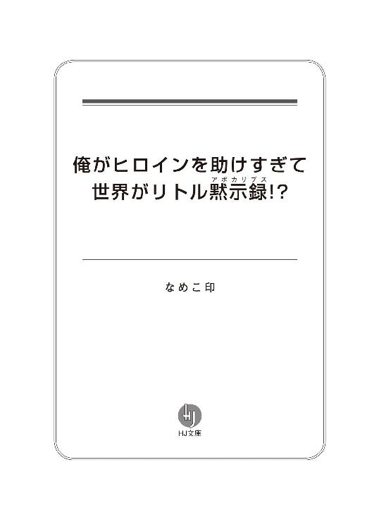
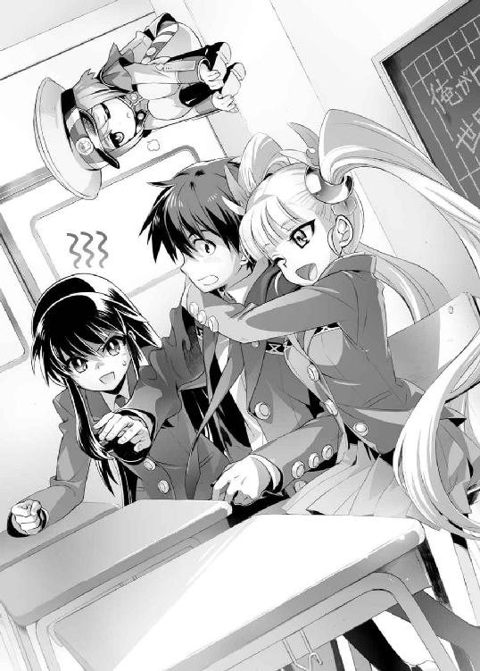

| 俺がヒロインを助けすぎて世界がリトル黙示録！？ (ＨＪ文庫) | |
| なめこ印 | |
| (2011) | |


プロローグ０―１ 大友皐月
森羅の大魔法。
森羅万象を記したアカシックレコードにアクセスし、この世の理の全てを知ることができる大魔法。――その存在は、古くから魔法使いの間には噂されてきた。
もし実在するならば、その魔法は世界を救うことも滅ぼすことも、また支配することも可能とされる究極の魔法......そのあまりの荒唐無稽さに、ただのお伽噺と鼻で笑う者もいる。
だが、その大魔法の噂は数多の時代を経ても残り続けてきた――その大魔法を脈々と受け継ぐ一族がいるという、もうひとつの噂とともに。
その大魔法を守り続けてきた一族のうら若き少女は、今まさに悩んでいた。
彼女の名は大友皐月。明日、十六歳になる。
十六歳とは、彼女の一族にとって大きな意味を持つ年齢だ。
森羅の大魔法を代から代へ子から子へと受け継ぐ一族は、その特殊性ゆえに、血を絶やさぬようにあるプロテクトがかけられている。
それが森羅の契約と呼ばれるものだ。
契約の名の下に皐月と唇を交わした者は、彼女の生涯のパートナーとなる。
端的に言ってしまえば、確実に子孫を残すための契約魔法だ。
なんだそれだけか――とは問屋が卸さないのが大問題。
なぜなら森羅の契約を交わした者は、皐月と同じく森羅の大魔法が使えるようになるからだ。
その大事な契約は術者が十六歳になると交わせるようになる。
前述の通り、森羅の大魔法とは諸刃の剣。
もし森羅の契約を交わす相手の選択を誤れば、最悪、世界が滅ぶ。
しかも森羅の大魔法を悪用しようとする邪な輩はいつの時代にも絶えずいる......。
そういう輩から大魔法を守るために、皐月の一族ははるか昔から幾千重もの偽装と隠蔽を施し、自分たちの正体を隠してきた。
しかし、つい最近それらの偽装を破り、森羅の大魔法の在り処を突き止めた男が現れた。
男の名はメサイア・キャンディストラップス。現代最強の魔法使い。
強大な魔法力もさることながら、力と知識に対して貪欲で極めて自己顕示欲の強い男と噂されている。そんな男が森羅の大魔法を手に入れたら大変なことになるだろう。
皐月の両親は娘と森羅の大魔法を守るため、メサイアを迎え撃ちに行った。
だがメサイアが相手ではそれも時間稼ぎにしかならないだろう。
皐月もこういう時のために転移や浮遊など、逃げるための魔法を重点的に覚えている。しかし、根本的な魔力の総量が皐月とメサイアでは桁違いなので、一瞬の逃げ足だけなら彼女の方が上でも、長期間逃げ続けることは叶わない。せいぜい一～二日が限界だ。
両親は皐月を産んだ時点で森羅の大魔法の全てを娘に継承しているので、今この世でアカシックレコードへのアクセスが可能なのは彼女ただひとり。契約者の席もただひとつ。その席に座るためならば、メサイアはどんな手段でも取るに違いない。契約の名の下にと言いつつ、メサイアほどの魔法使いなら方法はいくらでもある。
皐月に残された選択肢は、彼の者の到着よりも早く、先に誰かと契約を交わす、それだけしかない。
「......っ」
思わず涙が出そうになり、皐月は目尻を拭った。
できれば、ちゃんとした恋がしたかった。きちんと手順を踏んで、愛を育んで、その末に秘密を告白し、『彼』に受け入れてもらいたかった。
けれど時は待ってくれない。メサイアは待ってくれない。
皐月は涙が紙の上にこぼれないように......手紙を書くのを再開する。
（こんなことなら、中学の時にさっさと告白すればよかった）
今更なことを思いながら、皐月はペンを走らせる。何度も何度も文字を滲ませ、その度に新しい便箋を用意して......。
明け方、ようやく手紙は完成し、皐月は封筒の表に『彼』の名前を書いた。
『波乱烈火様へ』――と。
プロローグ０―２ イリス・フィネリタス・サイファーコール
「もうっ！ せっかくこんな田舎星まで逃げてきたのに！」
イリスは後方を振り返りながら悪態をついた。
建物の屋根から屋根へ。スーパーマンのように跳ね回る影は彼女と彼女を追うものを含めて全部で三つ。
後ろのふたりはいずれもイリスの故郷フィネリタ星からの追っ手だ。
彼らはサングラスをかけて黒いタキシードを着こなし、一見してこの星の現地人――地球人によく似ている。しかし、臀部からは馬のような尻尾が生えており、それが如実に彼らを地球外生命体であると物語っていた。
もちろん銀色の尻尾をお尻から生やすイリスも同じ宇宙人だ。
それどころかイリスにいたっては、フィネリタ星の最高権力者の娘なのだが、目下家出中の身である。
理由は単純、父が持ってきた縁談が嫌だったからだ。より正確に表現するならば、縁談というよりも政略結婚、あるいは大国への貢ぎ物と言った方がいい。とにかく彼女の意思をまるで無視した結婚話だった。
そんなの絶対に嫌、とイリスは父に反発した。
彼女は私用の宇宙船を使いランダムワープを駆使して、こんな遠くの星まで逃げてきたのだ。でもすぐに追っ手がきた。イリスの浅知恵など父にはお見通しだったらしい。
けど、おとなしく捕まるなんてとんでもない。
イリスは逃げた。
必死に逃げた。
で、慌てた勢いでとある老朽化した建物の屋根を踏み抜いた。
「キャアアアアアアアアアアアアアアアアアアア！」
落下の衝撃で凄まじい量の土と埃が舞い、イリスも追っ手もお互いを見失う。
大量の埃にまみれながら、最悪、とイリスは思った。
その直後、ひとりの少年が現れる。
「こっちだ！ 逃げるぞ！」
「え？」
彼は十センチ先も見えないような土埃の中、イリスの手をギュッと握り締めて走り出した。
突然のことで混乱するイリスは、彼に手を引かれるがままに建物を脱出する。
少年はどうやら地球人のようだ。
そして、どうもイリスのことを助けてくれたらしい。
（な、何なの......ていうかっ、手......）
異星人とはいえ、はじめて触れた男の子の手は思いのほか力強くて、その手に引かれる度にイリスの頬はドンドンと熱く、胸はキュンと高鳴っていった。
しばらくの間イリスは少年に連れられるままに走り続け......やがて彼の方が先に立ち止まってぜぇぜぇと荒い息を吐いた。どうやら地球人とフィネリタ星人の身体能力には大きな差があるようだったが、彼女は彼を置いてもっと遠くへ逃げようとはこれっぽっちも思わなかった。
「ね、ねぇ、あなたの名前は？」
なぜか名前を尋ねる声はつっけんどんなものになってしまった。未だに手を離さない彼に話しかけるのが、どうしようもなく恥ずかしかったせいだ。
イリスの問いに、少年は波乱烈火と答えた。
プロローグ０―３ ハリッサ・ホウプ
数百年の時を経て復活した魔王を倒すために編成された第七回魔王討伐軍は、それまでの討伐軍と同様に失敗した。
人・弓・魔法、いずれも魔王の潜む孤島を覆う結界を破れず、魔界から召喚された魔物たちに蹴散らされてしまったのだ。
各地に出没する魔王軍によって国力はドンドン減退していき、もはやこの国に魔王を倒す余力など残っていなかった。
だからこそ誰もが待ち望んでいた。
伝説に語り継がれる勇者の再来を。
「......ででででは、今より越界召喚術をははは始めます！」
メチャクチャに上擦った声で、女魔導師のローブを着たハリッサは宣言した。
彼女の前には国王と大臣が、脇には他の重臣と軍のお偉方が控えている。
これから彼らの前で、ハリッサは世紀の大魔術を成功させなければならなかった。
王家に伝わる伝説の秘儀――異世界から勇者を召喚する大魔術を。
（ぜぜぜ、絶対成功させないと......！）
ハリッサが両手で握った杖の先から、緑色の魔力が召喚陣に注ぎ込まれる。このまま臨界に達するまで魔力を注ぎ続ければ、魔王を倒してくれる勇者が異世界からこちらの世界へ現れる――はずだ。王家の伝承に間違いやデタラメがなければ。
（あうぅ～段々成功しない気がしてきました～～～）
〝とある事情〟からハリッサは絶対にこの召喚を成功させなければならなかったが、いっこうに変化の訪れない召喚陣を見てドンドン弱気になっていく。
しかし、魔力を注ぎ込む手を休めるわけにはいかない。彼女は祈るような想いで魔力を注ぎ続け――不意に、召喚陣の輝きが変わった。
緑色の炎のように揺らめいていた魔力が、目も眩むような白色となり、王座の間を埋め尽くす。
「なっ、何事だ!?」
「何をしたハリッサ・ホウプ！」
「ウ、ウチは言われた通りやっただけですよ～」
怒号と泣き言が飛び交うこと数十秒。
召喚陣から放たれていた光が唐突にやみ――その中央に、先程まで玉座の間のどこにもいなかったはずの少年がひとり座っていた。
ただひとつ起こった変化は――召喚陣の中央に、ひとりの少年が現れたことだ。
「え？ 何？ 何だ？ ここどこだ？」
彼は困惑の表情を浮かべ、キョロキョロと辺りを見回している。
その少年が着ている服は、大陸中を見渡してもほかに類を見ない不思議なものだった。
その場に居合わせたお歴々たちの間で様々な憶測と疑問符が交わされる。
「異人？」「少年？」「見たこともない？」「異世界？」「召喚？」「成功？」
段々と全員の思考は収束していき、ひとつの答えを導き出した。
........................。「勇者？」
「勇者様！」
誰よりも早く飛び出したのは、彼を召喚したハリッサ自身だった。
少女は未だに戸惑っている少年へと駆け寄り、勢いのままに抱きつく。
ハリッサは目元に嬉し涙をため、陶酔しきった表情で少年の顔を間近で見つめる。彼の顔立ちはかなり平凡だったが、彼女の目には絶世の美男子同然に映っていた。
「え？ なっ、何で泣いてんだよ？」
「勇者様！ お名前は何と仰るのですか？」
少年の声を遮り、ハリッサは白馬の王子に憧れる少女のような声音で尋ねた。
彼女の様子に気おされ、彼はタジタジになりながら答える。
「波乱烈火だけど......なぁ、ここどこ？」
プロローグ１ 今日から俺は
今日は俺の十六歳の誕生日だ。
同時に高校の入学式の日でもある。
現在式の真っ只中。始まってから三十分ほど経過している。中学の時と同じで式は退屈極まりなかったが、それでも表面上は取り繕い、俺は至極真っ当で勤勉な生徒っぽく振舞っていた。
そんな俺の目の前に青い髪を肩まで伸ばした女の子が現れたのはつい今し方。
小柄でかなり童顔な少女だ。中一か、もっと下に見える。教科書で見た日本陸軍の軍服のような格好をしていて、笑いもせずに俺を見つめている――宙に逆さまに浮きながら。
「波乱烈火様でございますか？」
その少女はなぜか俺の名前を知っていた。
「？？？」
誰だよこの子？ ていうか、どうして浮いてるんだ？
焦る俺は意味もなく手をわたわたと動かすが、隣の席に座るメガネの彼は怪訝な顔をしている。どうやら彼女の声も姿も俺にだけ認識できるようだ。
「本官の名前はアール。お手軽お気軽にちゃんづけで呼んでもいいですよ？」
少女は勝手に自己紹介を始める。しかも微妙に馴れ馴れしい。
ていうかヘイ待て落ち着け、俺とお前と一般常識。
問題、この少女――アールは何者？
俺の幻覚？ 妄想？ まさか......幽霊？
そんなのどれも見たくねぇし、見えても困るっての！
頭のひとつも抱えたい状況だが、今は入学式の最中だ。嫌でも背筋を伸ばしてマジメな顔をしていなければならない。でないとめだつ。
俺はめだつのが嫌いだ。座右の銘はフツーが一番。
フツーがいいんだよ、何事もな。
それをつまらねーって言う奴もたくさんいるが、俺に言わせりゃそいつらはフツーの何たるかを分かってないね。フツーの生活って奴の中には、趣味に打ち込むとか友達と遊ぶとか、そういう楽しいことも含まれてる。ダチと遊ぶのが嫌なんて言う奴がいるか？ 変に人と違うことをしたいとか考えるから、そういう当たり前で大切なことを見失うんだ。
結局フツーでいるのが一番幸せってこった。
「もしもーし、聞こえてますかー？」
で、その俺の大事な日常を完膚なきまでに破壊しようとしている存在が、さっきから目の前で手をひらひら振ってるわけだが......。
「おーい、波乱様ー？ んー呼び方固いですか？ 烈火ー？ まだダメですか」
いやいやすでに呼び捨てじゃねーか、充分やわらかいって。聞こえてないんじゃなくて無視してんだよ。つーか何でそんなフレンドリーなんだよ。
「じゃぁクソ羽虫ー、聞こえてますかー？ 返事しやがれですよぅ」
誰がクソ羽虫だ。なんなんだその急激なランクダウン。俺何かしたか？ 俺今クソ羽虫呼ばわりされるようなことしたか？ してねーよ！
ダメだ。こらえろ俺......！ 叫んだら相手の思う壺だ。
「あ、鼻毛出てますよ」と鼻を指すアール。
え？ マジで？
思わず鼻に手をやる俺。
「右じゃないです。左です左」
左か、左だな。誰かに気づかれる前にこっそり抜かねーと......あれ？ ないぞ？
「ウソですよ。引っかかってやんの」
「テメェ喧嘩売ってんのか!?」
「やっぱり聞こえてるんじゃないですか」
「......あ」やっちまった。
『そこの新入生君。誰と喧嘩しているのかね？』
さらに追い討ち。校長その他全校生徒に、親御さんの視線までひとり占め。ヒィッ！
「いっいえ、何でもないです」
『早く着席しなさい』
「はい......」
視線が痛い。今なら羞恥心で死ねる気がする。むしろ死にたい。頭が沸騰しそうだ。
「まぁ、鼻に手をやった時点で聞こえてるのは分かっていたわけですが」
しれっと言いやがったこのガキ......！
思わずまた叫びそうになるのを必死に我慢する。
「ファーストコンタクトに無事成功したので本題に入りたいのですが、いいですか？」
全然よくないが、ここで無視したらまた何をされるか分からない。
どうにかめだたずにこいつと話す方法は......ん？ そうだ。
俺はポケットからケータイを取り出し、メール画面を開く。
カコカコカコ
【お前は何者だ？】
文章を打ち込み、アールに見るようジェスチャーで促す。
彼女は空中でくるんと体勢を入れ替えると、俺の手元を覗き込んだ。
「これは随分と旧式の通信機器のようですね」
旧式？ いちおう新しいケータイに買い換えたばっかりなんだが。
「けれどそれも当たり前ですか。本官は未来から来ましたので」
未来？
【今、未来って言ったか？】
「その通りです。本官は未来人ですので」
未来人......マジか。
困惑はひとまず置いておき、俺は次々と疑問をぶつける。
【俺以外には見えないのか？】
「そうですね。本官は烈火さんにしか見えませんし触れません」
【触れるのか？】
「はい。逆に本官は烈火さん以外の人や物に触ることも話すこともできません。半実体存在というものなんですが、難しい説明は要りますか？」
【......】
「【......】はいちいち打たなくていいと思いますよ」
些細なツッコミは無視し、俺は一番肝心な質問をする。
【未来人が俺にいったい何の用だ？】
「本官は未来を救うために来ました。『波乱の血筋』を引く貴方のせいでメチャクチャになった未来を変えるために」
アールはやはりよどみなく答えた。
俺のせいで未来がメチャクチャに？
フツーの人生を目標にしている俺が、未来世界をどうこうしてしまうとはとても思えないのだが。
しかし、ほんの小さな心当たりがあった。
『波乱の血筋』――俺は俺の中に流れる『血』について、親父からとある話を聞かされていたのだ。
それはつい昨日の出来事だ。
▽
夜の波乱家にクラッカーの音が鳴り響いた。
「ハッピィーバースデイ烈火ぁー。ヒャッフゥー！」
「クラッカー人に向けんな。ヒャッフーとか口で言うな、親父」
「ブゥー、烈火ちゃーんつまんなーい」
年甲斐もなく頬を膨らませているこのアホが俺の親父、波乱次元。エプロンの似合う無精ひげの残念な主夫だ。ダイニングのテーブルの上で旨そうな匂いを漂わせる料理も全部こいつが作った。ケーキまで手作りなのだからそこは正直凄いと思う。でもチョコに『烈火ちゃんアイラビュー』と書くのはいい加減やめろ。
「さっ、早速食べようか」
「お袋がまだだろ」
「ママは明日の準備があるから忙しいの。だから先食べてていいってさ」
「あーそう」
明日の準備ってのはたぶんお袋の転勤の件だろうな。
お袋はやり手のキャリアウーマンで、この度めでたく海外の本社へ栄転が決まったそうだ。で、家事のできないお袋を心配した親父も一緒に海外へ行くことになったのだが、俺は日本が恋しいのでこちらに残ることにした。単純にひとり暮らしがしてみたいって気持ちもある。幸い両親も了承してくれた。
俺の誕生日も本当は明日なんだが、そんなわけで今日の内に祝っているというわけだ。
「烈火ちゃんケーキにロウソク立てる？」
「いらねぇよ」
誕生日ケーキのロウソクを吹き消すとか、ちょっと子供っぽいし。
つーか誕生日を祝ってくれるのが身内だけって色気ないよなー。
「そういや今年は皐月呼ばねーのか？」
「うん。ちょっと今年は烈火ちゃんに大事な話があるからさ、悪いけど断っちゃった」
「......ふーん」
「あれ～、皐月ちゃんいなくて烈火ちゃん寂しい？」
「ンなっ!? 別にそんなんじゃねーよ！ ただ誕生日は毎年一緒に祝ってたから、隣にあいつがいないと落ち着かないだけだ」
それもガキの頃から十年間も毎年一緒だったのだ。そりゃ違和感も覚える。
「へぇ～」
「うるせー、ニヤニヤすんな！」
「はいはい。ごめんネー」
何でウチの親父はいつもこう軽薄なんだか。別に親父のことは嫌いじゃないが、その辺はもうちょっと大人らしくして欲しい。
でもまぁ、そんな親父の口から『大事な話』ってのは、やや気になる。
「で、その大事な話ってのは何だよ？」
「うーん、そうだね。話そっか」
パセリを口に入れつつ、親父はその大事な話とやらを始めた。
「俺ッチたち波乱家って実はちょっと特殊な血が流れててね」
「特殊な血？」
「そう、『波乱の血筋』とでも言うのかな。波乱家の男児は十六歳になると、みんなある体質というか特質というか、まぁなんかちょっと人とは違うアレになるんだよ」
「んな話初耳なんだけど......つーか特殊な血が流れてるとか、マンガやラノベの主人公みたいだな」
「烈火ちゃんは鋭いねー」
俺が呆れているとなぜか褒められた。何が鋭いって？
「その特殊な体質っていうのは、烈火ちゃんがマンガやラノベの主人公みたいになっちゃうことなんだよ」
「......二次元にでも行けるようになんのか？」
「一生に一度は行ってみたいよね。帰ってこれないかもしれないけど」
「頭イテ......」
この時点で、俺はこれが親父の悪ふざけか与太話であると結論づけた。
「で、具体的に俺に流れてる『血筋』っていったい何なんだよ？」
あとはテキトーに話を聞き流すつもりで、俺は先を促す。ここで無下に話を中断させないのが家庭円満のコツだ。
「具体的って言われると難しいにゃー」
「語尾をにゃーするな。キモい」
「目指せキモかわ。で、話戻すけど......そうだね、マンガでもラノベでもいいけど、たとえば魔王にさらわれたお姫様を王子様が助ける『物語』を想像してみて？」
「『物語』？」
「そう。で、もし仮にその『物語』の中で王子様が魔王に負けちゃったら？ あるいははじめから王子様なんていなかったら？ 烈火ちゃんはその『物語』はどうなると思う？」
「......まぁ、バッドエンドになるんじゃねーの？ フツーに考えたら」
「そう――そんな時、失われた主人公の代わりにその『物語』に巻き込まれるのが、俺ッチたち波乱家の人間ってわけ。まぁたとえ話になっちゃったけど、要するに『物語』っていうのは、俺ッチたちが関わることになった事件や不可思議のことさ」
「『物語』、ねぇ......」
抽象的だが、まぁ意味は分かった。
「要するに変な事件に巻き込まれやすい『血筋』ってのが、ウチの家系ってわけだ」
「あと宇宙人とか未来人とか超能力者とかと知り合いやすくなるにょー」
「語尾をにょーするな。つーかいらねぇよそんな知り合い」
だいたい、その『物語』に巻き込まれるってのも願い下げだな。ンなことあるわけねーと思うけど。
サラダのレタスをパリポリ食いながら、『でも』と俺は思う。
もし仮に本当だったとしても俺なら『物語』なんて放っておいて逃げる。『巻き込まれる』ってことは、つまりその『物語』ってのは、本来は俺と何の関係もない厄介事のことなんだろう？ だったら、わざわざ手を貸す義理も手を出す理由もない。つーかゼッテー嫌だ。
「大変だなーウチの家系も」
「ハッハッハ、烈火ちゃん全然信じてないでしょー」
「今の荒唐無稽な話を信じろって？ つーかその話が本当なら、親父は今頃世界平和にでも貢献してねーとおかしいんじゃねーのか？」
元気に手羽先を頬張る親父はどう見てもただの主夫だ。
「個人差はあるけど、ご先祖様の記録を見る限りだと、大人になると『物語』に巻き込まれなくなるみたいなんだよ」
「実に親父に都合のいい設定だな」
「信用ないなー。まぁいいさ」
実際『物語』に巻き込まれれば信じざるを得ないしね――親父は最後にそうつけ加えた。
「まっ、そういうわけだから烈火ちゃんも明日から覚悟しといてよ」
「へいへい」
やっと与太話は終わりか。
まぁ、誕生日の賑やかしのひとつと思えばまぁまぁだったかな。
「ああ、そうそう言い忘れてたけど」
「まだあんのか」
「うん。大事なことだから」
ふと親父が箸を置いた。
何だろうと思って顔を上げると、そこには驚くほど真剣な表情をした親父が俺を見ていて、思わず背筋が伸びてしまった。
「これから烈火ちゃんは凄い大変な目に遭うと思う。俺ッチたちは所詮ただの人間だから、本物のヒーローみたいに全てを解決できるわけじゃない。自分の命が危ないと思ったら逃げたっていい......だけど、簡単に自分が関わった『物語』を見捨てることはしないで欲しい。父さんと約束できるかな？」
こんなマジメな顔の親父は、久しぶりに見た。
俺がまだ小さい頃の話だ――ダンボールに入れられた猫が増水した川を流されてるのを見つけたことがある。
どうしようと思いつつ右往左往するばかりだった俺の隣で、一緒にいた親父はすぐ服を脱ぎ、迷わず川に飛び込んだ。そのあと衰弱した猫を獣医まで運んで、猫が元気になったら今度は里親を捜すためにあちこち奔走していた。あの時の親父は、子供の俺の目に本物のヒーローのように映ったもんだ。
「ああ、分かったよ。俺に主人公なんて務まるか、分かんねぇけどな」
あの時の親父を思い出したせいか、つい俺は頷いてしまった。
変てこな『血筋』の話なんて、親父の作り話のはずなんだがな。
その時、明日の荷造りを終えたらしいお袋がダイニングに現れた。
「お待たせー」
お袋は息子の俺が言うのもなんだが結構な美人で、実年齢より十歳は若く見られることが多い。よくもまぁこの親父がお袋のハートを射止められたものだ。
「ママ遅ーい。料理なくなっちゃうよー。せっかく俺ッチが心を込めて作ったのに」
「次元さんの分の荷造りも私がやったからでしょう」
「俺ッチの分もやるって言ったのママじゃない」
「それは次元さんに任せるとトランクに荷物が収まらないせいよ」
「ハハハー、ごめーん」
お袋が席に着いていつもの団欒が始まると、明日からしばらく離れ離れということもあり、ついたくさん話し込んでしまった。その内俺は『波乱の血筋』なんて話はすっかり頭の隅に追いやっていたのだが――。
▽
――何でアールの口からも親父と同じ話が出てくるんだよ？
【どうしてお前が俺の『血筋』についてとやかく言うんだよ？】
「烈火さんは『全ての戦争』の最重要人物です。貴方個人のことはもちろん、波乱家の家系にまつわる全情報は調査済みですよ」
俺のプライバシーは皆無か。いや、それより。
【『全ての戦争』って何だ？】
「文字通り『全てを巻き込んだ戦争』です。詳細は一部を除いて教えられません」
【なぜ？】
「それは本官の任務と深く関係しています」
【未来を救うとかいう話のことか】
「です。貴方は昨夜父親の波乱次元から『波乱の血筋』について説明を受けましたね？」
【受けた】
「現時点で貴方はまだ半信半疑のはず。ですが、今はそれら全ての情報が事実であると認識した上でお聞きください」
アールは空中で正座みたいなポーズを取る。
「本官のいた未来の歴史において、波乱烈火は実に多くの『物語』に巻き込まれ、実に多くの『ヒロイン』たちを救いました」
【『ヒロイン』って？】
「とある王国のお姫様とか謎の美少女転校生とかそんなんです。『物語』に『ヒロイン』はつきものでしょう？」
まぁそう言われれば、そうかもしれないが。
「ところで烈火さん」
【？】
「貴方って優柔不断な上に女の子の扱いがヘタでしょう」
「ブッ！」
いきなり何を言い出すんだ。思わず噴いちまった。あ、いや、メガネ君変な顔しないで。
【ま、まぁカノジョとかできたことないけどよ......それが何か関係あるのかよ？】
「もちろんです。未来の烈火さんは星の数ほどの『ヒロイン』を救いましたけれど、フラグを立てるばっかりでひとつも回収しなかった――で、ほったらかしにされた少女たちがブチ切れて、未来の烈火さんを巡って始めた大戦争が『全ての戦争』です」
【マジで？】
「マジです。でなきゃ本官はここにいませんし、『全ての戦争』も起こってません」
【ちょっと待て！ 俺は大人になればもう『物語』に巻き込まれることはないって聞いたぞ!?】
「貴方が『物語』に巻き込まれなくなっても、貴方に助けられた『ヒロイン』たちがいなくなるわけではないんですよ？ 当然、彼女たちの気持ちも。そこまで想われるなんて、男冥利に尽きますね」
【......】
「だから【......】は打たなくてもいいですって」
動揺しすぎて何も言葉が思い浮かばなかったんだよ。察せよ、俺の繊細な小市民ハートを。
【いや、ていうか何でそんな大戦争が起こるんだ？ だって女の子たちが始めた戦争なんだろ？ そもそも何で戦争なんて規模に発展するんだ？】
「考えが甘いですね。記録に残る烈火さんが救った『ヒロイン』と『物語』の数は数百にのぼります。先程述べた通り詳細は教えられませんが、貴方が救ったのはそれこそマンガやラノベのような『物語』群です。想像してみてください。様々な設定や世界観を持つマンガやラノベのキャラクターたちが、同じリングの上で戦い始めたらどうなるか？」
【軽く想像しただけでも地球が十回ほど跡形もなくなった】
「まぁちょっとしたリトル黙示録ですよね」
もちろん、全て仮定の話だ。本当にそうなら......という話に過ぎない。
だが、実際にアールは目の前にいる。
【念のためお前が立体映像とかのトリックじゃないか確認したい。触ってもいいか？】
「いいのでございますよ。お好きなところにお触りください」
と言いつつさりげなく胸を張るアール。そこを触れと？
【握手でいい】
「左様で」
ニギニギ
確かに触れた。アールは俺にしか見えず触れず、彼女の声は俺にしか届かないというのは本当だ。なら『全ての戦争』や『波乱の血筋』の話も本当なのか......？
「本官の任務は烈火さんにきちんと『ヒロイン』の誰かとくっついてもらって『全ての戦争』を未然に防ぐことであります。これから任務完了までずっと烈火さんを監視させていただきますので、早く誰か口説いちゃってくださいね」
「口説くっておい！」
あまりにもアールが淡々ととんでもないことを口走ったので、思わずまた声を出しちまった。
もうメガネ君の視線も先生の視線も痛いったらありゃしない。
▽
俺が騒いで恥をかいた以外、入学式は滞りなく閉会し、新入生は各々のクラスに移動して自己紹介を含めたホームルームを済ませた後、そのまま昼下校となった。
「そういえばさっき俺は未来ですでにいくつも『物語』を救ってるって言ったよな？ てことは万が一俺が変てこな事件に巻き込まれても、最悪死ぬことだけはないわけだ」
「烈火さんはバカですね」
アールはやれやれと俺の後頭部に向かってため息をついた。なんでも彼女は俺から五メートル以上離れられないように設計されているらしく、どこへ行くにもフワフワとついてくる。学校のトイレとかどうしよう？
「本官は先程未来を変えに来たと説明しましたよ？ 本官が過去にいる時点ですでに未来は変わりつつあります。未来の歴史通り、貴方が『物語』を解決できるかはもう分からないのでございますよ」
「待て。それって俺にとってかなり不利益な情報じゃねーか？」
「まぁ未来人からすれば、烈火さんは未来をメチャクチャにした張本人なんですから、それでうっかり死んじゃうのもいい気味って奴なんじゃないですか？」
「......なんかお前らのために頑張る気が失せてきたわ」
今日から十六歳で高校生でひとり暮らし......で、未来を救うために頑張らなきゃならないなんて、余計なオプションがついてきたもんだ。新生活を前に昂揚していたテンションがダダ下がりだよ。
「ていうか、烈火さんって名前の割に覇気がないですよね。顔立ちも並だし、何でみんな貴方のことを獲り合ったのかさっぱり分かりません」
「言ってろ」
アールの言葉には時々トゲが混じる。それは彼女の元からの性格なのか、それとも......。
「お前もやっぱり俺のこと、死んだ方がいいってくらい憎いのか？」
「さぁどうでしょう？ 本官はこの任務のために作られたキクルムという人工生命体です。なので未来世界についての知識は持っていますが、実感はあまりありませんね」
「人工生命体、ねぇ」
「ちなみに二歳です。本官に手を出したら、烈火さんはペドフィリア確定ですね」
「オムツも取れてないガキがマセたこと言うなっての」
「失敬な。外見はこの通りお堅い格好してますけど、中身の下着は意外とセクシーですよ。見ますか？」
「見ねぇよ」
しっかし実年齢二歳か。表情に乏しかったり口調に抑揚がなかったりするのもそのせいなのか？
アールのどこかアンバランスな態度にも納得がいった。
「おや？ 烈火さん、あれは何ですか？」
唐突に彼女は俺の首をグキリと折り曲げ強制的に横を向かせたあと、商店街の小さな電化製品屋の店先を指差した。通りに面したショーケースには大型のテレビが陳列され、ちょうどお昼のニュースを流しているところだった。
「ありゃテレビだよ」
「それくらい知識にあります。ではなく、あの流れている内容です」
「んん？ 『××市で大停電、晴れた空から突然雷が落ちたのを見た住民も』だってよ」
「それも音声を聞けば分かります。そうではなく、あれはいわゆるニュース番組というものですか？」
「えっ、そっち？ ......まぁ、あれはニュース番組で合ってるけどよ」
まさか番組の内容じゃなくて番組のジャンルを聞かれてるとは思わなかった。
「へぇー、あれが......烈火さん、もっと寄ってください」
言われた通り俺はテレビの前まで移動する。するとアールはテレビを右から左から覗き込み始めた。
「未来にはテレビがないのか？」
「失礼な。ありますよ。ただ本官はテレビがどういうものなのかは知っていても、実際に見るのははじめてなのです。任務に必要ありませんから」
「......そっか」
さっきまでとうってかわってキラキラした目でテレビを見つめるアールは、見た目相応の子供のようだった。キクルムだか何だか知らないが、どこにでもいるフツーの女の子だ。
それなのにアールには友達と遊んだことも、自分のために何かした経験すらもないんだよな。
何だそりゃ、って俺は思う。
未だに信じがたいことだが、俺が未来をメチャクチャにした張本人だとして......何で未来の大人たちは、こんな小さな女の子に全部託して俺の元に送ったんだ？ そのために作られたとか言っていたが、そんなのフツーじゃない。それともフツーじゃないことがまかり通るほど、未来はズタボロになっているんだろうか？
だからって、よく知りもしない未来のことまで俺には責任なんて取れない。
そんなこと知るかよって思う。
だが、そんなことのためにアールが過去へ送られてしまったのは、どうも俺のせいみたいだ。おまけに俺以外にアールに触れる奴も話せる奴もいないのなら――助けられるのが俺しかいないなら――まぁ、見捨てらんねーよな。口が悪いところもあるけど、生意気盛りの子供だと思えばそれも愛嬌だ。
「俺の家にもテレビあるから、帰って好きなだけ観ろよ。何か映画とかドラマとか観たかったら、レンタルショップで借りてきてもいいからよ」
それまでテレビ画面にかじりついていたアールが、俺の言葉に反応してこちらを振り向いた。
「......いいのですか？」
小さく首を傾げたアールは相変わらず無表情だったが、それでも嬉しそうに見えたのは俺の自己満足だろうか？
今はそれでもいいと思って、俺は頷いた。
「今日からひとり暮らしだし、そのお祝いってことでプチパーティーしようぜ。って、お前はお菓子とか食えないのか。じゃぁその分借りるＤＶＤの本数を増やすってことで」
バイトもしてない学生としてはだいぶ気前のいいことを言ったつもりなのだが、なぜかアールはジィ～っと疑いの眼差しを向けてきた。
「......言っておきますけど、本官は貴方の攻略対象には入っていませんよ？」
生まれてはじめてズッコケるなんてリアクションをしたね、俺は。
「くだんねぇこと言ってないで、ほらっ行くぞ」
軽口を叩きつつ、アールの手を引いて歩き出す。彼女は宙に浮いてるので重さは感じないが、握っている手の平は温かい気がした。
未来の世界だの特殊な血筋だの、いろいろと面倒なことは山積みだが、それはまだまだ先の話だ。今はそれよりも突然現れたこの奇妙な同居人との生活をどうするか、ということの方が最重要課題のようだった。
とまぁこれが俺とアールの出会い。
俺が渋々ながらも非日常に片方の足を突っ込んだ瞬間だ。
......とっくに頭の先までズブズブ泥沼に浸かってるとは、あんまり思いたくなかった。
第一章 複数のスタートライン
１―１ 幼馴染に手紙で呼び出される
今朝取り忘れていた新聞を郵便受けから取り出したら、間に手紙が挟まっていた。
「あれ？」
「どうかしましたか？」
「いや、俺宛の手紙があった......って、切手が貼ってない？」
直接ウチまで来て投函したのだろうか？ いったい誰が？
「えーと、差出人は......？ なんだ、皐月からかよ」
「お知り合いで？」
「幼馴染。つーかあいつ入学式にも出ないで何やってんだ？」
俺の知ってる幼馴染にしては行動が不可解だ。
手の中で手紙を弄びながら玄関を開け、靴を脱いだ。
「その皐月さんというのは、入学式をサボるような不良娘なんですか？」
「いや、むしろ真逆。中学じゃ生徒会長とかやってた」
「へぇー......それは変ですねぇ」
「妙に意味深に言うな？」
「そんなことないですよ？」
どうにも引っかかるが......まぁとりあえず今はこの手紙か。
俺はリビングのソファにカバンを放りながら封筒を破る。中から消しゴムの消しカスがいくつかポロポロこぼれ落ちた。
丁寧に折りたたまれた便箋を開くと、見慣れた皐月の文字が現れる。
『波乱烈火様へ とても大事な話があります。手紙にも書こうと思ったけど、やっぱり全部直接話したい。昔ふたりでよく遊んだ場所で、今日一日待ってます。 大友皐月より』
相変わらず綺麗な字だ。
だがこの手紙には消した跡がないのに消しカスが入っていたということは、何枚か便箋をダメにしたのだろうか？ 几帳面なあいつらしくもない。
「随分と中抜けな内容ですね。肝心の用件が何も書かれてませんよ」
いつの間にか隣で勝手に俺の手元を覗き込んでいたアールがそうコメントした。
「それをこれから会って話すんだろ」
「今から行くんですか？」
「手紙に今日一日待ってるって書いてあるじゃねーか。あいつ変に頑固なとこあるから、ほっといたらホントにずっと待ってそうなんだよ」
「けど烈火さんも入学式でお疲れでしょう？ 少し休んでからでも......」
どうしたんだこいつ？ 急に俺を気遣うセリフを吐くなんて......あ。
「もしかして、そんなにテレビ観たかったのか？」
「......本官は別にそんなこと言ってません」
「ワリィけどまた今度な。週末に死ぬほどつき合ってやるから」
「だから気にしてないです」
「じゃぁぶーたれんなって」
「ぶーたれてませんですよー」
とか言っても、やっぱり不機嫌に見えるんだけど。
しゃーない。土日は徹夜でつき合いますかね。
借りるＤＶＤのラインナップを考えながら、俺はアールと一緒に家を出た。
▽
俺と皐月が昔よく一緒に遊んだ場所といえば、自転車を飛ばしてだいたい十五分ほどかかる小高い丘の上の廃工場だ。
着いてから腕時計で時間を確認すると、ちょうど一時になったところだった。
「......つーか皐月の用事って何なんだろな？」
「今更な疑問ですね。ていうか、それを今から聞きに行くんだって、さっき烈火さん言ってたじゃないですか」
「そうだけどさ。皐月が入学式サボってまで俺に話したいことって、何だろなと思って」
「はぁー、やれやれ。烈火さんはホント鈍いですねー」
「何だよ、鈍いって」
「鈍チンって意味ですよ。親しいはずの女の子がわざわざ手紙で思い出の場所に男の子を呼び出す、と言ったら導き出される答えはひとつに決まってます――告白です」
「は？」
「うわー、失敬な顔してますね。人の名推理に対して」
「どこが名推理だよバーカ」
俺と皐月に限ってそんなことあるか。
「もう十年以上俺とあいつは幼馴染やってんだぜ？ ほとんど家族みてーなもんだ」
「......本官に与えられた任務の困難さが頭ではなく心で理解できました」
「何で？ ......まぁいいや、行こうぜ」
俺は自転車に鍵をかけ、廃工場の裏口に向かった。
このオンボロ工場は俺が子供の頃からずっと立ち入り禁止なのだが、一箇所だけ裏口の扉の鍵が壊れていて、いつもそこから侵入していたのだ。
案の定、鍵は壊れたままで、俺は久しぶりに子供の頃の遊び場に入った。
「中は暗いですねー」
「アールにも暗く感じられるのか？」
「本官の五感は人間基準です」
「へぇー、暗闇じゃ目でも光るのかと思ってた」
「それ、本官は何も見えないですよね」
そりゃそうだ。
とりあえず俺たちは目が暗闇に慣れるまで待ってから奥へと進んだ。俺と皐月が遊んでいたのはいつも奥の広い部屋で、少しばかり埃まみれの通路を歩かなくてはならない。久しぶりに来たせいかもしれないが、子供の頃より老朽化が進んだ気がする。
記憶がやや曖昧だったが無事に目的の広い部屋に辿り着いた。元は工場のベルトコンベアとか大型の機械を置いていた部屋なのだろうが今は全て撤去され、あとには体育館ほどの広さがある空間が残されている。
ここは通ってきた通路と違って窓があり、外から陽の光が入ってきてだいぶ明るい。それでも少し薄暗いが、部屋の中央でこちらに背を向けている彼女を見つけるには充分だった。
「皐月」
俺の呼びかけにピクリと反応し、彼女は振り返った。
派手さのない私服に、脱色もパーマもかけていないストレートの黒髪。化粧もあんまり好きでないと言うオシャレが苦手な幼馴染だが、毎日手入れに時間をかけているその綺麗な黒髪を密かに自慢に思っているのを俺は知っていた。
皐月はいつも通り穏やかな笑みを浮かべる。
「おはよう烈火」
「おう、おはよう......って、もうこんにちはの時間だぜ？ 何で入学式休んでんだよ......ああ、そういや今年も同じクラスだったぞ」
「そう。変わらないね」
「誰かが狙ってやってるとしか思えねーよな......つーか、いつからここで待ってた？」
「朝から」
「やっぱり！」
ほら見ろ！ こいつ放っておいたら絶対に一日中待ってたぞ。
「ワリィ。今朝は郵便受けの中身確認し忘れたんだ」
「今朝の内に見つけてたら、すぐここへ来てくれてた？」
「当たり前だろ」
「そう。よかった」
「は？」
おいおい、そんなの当然じゃねーか。何でそんなホッとしてるんだ？
なんか......変な空気だ。
「で......話って、何だよ？」
「うん......信じられない話かもしれないけど......実はね、私......」
皐月はそこでいったん言葉を切り、逡巡するように視線を彷徨わせた。
いったいなんなんだ話って、妙に緊張する。わけが分からん。
アールはノーコメ。口を挟む気配はない。
そして、ついに彼女が意を決して何かを言おうとした時――建物が大きく振動した。
「「「!?」」」
その場にいた全員が息を呑むと同時に、廃工場の窓ガラスがバリンッバリンッと割れる。
振動自体はすぐに収まり、再び工場内に静寂が戻った。埃はかなり舞い上がったが、天井が落ちてきたりはしなかったようだ。
「地震じゃないよな、今の......って、うわわっ！」
気がついたら俺は皐月の頭を守るように彼女を抱き締めていた。どうやら無意識の内にかばっていたらしい。
「皐月、大丈夫か？」
とりあえず、なんだか気まずいので声をかけてみる。
返事がない。
まずい。急に抱きついたのを謝るべきか......と、そっと皐月の顔色をうかがってみると、
「......」
暗がりでもはっきりと分かるほど青い顔をしていた。
カチカチカチと歯の根も合ってない。
「おい、皐月？ どうした？」
俺は皐月の肩を叩こうとして、
「彼女に触れないでもらおうか、少年」
朗々と台本のセリフを読み上げるような声に遮られた。
振り返ると、上等そうな生地の服の上に、ワインを闇に浸したような色のマントを羽織った、金髪碧眼の男が立っていた。
なんか......嫌な感じのする男だ。ていうか、いつの間に現れた？
自然と俺は皐月を背中に隠すような位置に移動し、男を睨みつける。
「アンタ、誰だ？」
「君こそ誰だい？ 彼女を迎えに来る前に、ちゃんとこの国の文化を調べておいたから知っているよ。相手に名前を尋ねる時はまず自分から、だろう？」
「波乱烈火だ。皐月の幼馴染さ」
「ほう......」
男は演技じみた声で頷いた。
「次はアンタの番だろ？」
「おやおや、随分と敵愾心むき出しだね？ 私は何もしてないと思うが」
「皐月を怖がらせてんだろうが」
「彼女が勝手に怖がっているだけだろう。私は彼女を傷つけたりしないさ、なにしろ大事な花嫁だからね？」
「あン？ 何だって？」
「花嫁――さ。彼女はこのメサイア・キャンディストラップスの花嫁となり、全知全能の智慧を与えてくれる存在なのだ」
......言ってることの半分も分かんねぇ。
その時、パラパラと何かの小さな破片が男の肩の上に落ちてきた。
「......？」
天井に、穴？
コンクリートでできた工場の屋根に無数の亀裂が走り、その中心に大人が通るには充分な大きさの穴がポッカリと開いていた。穴はちょうどメサイアと名乗った男の真上にあり、まるであいつがあの穴を開けて、そこから飛び下りてきたみたいだ。
......ンなアホな。あんなところから落ちたらヘタしたら大怪我じゃ済まない。だいたい、何の道具もナシにどうやって天井に穴を開けるんだ？
だがこの男が突然現れたカラクリと無関係とも思えないのも事実。
「......少なくとも、フツーじゃねぇよな」
じゃぁ何だってんだよ――と思ったその時、俺の脳裏に例の話がよみがえってきた。
『波乱の血筋』。
親父とアールが言っていた、俺の中に流れる特殊な血。
それとこれとが関係ないって考えるのは能天気すぎるか。
「さて、自己紹介も済んだ。そろそろそこをどいてくれるかな、少年」
「お断りだ」
「ほう、なぜ？」
「同じこと言わせンな。テメェ、皐月を怖がらせてるだろうが。だいいち、何で皐月がテメェの花嫁にならなきゃなんねーんだよ」
「彼女が私の花嫁になるのに、君に何か関係があるのかな？」
「関係大アリだバカ野郎。こいつは俺の幼馴染だ。お互いのホクロの数まで知ってんだぞ？ テメェが皐月を幸せにしてやれるってんなら話は別だけどよォ、とてもそうは見えねーんだよ。皐月が嫌がるのをテメェが無理やりどうこうしようってんなら、俺がこいつを守るのはトーゼンだ」
「烈火......」
皐月が後ろで小さく俺の名前を呟いた。歯はもうカチカチ鳴っていない。
「......少年。君は邪魔そうだな」
スッ、とメサイアが人差し指を俺に突きつける。
「――メサイアッ！」
突然、皐月が何かを制止するように相手の名前を叫ぶ。
同時に横殴りの衝撃が俺の体を襲った。
俺はそのまま宙を水平に飛び、廃工場の汚い壁に叩きつけられる。
「グフッ！」
背中を強打し、衝撃で肺から空気が抜ける。
「烈火！」
「君は動くな、森羅の娘」
俺に駆け寄ろうとした皐月をメサイアが制止する。森羅の娘？
「う......ぐ......やっぱフツーじゃねぇな」
背中と左半身が鈍く痛み、奇妙な痺れが全身を巡って、筋肉が一部痙攣している。
わけ分かんねぇ......あいつ何しやがった？
「あらあらまぁまぁ、大丈夫ですか烈火さん？」
「アール......」
そういやアールは俺から五メートル以上離れられないとか言ってたな。俺が吹き飛ばされたから、一緒に引っ張られてきたってわけか。
「おい、メサイアは俺に何したんだ？」
「本官は立場上、全ての『ヒロイン』に公平であるようにプログラムされていますのです。誰かひとりに肩入れすれば、恣意的に未来を変えてしまうからです。当然『物語』の解決にも一切手は貸せません」
「......そういう断りを入れるってことは、やっぱりこれが親父の言うところの『物語』に巻き込まれるって奴か」
「あらま、抜け目なく情報を集めますね。烈火さんはバカなのに意外としたたかです......確かに本官は任務の都合上、烈火さんが現在『物語』に巻き込まれているかどうか判別できますよ」
「それは教えてくれんのか？」
「『物語解決』に影響しない範囲でしたら」
どうやらあんまりアールからの手助けは期待できないらしい。この調子じゃ、『森羅の娘』ってのが何なのかも教えてくれねーだろうし。
しっかし、さっきのは何だ？ 手も触れないで、まるで魔法みたいに、いや、つーか、もしかして、本物の魔法......なのか？
本当にマンガやラノベみたいだな、親父。いきなり魔法使いが出やがったよ。
魔法なんて反則だろ。言い訳のしようもなく、完璧に非日常の出来事じゃねーか。俺の愛すべきフツーの生活を、いよいよ完膚なきまでに破壊しやがって......クソったれ。
「おや、立てるんですか？」
「立つに決まってんだろ。皐月が襲われてんだぞ」
マジで全身シンドいが、意地でも手足を踏ん張って体を起こす。
「何が起きてんのかまだよく分かんねーけど、皐月が危ねぇなら、それを助けんのに理由なんていらねぇよ」
「......へぇー」
驚いてんのか呆れてんのか分からないアールのため息を聞きながら、俺はどうにか立ち上がった。
「おい、待ちやがれ。この野郎っ！」
俺は立ち上がる際に拾った鉄パイプを、メサイアに向かって思いっきりブン投げた。だが、それは魔法使いに当たる直前で、バチンッと何かにはじかれてしまう。
「ほぅ、丈夫だな」
振り返ったメサイアは、立ち上がった赤ん坊を褒めるような口調で呟いた。
「そりゃこっちのセリフだっての」
「私は常に防御障壁を全身にまとっているからね。そんな物じゃ傷ひとつつかないよ」
「チートすぎんだろ......」
軽口を叩いてみせるが、正直余裕はない。それは向こうにもバレバレだろう。
「烈火！」
皐月が俺の名前を呼び、何か手の平サイズの物をこっちに向かって放り投げる。
受け止めてみると、そいつは彼女のケータイだった。
「それを持って逃げて！ 私は大丈夫だから！」
「バカ言うなっ！」
このケータイを形見にでもしろってのか？ 運動の苦手なお前がそのメサイアとかいう魔法使いを相手にして大丈夫なはずないだろ。
俺と皐月のやり取りを見ていたメサイアは低く笑った。
「やはり君は私が彼女を手に入れるにあたって、非常に邪魔な存在となるようだな。命までは取らないつもりだったが、念のため排除しておこうか」
メサイアが手の平を頭上へ掲げると、急に空気が震え、バチバチと火花を放ち出す。やがて火花は小さな雷と呼べるくらいに育ち、のたくる蛇のように宙を踊り始める。蛇と蛇は絡まり合い、さらに混ざり合い、ついにはまばゆい光の塊となる。
雷の、球。
ほかに何と言っていいのか分からないそれは、またたく間に膨張した。それこそあっという間に、人ひとりくらい軽く飲み込めそうなほどに。
「跡形もなくなるから安心したまえ。誰にも君の無様な死に様を知られることはないよ」
「いらねぇ気遣いだな、おい......」
とはいえシャレになってない。やはりメサイアは本物の魔法使いだ。
本能が逃げろと叫んでる。ビビってるかビビってないかで言えば、そりゃビビってる。あんなもん喰らったら絶対死ぬ。どう考えても死ぬ。
けど皐月を見捨てて生き延びて、それで俺はどのツラ下げて生きればいいんだよ......！
俺は震える足を押さえ、その場に踏み止まった。
ったく、『波乱の血筋』だかなんだか知らないが、いきなり試練がキツすぎだろ。
俺が神様に文句を言った――その時、
「キャアアアアアアアアアアアアアアアアアアア！」
事態をさらにややこしくしそうな〝何か〟が空から降ってきた。
１―２ 空から女の子が落ちてくる
その〝何か〟は大量の瓦礫と一緒に落ちてきた。どうやら老朽化した上に脆くなっていた天井を〝何か〟が踏み抜いたらしい。
天井全体の四分の一ほどが崩れ、それらは主にメサイアの上に降り注いだ。同時に積もりに積もった床の埃をまとめて舞い上げ、部屋全体を覆い尽くす粉塵のカーテンを生み出す。
「クッ！ 何が起こった？」
メサイアの怒鳴り声がカーテンの奥から聞こえた。あれだけの瓦礫の直撃を受けて死なないのかよ......。
だが、これは逃げる絶好のチャンス！
俺は皐月のケータイをポケットにしまい、走り出す。埃まみれで視界は最悪だったが、勘を頼りにさっきまで彼女がいた辺りを探し、なんとかそれらしき人影を見つけた。
「こっちだ！ 逃げるぞ！」
「え？」
彼女は何か言おうとしたが、焦っていた俺はロクに返事も聞かずに廃工場の裏口を目指して走った。体をあちこちぶつけながら建物を脱出し、そのまま後ろも振り返らずに一目散に丘を駆け下りる。
「絶対俺が守ってやるからな！」
ゼェゼェ言いながら俺は彼女に向かって叫んだ。半分は恐怖を紛らわすためだったかもしれない。そうしないと走っていられなかった。途中で自転車の存在を思い出したが、今更取りに戻れるはずもなく、俺は足を動かし続けた。
どれだけ夢中に走っただろう。
走りながら俺は何度も彼女を励ます言葉をかけた。
そうやって安心させてやることくらいしか俺にはできなかったからだ。
もう廃工場のある丘も見えなくなるところまで走りに走って、ついに俺は限界に達した。
「ゼェー――ゼェー――」
口ん中が砂みてーだ。水が欲しい。
とりあえず、メサイアが追ってくる様子もないし、無事逃げ切れたようだ。
その時、ここに来るまでおとなしかった「皐月」が、
「ね、ねぇ、あなたの名前は？」
俺の知らない声で話しかけてきた。
「え？」
驚いて振り向くと、そこにはまったく見知らぬ少女が俺に手を握られて立っていた。
「ねぇ、名前よ、な・ま・え。早く教えなさいよ」
「な......波乱......烈火」
呆然としていた俺はつい素直に答える。
「波乱烈火......烈火ね」
謎の少女はなぜか嬉しそうに俺の名前を反芻する。
......待った。どうしてこうなった？
俺は案の定ついてきているアールに助けを求める視線を送る。
「土埃の中で烈火さんが取り違えたのですよ」
マジか？ でもこの子はどっから......そうか、あの時天井から降ってきた〝何か〟か。そういえば〝何か〟が落ちてくる前に、女の子の悲鳴が聞こえたような気もする。
「......ねぇ――ねぇ？ ちょっと聞いてる？」
「え？ いや、何？」
「もうっ！ このアタシがせっかく名乗ってあげてるのに、ちゃんと聞きなさいよね」
足元まで届く銀髪のツインテールを揺らしながら、少女はプンスカ怒った。
そして、ヒラヒラした不思議デザインのドレスの胸元に手をやり、誇らしげに胸を張る。
「アタシの名前はイリス・フィネリタス・サイファーコール。フィネリタ星の最高評議会『オワリア』の議長のひとり娘。本当ならこんな田舎星の現地人が触れていいような身分じゃないんだから、光栄に思いなさい」
「えっ？ あっ、ワリィ！」
ずっと手をつなぎっぱなしだったのに気づき、慌てて彼女の手を離す。
「バカね。光栄に思えって言ったでしょ。今回は特別に許してあげる」
しかし、イリスはまたすぐに手をつなぎ直し、俺に微笑みかけてみせた。
ただし改めて握られた手にはかなりの力が入っていて、今度は全然振りほどけそうにない、てか痛い。けど同時に女の子の手は凄くやわらかくて、ついドギマギしてしまう。
「な、何で今回は特別？」
「烈火は追われてるアタシを助けてくれたじゃない」
「......は？」
彼女は何を言っているんだ？
「話を聞く限り、イリスさんも誰かに追われていたんじゃないですか？ それで逃げてる最中にあの廃工場の天井をブチ抜いたと。そこで烈火さんが手を取って一緒に逃げ出したので、彼女は自分を助けてくれたんだと誤解したのでは？」
知恵熱で頭が破裂しそうな俺に、アールが親切に解説をしてくれた。
「な、なぁ俺は......」
「しかも、絶対俺が守ってやるからな、って......きゃぁー！ そんなセリフ言う男の子がホントにいるなんて思わなかったー」
イリスは俺の手を握ってない方の手を頬に当て、いやんいやん体をくねらせている。アールの推測はどうやら当たってるっぽい。
「は、ははは」
いろいろと勘違いなんだけど、訂正できる空気じゃなかった。
だが、皐月を置いてきてしまったとなると、早く工場へ取って返さなければならない。
そういう事情で急いでいることを相手に伝えようとするが、イリスはひとりで勝手に盛り上がり続けている。
「うん！ 決めた！ 烈火――あなたをアタシの恋人にしてあげちゃう！」
「ハイイィィィィィ!?」
それは段階をいろいろと踏み飛ばしてませんかねぇ!?
「パパも恋人を連れていけば、あんなくだらない結婚の話は諦めるはずだわ。よーし、そうと決まったら早速ゴーよ！」
勝手に話を進めるお嬢様は、肩にかけたポシェットから謎のアイテムを取り出す。それはお化粧に使うコンパクトみたいなデザインで、フタを開けるといくつかボタンが並んでいた。その内のひとつを彼女の細い指先がポチッと押す。
そして、突然俺たちの周りが暗くなったかと思うと、真上に巨大な飛行物体が現れていた。
「ユッ、ユッ......！」
「ＵＦＯのようですね」
驚愕して腰を抜かす俺に代わり、アールが冷静にコメントしてくれる。
イリスがまたボタンを押すと、今度は宇宙船から謎の光が俺たちに向かって降ってきて――そのまま光に吸い込まれるように体が持ち上がる。
これってキャトルミューティレーション!? あれ、しかも宙に浮かされてようやく気づいたけど、イリスってお尻から尻尾が生えてる!? え、ウソ、まさか宇宙人!?
「ちょ、ちょっと待ったー！ 俺の意思はー!?」
「アタシのこと絶対守ってくれるんでしょー？ アタシの恋人役、しっかりお願いね？」
「それはいろいろと誤解なんだー！」
俺の叫びは俺の体とともに宇宙船の光に呑み込まれた。
▽
「......んん」
「あ、気がついた？」
気を失ってたのか、俺？ いつの間にか見知らぬ部屋の中にいる......何かの操縦席みたいなのが見えて、あとは鈍い銀色の硬質そうな天井と床、それと小さな窓がふたつあるだけの狭い部屋だ。そこの床に俺は寝かされているらしい。
「まったくもービックリしたわよ。地球人って、Ｇの変化に強くないのね。あと汚かったから寝てる間に体と服は綺麗にしておいたわよ」
コロコロと笑うイリスの顔が、なんか妙に近い......ていうか、床の上に寝てるにしては頭の後ろの感触が随分とやわらかいような......？
「うっ、うわぁ！」
「なによー。アタシの膝枕がそんなに不満なの？」
ひっ、ひっ、膝枕!? あの伝説の!?
俺は顔が真っ赤になるのを自覚しながら、ついつい視線はイリスの太ももに吸い寄せられてしまった。あの露になった太ももの上に、俺の頭が......って。
思わず下を向いていた俺の目に、パタパタと揺れる彼女の尻尾が映った。馬みたいにサラサラとした毛並みで、彼女の綺麗な髪と同じ銀色の尻尾だ。見た目はかわいい気もするが、同時に彼女が地球人ではない動かぬ証拠とも言えた。
「いや、つーかここどこだ!?」
今更ながらツッコむ俺。
「宇宙船の中よ」
「じゃなくて！ この宇宙船はどこにいるんだよ！」
俺は宇宙船の窓にかじりつき、外の様子を確認する。
窓の外は、七色のぐにゃぐにゃとした空間が前から後ろへ流れていた。
「ここ、宇宙......？」
「ワープ空間よ。今フィネリタ星へ向かってるわ。三時間ぐらいで着くかしら？」
「三時間!? それは困る！ すぐに地球に引き返してくれ！」
皐月が危ないのだ。急いで助けに行かないと！
「無理よ」
しかし、返ってきたのは無情な答え。
「ワープ空間は基本的に一方通行なの。一度入ったら、目的地に着くまで出ることはできないわ。帰る場合はあっちに着いてからもう一回ワープし直さないとね」
「そ、そんな......」
俺はその場にへなへなと腰を抜かしてしまった。
「何よちょっと、どうしたの？」
どうしたじゃねぇ！ ......とでも怒鳴り返してやりたい気持ちでいっぱいだが、脱力しすぎて腹に力が入らなかった。
そもそも俺があの時皐月とイリスを間違えなければ......ああ。
嘆いてもどうにもならない。皐月の無事を祈りながらワープが終わるのを待ち、そのあとイリスに頼んで引き返してもらうしかない。
だがどんなに急いでも地球に帰るのに最低六時間......目の前が真っ暗になりそうだ。
そんな俺を見て、イリスがまたプンスカする。
「もうっ、シャンとしてよね！ そんな気の抜けた顔じゃパパに紹介できないじゃない」
「は？ パパ？ 紹介？」
「そうよ。烈火をアタシの恋人ってことにして、パパに紹介するの」
「......何でそんなことを？」
「サタモニア大王とアタシを結婚させるのをパパに諦めさせるためよ！」
「何で？」
そう聞き返すと、イリスは憤慨した。
「アタシは結婚したいなんてひと言も言ってないの！ あのキッモチ悪いサタモニア星人の親玉が一方的に求婚してきたのよ。で、パパは相手を怒らせたくないから、アタシを差し出そうとしてるの。汚い政略結婚。ううん、アタシは生け贄にされるようなものよ！」
「確かにヒデェ話だけど、そのサタモニア大王ってのは、怒らせるとそんなに怖いのか？」
「そりゃね。大銀河連邦......って、烈火は知らないか。まぁ宇宙の政府みたいなもんよ。各銀河から選ばれた七十二の星の代表者が運営してるの。で、アタシの故郷のフィネリタ星もその七十二議席の内の一席なんだけど、やっぱり政治屋だから序列と派閥ってものがあるわけよ」
「サタモニア大王の星ってのは、その中でも序列が高いってことか」
「そ。頭の悪い暴力主義者どもと武闘派連中の筆頭ってとこね。おまけに黒い噂が絶えないの。辺境の星に軍隊を送って好き勝手やってるとか、聞くだけで嫌な気分になるわ」
それが本当ならサタモニア大王ってのは最低な野郎だ。
「とにかくっ、アタシはヤなの！ あんな男と結婚するのは！」
「うわっ！」
何でそこで俺に抱きつくんでしょーかぁ!?
「だ・か・ら、烈火にアタシの恋人になってもらって、ゼーンブ台無しにしてやるのよ」
彼女の猫撫で声が耳をくすぐる。それ以上に俺の背中に当たるやわらかいふたつの膨らみが......プリンが！ 俺の思考をかき乱す。
「いや、何で俺が......」
「だってアタシのこと助けてくれるんでしょ？ それにアタシの手を握って引っ張ってくれた烈火、ちょっとカッコよかったしね。フリでもアタシの恋人役やらせてあげるなんて、特別よ特別」
「わ、分かったから早くはなっ離れ......て」
「？ 何で？」
どうやらわざと当てているわけではないらしく、イリスは笑顔のまま首を傾げる。
でもっ、そんなやわらかいものをぐりぐり押し当てないでくれ！
え？ 何？ 俺は政略結婚を阻止するためにイリスの恋人のフリをしなくちゃいけないのか？ いや、でもメサイアに襲われている皐月も早く助けなきゃで、つーかさっきから彼女のむにゅむにゅがムニムニと......あー、考えがまとまらねー！
ひとまず彼女に離れてもらって、考える時間を作らないと。
「悪いけどさ。何か飲み物とかないか？ さっきからノド渇いて」
「あっ、そういえばさっき凄い走ったもんね。待ってて、今持ってくるから」
そう言うとイリスは俺から離れ、スライドするドアをくぐって隣の部屋へ飲み物を取りに行ってくれた。
「......さて、アール」
「何ですか？」
ずっと空気に徹していたアールが挙手して返事をする。
「ひとつ質問させろ」
「構いませんよ。『物語解決』の手助けにならない範囲でしたら」
「じゃぁ端的に聞くぞ......俺は今、誰の『物語』に巻き込まれてるんだ？」
「イリスさんでしょうね」
「なら皐月はどうなった？ 無事なのか？」
「無事かどうかは答えられません。ですが、未だに烈火さんが皐月さんの『物語』に巻き込まれているのか、という質問でしたら答えはイエスです」
クソっ、やっぱりそうなのか。
「俺は皐月とイリスの『物語』に『同時に』巻き込まれたってことか」
「烈火さんったら大人気じゃないですか。いろんな『物語』から引っ張りダコですよ」
「軽く言うな！」
幼馴染と宇宙のお嬢様、両方同時に助けなくちゃならないとか厳しすぎる！
「まぁ本官としては烈火さんが『ヒロイン』相手に照れたり慌てたり、そういう反応がちゃんとできる人だと分かってひと安心です」
うっ......よく考えたらさっきの膝枕とか密着とか、アールに全部見られてたのか。
「それにしても烈火さん。あれは少し取り乱しすぎじゃないですか？」
「あんなことされたら男はみんなああなるって！」
必死に弁解したがアールはへぇーとニヤニヤするばかりだ。
「ったく......。アールはイリスのことどう思う？」
「本官に百合のケはありませんよ？」
「そういう意味じゃねぇ！」
「冗談です。彼女についてですか？ そうですね、好きなものは好きと言い、嫌いなものは嫌いと言う、実に率直な性格をしていると思います。ワガママ、子供っぽい、とも言えますが。少し天然っぽいところもありますね」
ふむ、俺の印象とだいたい一緒か。
「いい意味でも悪い意味でも子供っぽいんだな」
「でも体は子供じゃなかったと」
「知るかぁぁぁ！」
「けどあの胸が目当てで助ける気になったんですよね？」
「違うわぁぁぁ！」
俺がつい大声で反論した瞬間、扉がスライドしてイリスが戻ってきた。
「何が違うの？」
「いや、何でもない！」
イリスにはアールのことが見えていないのでテキトーに誤魔化しておく。
「はい。ジュース」
彼女が持ってきてくれたオレンジ色の液体は、スポーツドリンクのような味がした。スッとノドに染み渡り、あっという間に渇きを癒してくれる。
「なんか、凄くおいしいな」
「そう？ よかった」
俺の素直な感想に、イリスは笑顔を浮かべる。
正直また見惚れそうになった。
「？ どうしたの？」
「いや、何でもない！」
「それさっきも言ってたよ」
クッ、昨日まで皐月とお袋以外の女と全然縁のない生活を送ってたのに、急にエンカウント率が上昇しすぎだ！ 免疫ねぇんだっての！
赤くなった顔を隠すためにジュースをがぶ飲みしていた俺に、イリスがひょいっと密着してくる。また背中に胸が当たり、危うくジュースを噴きかけた。
「ねぇ、暇？」
「え？ あ、暇だけど、あのっ離れて......」
俺はさりげなく身をよじって逃げようとするが、肩に置かれた手が全然ほどけない。フィネリタ星人って地球人より力が強いのか？
「じゃあ船の中を見学させてあげるわ。烈火の星――地球だっけ？ あそこじゃまだない技術なんでしょ。きっと楽しいわよ」
「分かった。分かったから早く離れて......」
しばらくしてイリスは離れてくれたのだが、なし崩し的に彼女に船内を案内してもらうことになった。
やたら無機質な造りなのは操縦席だけらしく、それ以外の部屋の壁はピンクとか乳白色とかやわらかい色で塗装されていたし、彼女のプライベートルームには女の子が好きそうなファンシーグッズがいっぱいだった。この辺の趣味嗜好は地球人とあまり変わらないらしい。
そうして最後に案内されたのが、船の最後尾にある小さな部屋だった。
「ここは？」
「んー、物置みたいなものかなー」
イリスが「開けて」と言うと、シュンッと音を立ててドアがスライドした。
中に入れてもらうと、物置というだけあって、たくさんの物が置いてある。
ほとんどの物は用途さえ分からなかったが、中には興味をそそる物もいくつかあった。
「これは？」
「ワープウォッチね。小型の超空間転移装置よ」
「へぇー」
ワープウォッチの名の通り、腕時計みたいな形をしている。
「つけてみる？」
「いいのか？」
イリスの許可をもらってワープウォッチを試着させてもらう。つけ方は腕時計と同じなようだ。
ん？ これ使えば地球に帰れるんじゃ......。
「なぁ、このワープウォッチってどう使うんだ？」
「簡単よ。横のボタンで起動すると画面が表示されるから、ワープしたい座標を入力して実行すればいいの」
「座標？」
「自分のいる地点を基点とした空間座標軸のことよ」
.................................計算とかメッチャ苦手なんですけど。
「それは小型だから、移動距離も数百キロが限界ってところね。移動できる質量もひとりかふたり、あとは手荷物程度ぐらいかしら」
それじゃあどっちにしろ地球に帰るのは無理か。
俺はこっそりため息をついて、もう一個銃のような形をした道具を手に取る。
「こっちは？」
「......レーザー銃よ」
やっぱりか。ＳＦ映画とかで見たことあるようなデザインだ。ちょっとカッコいい。
レーザー銃の存在に俺が軽い感動を覚えていると、横でイリスがブスっと頬を膨らませていた。何か俺悪いことしたか？
「えっと......なんか機嫌悪そうだけど、どうかしたか？」
「......それ、嫌いなのよ。サタモニア製だから。でも性能は抜群だし、未開の星とかには危ないところもあるから......」
「ああ、なるほど」
本当に嫌いなんだなぁサタモニア大王のことが。
そんな奴と結婚させられそうってのは、確かにかわいそうだ。
でもなぁ......現在進行形でピンチの皐月と比べると、やっぱりどうしても切羽詰まった問題じゃない気がする。せめてメサイアをどうにかしてからでないと、イリスの問題に首を突っ込んでる暇はなさそうだ。

「......」
ポケットの中には皐月のケータイが入ってる。
これを形見にはしたくない。
俺は先に幼馴染のことを助けに行きたい――という話をしようとした矢先、不意に緑色の炎が室内で燃え上がった。
「うわぁっ!?」
「えっ！ 何これ？ ちょっと、烈火！」
イリスが驚いて後退しながら、俺の名前を叫ぶ。
「な、何なんだこれ？」
一瞬炎かと思ったけど......熱くない？
正体不明の炎（？）はどんどん火勢を強めて完全に俺を包み込み、さらには宙に浮いてるアールをも飲み込む。
「アール！」
「あらまぁー大変でございますねー」
そう言うお前は暢気だなぁ！ もう少し俺みたいに焦れ！
なんてやっている内に、緑色の炎が白い光に変わった。
膨大な量の光が室内に満ち、俺を白一色の世界へと連れ去る。
「烈火ー！」
最後にイリスの声が聞こえた。
そして、俺は奇妙な浮遊感とともに〝何か〟の境界を越えた。
１―３ 異世界に召喚される
しばらくの間、俺は目をつむっていたのだが、不意にまぶた越しに感じる光がなくなり、奇妙な浮遊感も失せた。
ということは、この不思議な現象も終わったのだろうか？
恐る恐る俺はまぶたを開け――本日何度目かの驚愕を味わうことになる。
俺の目に映る風景が、さっきまでの未来的な宇宙船の室内から、古式然とした石造りの広々とした部屋に変化していた。
部屋はかなり立派な装飾が随所に施されており、毛の長い絨毯も敷いてある。ただし、俺が座っている床だけは絨毯がはがされていて、幾何学的な意味のさっぱり分からない模様が描かれていた。
そしてこれまた中世のヨーロッパっぽいイメージの服を着たおっさんとか爺さんとかが、俺のことを遠巻きにジロジロ見ていた。何この状況。
「誰だあれは？」「見たこともない服を着ているぞ」
「成功したのか？」「まさか！」
「だが他に何がある。成功したのだ」「しかし見た限りただの少年だぞ」
「勇者に年齢は関係なかろう」「では本当に勇者なのか？」
「勇者......」「勇者......」
いったい何をヒソヒソ話してるんだ？ なんかゲームとかでよく耳にする単語が聞こえたが。
「勇者様！」
その時、ひと際大きな声とともに、ひとりの少女が胸に飛び込んできた。歳は十三、四くらいだろうか。彼女は小さな体をすっぽり覆うローブを着ており、ややくすんだ色の金髪をぐりぐりと俺の胸に押しつけてきている。
抱きついていた少女がバッと顔を上げた。その顔を見て、俺はギョッとする。
なぜなら、彼女が大粒の涙を流していたからだ。
「え？ なっ、何で泣いてんだよ？」
「勇者様！ お名前は何と仰るのですか？」
俺の言葉を遮り、少女は逆に尋ねてくる。聞くからに元気いっぱいな声だ。
どうやら悲しくて泣いてるんじゃなくて嬉し泣きのようだ。ひとまずホッとする。
「波乱烈火だけど......なぁ、ここどこ？」
とりあえず少女の質問に答えつつ、俺は尋ね返す。
「ナミダレ＝レッカ......勇者様のお名前はレッカ様というのですね！」
「俺が......勇者？」
ユウシャ？ ナニソレおいしいの？ ていうか、だからココドコ!?
と、俺がパニクっている間にも現実は無慈悲に畳みかけてくる。
「王様！ 勇者様のお名前はナミダレ＝レッカ様というそうです！」
「え？ 王様？」
思わず俺が少女の視線を追って振り向くと......いた。もうこれみよがしに王様って感じの王様が偉く豪華な椅子に座ってる。デブで王冠、王様のマストアイテムじゃねーか。
「おお、おお......王家に伝わる伝承は真であったか」
王様もなんか感動してる。俺は全然話についていけない。嫌な予感はしているが。
「異界より来りし勇者よ！ どうか我がアブラアム王国を脅かす魔王を倒してくれ！」
......ああ、トドメのセリフありがと。何が起こったのか、ようやく察したよ。
「なるほど。今度は勇者と魔王の『物語』に巻き込まれたようですねー」
どうやらそのようだ。魔法使いと宇宙人だけでもうお腹いっぱいなのに、俺はとうとう異世界にまで飛ばされてしまったらしい。勘弁してくれ。
「まぁ頑張ってくださいねー」
いい加減頭を抱えたい俺に比べ、宙であぐらをかいてるアールの方は気楽なものだ。彼女にとっては俺の苦境など、所詮は蚊帳の外なのだろう。
しかし、俺の方はそうもいかない。何しろ周囲を百人以上の人間が取り囲み、ちょっと怖いくらい歓喜の表情を浮かべながらジリ......ジリ......と近づいてきている。ヘタなマネしたら、この少女のように全員が俺に抱きついてきかねない。そこの筋肉だるまみたいなオッさんとか、マジで勘弁して欲しい。
「ハリッサよ。勇者様はどうされたのだ？」
いつまで経っても何も言わない俺を怪訝に思ったのか、王様が少女にそう問うた。
少女――ハリッサっていうのか――は、俺に抱きついたまま上目遣いにこちらを見上げてくる。綺麗な碧眼だった。
「勇者様。何かウチに仰ってください」
「何かって、何でもいいの？」
「はい！」
「じゃあ......頼むから、少し休ませてください。お願いします」
第二章 レベル１の村人ですけど俺でも魔王倒せますか？
切実な俺の願いを聞き届けてくれたのかどうかは分からないが、王様たちは天蓋つきのベッドがある大きな客間をひとつ貸してくれた。
俺はベッドにドカッと腰を下ろして念願のひと息をつく。
「勇者様！ 何か他にご要望はございますか？」
そんな俺とは対照的に元気いっぱいなハリッサが尋ねてきた。
「いや、もういいから。ちょっと人が入ってこないようにしてくれる？」
「分かりました！」
ハリッサは元気よく返事をし、廊下で待っている侍女たちに俺の言葉を伝えにいく。
その背中を眺めながら、俺は元気だな～とか年寄り臭い感想を漏らした。
「烈火さんはああいう純朴そうなタイプが好きなんですか？」
「ノーコメント」
アールの質問を受け流し、俺は自分の置かれた現状を振り返って......頭を抱えた。
『魔法使い』『宇宙人』『異世界人』、どれかひとつ対応するだけでも大変なのに三つも同時に！ 俺ひとりでどうしろってんだ？
『未来人』のアールも含めれば全部で四つだが、『全ての戦争』は未来の話なので今は関係ない。それだけが唯一の救いか。
「あー......ったく、どうすりゃいいんだ？」
「異世界まで来ちゃいましたしね。まずはこの『物語』を解決しないと」
「ンな暇あるか。さすがの俺も異世界のことまで首突っ込んでられねーよ。こうしてる間にも皐月は危ない目に遭ってんだ。早く元の世界に戻らねぇと......」
異世界に飛ばされても腕時計の針が進むスピードは変わらないから、地球は今二時くらいになったはずだ。廃工場に着いたのが一時頃、つまり皐月の元にメサイアが現れてからだいたい一時間が経過している。
メサイアは皐月を花嫁にすると言っていたから、彼女を傷つけたりはしていないはずだが......。できるだけ早く元の世界に帰らないと。
だが、焦る俺に対してなぜかアールは小首を傾げる。
「元の世界に帰るということは、この世界は見殺しですか？」
「だって仕方ねぇだろ。俺のはただの『血筋』で、特殊な力も持ってねぇし、特別な存在ってわけでもねぇんだ。そんな何もかも救えねぇよ」
「本当にいいんですか？」とアールがなおもしつこく尋ねてくる。
「もしかして俺を責めてるのか？」
「違います。ですが、烈火さんがこの『物語』見捨てたら......」
彼女は続けて何か言おうとしたが、ハリッサが廊下から戻ってきたのでこの話はいったん中断となった。
「勇者様？ 今誰かと話されていませんでしたか？」
「いや、気のせいじゃねーか？」
「じゃぁウチの空耳ですね！ ウチの空耳は筋金入りで、昔寝てた時にお爺ちゃんのイビキをドラゴンの雄叫びと勘違いして、村を大混乱に陥れたこともあるんです！」
それはそんな元気いっぱいに言うことなのか？
ハリッサはトコトコと歩いてくると、俺のすぐ隣に座る。ち、近い......。
「勇者様！ 何かウチに御用はございませんか？」
「別にないけど」
「そんな！ ウチ、王様から勇者様のお世話を申しつかったんです。何でもいいので仰ってください！」
「......じゃぁ、もう少し離れて座ってくれる？」
「す、すみません！ 興奮のあまり勇者様のこんな近くに！ ウチ、臭いですよね」
顔を真っ赤にしてハリッサは飛びのくように俺から離れる。
「いや別に臭うから離れてくれって意味じゃないから......」
「いいえ！ ウチは平民の出ですし、本当はこんなところにいられる身分じゃないんです。だからきっと迸る庶民臭がモワモワと噴出してるんです！ 腋の辺りから！ 勇者様と話すだけでウチ、発汗してしまいますから！」
......この世界に制汗スプレーはないんだろうな。
それはさておき、この少女――ハリッサが俺をこの世界へ召喚したらしい。
てことは元の世界に帰るには、彼女の手を借りるのが一番手っ取り早いんだよな......。
「なぁ、物は相談なんだが」
「はい！ 勇者様、何でしょうか！」
そんなにキラキラした目を向けられると言いづらいのだが......仕方がない。
「俺を元の世界に戻してくれ」
「..................え？」
ああ、やっぱりそういう反応になるよなぁ。
「俺に魔王なんか倒せるわけない。俺は勇者なんかじゃない」
そう、俺はただの一般人。ゲームで言えば、モブキャラの村人と変わらないのだ。
「......で、でもでも！ レッカ様はアブラアム王家に伝わる秘儀で呼び出されたんですよ？ 伝承には、まばゆき光とともに真に勇者に相応しき者が現れると......」
「悪いけど、俺は単にそういうのに巻き込まれやすい体質ってだけなんだ。勇者は他を当たってくれ」
「そんな......ウソです」
「ウソじゃねぇよ」
「いいえ、ウソ、です......レッカ様は勇者様です。勇者様に決まっています。でないとウチ、困ります」
「......」
正直こんなこと言うのは心苦しい。
けど俺にだって守らなきゃならない物がある。
「そっちの事情なんか俺には関係ない。時間がないんだ。元の世界に帰してくれ！」
「ヒゥッ......！」
つい気持ちが昂ぶった俺が怒鳴りつけると、ハリッサはベッドから転げ落ちた。
まるでお陽様のようだった笑顔がひび割れて、目に涙がたまる。
「～～～エアリム・ネクラム！」
ハリッサはわななく唇を動かし、何かを唱える。
すると突然、彼女の姿がパッと消えた。
「なっ？ ハリッサ？」
彼女の姿は見えないのに、パタパタと足音だけは聞こえる。かと思えば誰もいないのに扉が勝手に開いて、そのまま足音は廊下へと出て行った。
「......魔術で透明にでもなったのか？」
「さぁ？」
床から顔だけ出して「生首～」とかやっていたアールがそっけなく答えた。
俺はダメ元で彼女に尋ねる。
「アールは元の世界に帰る方法を知ってるか？」
「それもお答えできませんね」
「だろうなぁ......」
「さっきも聞きましたけど、本当に元の世界に帰るつもりなんですか？」
「さっきも答えたけど、急いで元の世界に帰るつもりだ」
どうしたんだ？ アールがやけにしつこい。
「俺が帰ると、何かあるのか？」
「あるもなにも。烈火さんがいなくなったらこの世界は終わりですよ」
さらっとアールはとんでもないことを口にした。
「......終わり？」
「普通に考えれば分かることです」と床から這い出ながらアールは続ける。「『主人公に見捨てられた物語』なんて、そんな物が向かう先は破滅しかありません。実際に貴方のご先祖様に見捨てられて滅んだ国もあります。波乱家の人間というのは『物語』にとっていわば最後の希望なんです」
軍帽の下から覗く瞳に偽りはない。
「......親父はそんなこと言ってなかったぞ？」
「それは親心というものでしょう。見捨ててしまえばその『物語』は終わり、なんて言われたら、烈火さんは無茶をしてしまうかもしれない。先程烈火さんが自分で仰った通り、貴方自身は普通の人間なのですから」
確かにできる限り見捨てるなと親父は言っていた。
本当は何がなんでも救えと言いたかったのかもしれない。たとえ話はしていたが......はっきりと言わなかったのは、アールの言う通り親父の親心って奴なのか。
しかし、そんなこと知ってどうする？
俺の手元には宇宙船から持ってきてしまったレーザー銃とワープウォッチがあり、ポケットには皐月から預かったケータイがしまってある。これらの持ち主である彼女たちの『物語』も俺に助けを求めてる。
少女は三人、『物語』も三つ――に対して、主人公は俺ひとり。
俺なんかに全てを救うことなんてできるのか？
「烈火さーん、結局どうしますかー？」とアール。
「他人事みてぇに。お前のせいで迷ってるんだろ」
「本官としては烈火さんに『物語』を解決して、『ヒロイン』といい仲になっていただかないと、いつまで経っても任務を果たせませんので」
「......もしかしてお前、俺の親父の本心とかそういうの全部分かった上で、自分の都合のためにペラペラと喋ったのか？」
「モチのロンです」
「フザけやがって～」
「うみみみみみ」
俺はアールの頬っぺたを限界まで引っ張って、八つ当たりした。
どちらにせよ決断は俺がしなければならないのだ。ここでうじうじ考えても仕方ない。
少しその辺をブラブラしようとベッドから立ち上がる。レーザー銃は置いておくのも危ないのでベルトに差しておくことにした。
「どこ行くんです？」
「散歩」
「元の世界に帰るのはどうしますか？」
「延期。歩きながら考える」
「そうですか」
勝手についてくるアールと一緒に城内をブラブラと歩き回る。石材を組んで造られた廊下を歩いていると、なんだかＲＰＧゲームの登場キャラにでもなった気分だ。
「......さっきからやたら視線を感じるな」
「ですねぇ」
俺が着ているのは高校の制服なんだが、この世界だと珍しい格好なため、かなりめだつ。そのせいでいろんな人にジロジロ見られ、考え事に集中できない。
「これなら部屋でおとなしくしてた方がよかったかな？」
「いえ、足の裏を刺激すると脳が活性化しますから、思考に行き詰まった時は歩くとよいのですよ」
「へぇ。アールは物知りだな」
「えっへん。烈火さんが物知らずなだけです」
せめて威張るか罵倒するかどっちかにしてくれ。
「おや？ なんだかいい匂いがしますね？」
「ん？ ホントだ」
アールがフラフラと宙を泳いでいき、俺もそれについていく。
そうしたら開いた扉からいい匂いが漂ってくる部屋に辿り着いた。
「どうやら厨房のようですね」
「つーかアールって腹減るの？」
「いいえ。でも嗅覚はありますので、おいしそうだなーとは思いますよ」
「そうか。俺はマジで腹減ってるけどな」
よく考えたら朝食った食パン以外、今日は何も食べてない。
食べ物をわけてもらおうと思って、俺は扉をくぐって厨房の中に入った。
「あのーすみませーん」
「はい？ って、うわぁ！ こりゃたまげた、勇者様でねぇか！」
ハイテンションに俺を出迎えてくれたおばちゃんは、この厨房の給仕係らしかった。
「いやぁ、勇者様が来てくれて助かったべさ。やっとこの国に平和が戻るっぺよ」
勇者じゃないんだけど......帰るかどうか決めるために、ちょっと話を聞いておくか。
「俺、こっちに来たばかりで何も知らないんですけど、この国のことを教えてもらっていいですか？」
「なんでぇ、王様やハリッサちゃんは何も教えてないんけ？ ダメだぁそんなんじゃ、こっちが勇者様に助けてもらおうってのに。よっしゃ、オラでよければ、何でも答えるべ」
「じゃぁ、まず魔王のことから......」
それから俺はおばちゃんに魔王と魔王軍の話を聞いた。
数百年間封印され続けていた魔王が二年前に復活したこと。
魔王軍は魔王の召喚術で大陸のどこにでも現れ、暴れ終わったら魔界へ送還されるため、こちらから攻撃を仕掛けることができず、戦いが常に一方的であること。
逆に言えば魔王さえ倒せれば魔王軍は二度と現れなくなるのだが、魔王の居城のある孤島は強力な結界に囲まれ、あらゆる者の侵入を阻んでいること。
「これまで何度も討伐軍が結界を破ろうとしたけどよぉ、どうしても破れねーで立ち往生しとるとこを、召喚された魔王軍に蹴散らされてるんだあ」
「そんな凄い結界があるんじゃ、俺がいても仕方ないんじゃ？」
「いんやぁ大丈夫だっぺ！」
「どうして？」
「この城の地下に勇者様だけに抜ける『勇者の剣』が封印されているべよ」と興奮気味におばちゃんは語る。「『勇者の剣』には、あらゆる魔術を切り裂く不思議な力が宿ってるってハナシだあ。魔王の結界もこれでイッパツだべ」
なるほど。だからこの国のみんなはそんなに勇者を頼りにしているのか。
おばちゃんは盛大に安堵の息をはく。
「よがったよぉ～。これで国も救われるし、ハリッサちゃんも助かるべ」
「？」
ハリッサ『も』とはどういうことだろうか？
俺がそのことを尋ねようとした時、厨房の外から顔を覗かせた男が食材を運ぶのを手伝ってくれと大声を上げる。
「おっと、オラの仕事だべ」
おばちゃんは申し訳なさそうに俺に頭を下げる。
「すまねぇけど行かないとなんねぇさ。ほかに聞きたいことがあったら、ハリッサちゃんに聞くとええ。あの子はよく資料室にいるけぇ」
「資料室？」
「西の塔のてっぺんだぁ」
「分かりました。あとで行ってみます」
本当はさっき怒鳴っちゃったから顔を合わせづらいんだが、どんな決断を下すにせよ、もう一度話す必要があるのは確かだ。先程のおばちゃんの発言も気になるし。
「ありがとうございました。それじゃ、これ以上仕事の邪魔しちゃ悪いんで......」
「あっ、待って欲しいっぺ」
立ち去ろうとする俺を、今度は逆におばちゃんが呼び止める。
「ハリッサちゃんのことなんだけんど」
「？」
「オラぁ同じ村の出身じゃけぇ、あの子のことはよう知っとる。ホントは軍属の魔導師なんてできんような気の弱い子なんよぉ。けどこんなご時勢なもんだから、半強制的に国に徴兵されたんだっぺ」
ハリッサが軍属というのは初耳だが、確かに似合わない。
「どうか勇者様は、あの子にやさしくしてやってくんろ」
それだけ言い残すと、おばちゃんは厨房の外へ走っていった。
「......ハリッサに会うか」
俺とアールはおばちゃんに教えられた通り、西の塔の最上階へ向かった。
「ゼェー、ゼェー、この階段何段あるんだよ」
「二百五十六段ですね」
「聞かなきゃよかった」
「本官は飛んでるので楽チンです」
チョップで地面に叩き落してやろうとしたがスルリと躱された。
そんなやり取りをしつつ、資料室に到着する。
「中から何か聞こえないか？」
「泣き声みたいですね」
「ハリッサかなぁ......」
「でしょうね」
気が重い......音を立てないようにこっそりと扉を開ける。
資料室と呼ばれるだけあって、部屋の中は書物や巻物が詰まった本棚が並び、床にも大量の紙束がうず高く積まれていた。地震が来たら一発で生き埋めになりそうだ。本の山のせいで死角が多く、入り口からハリッサの姿は見つけられない。
声を頼りに捜すと、ローブを着た少女は部屋の隅で膝を丸めて泣いていた。
「ハリッサ」
「はぅっ！ ......ゆ、勇者様！ エエエアリム・ネクラ......」
「待った！ 逃げないでくれ」
また透明になって逃げようとするハリッサの手を掴んで止める。
魔導師の少女は掴まれた手を必死に振りほどこうとした。
「ダ、ダメだっぺ！ ウチの手なんか触ったら、勇者様が汚れるべさ」
なんかさっきのおばちゃんみたいな喋り方だな？ そういや同じ村の出身って言ってたっけ。むしろこっちが素なのか。
「んなわけねーから、落ち着け」
「いいえ！ ウチ、勇者様に手を握られるだけで、手の平から発汗してしまうべさ！」
確かになんかジワッとしてるけど、今は置いとけ。
ハリッサが嫌がっても手を離さず粘り続けると、彼女の顔がドンドン赤くなる。
「ぷぷぷぷしゅ～～～！」
やがて何かがオーバーヒートしたのか、ハリッサはへなへなと腰を下ろした。
「烈火さん、もっと別のところでその強引さを発揮してください」
アールになぜか文句を言われたが、無視しておく。
「さて......」
ハリッサを捕まえたところで、俺は先程給仕係のおばちゃんから聞いた話をする。
「――って話を聞いたんだが、ハリッサ『も』助かるってどういう意味なんだ？」
「......ウチ、本当は死刑になる予定だったんです」
一瞬、息を呑む。
「な、何でだ？」
「......ウチ、いちおう魔導師で召喚術が専門なんですけど......」
ポツポツとハリッサは話し始めた。
「ウチの召喚術は精霊界から精霊を召喚するんです。ただ、精霊って凄く気難しくて、それをちゃんと従わせられるかは術者次第なんです。失敗すると、精霊は怒って大暴れしたり、とんでもないイタズラをしたりしてそのまま帰ってしまいます」
「それはあんまり失敗したくないなぁ......」
「はい。なのに、ウチはとんでもない失敗をしちゃったんです」
「いつ？」
「......第七回魔王討伐軍に参加した時です」
「げっ！」
それはまたよりにもよってというタイミングだな。
「魔王が召喚した魔物を迎撃しようとして......ウチ、上手く制御できなくて......」
話しながらハリッサの声が段々涙声になっていく。
「本陣を、メチャクチャにしてしまって......そのまま、第七回討伐軍は撤退に......ウチは本陣壊滅の責任を取って、死刑に......！ ......でも、もう国に召喚術師はウチしか残ってなくて......それで、王家の秘儀で勇者を召喚できたら、王様が特赦を与えてくれるって」
「なるほどな」
だからあの時、俺が勇者じゃないと困るって言ったのか。
「...............でも、もういいんです」
不意に、ハリッサが死んだような笑顔を浮かべた。
何もかも諦めた顔......とでも言えばいいのか。こんな笑い方をする奴を俺は生まれてはじめて見た。
胸の左側がキュゥゥゥとなる。
これまでフツーの人生をフツーに過ごしてきた俺には到底理解しがたい、けれどとてつもない絶望を抱えていることだけは分かる、そんなハリッサの笑顔......こんな物を俺より年下の少女が浮かべていいのか？ それとも魔王のいるこの世界では、みんなこんな顔をしているのか？ だからハリッサを誰も救ってやらないのか？ この世界は絶望が当たり前だから......？
「ウチなんて、愚図だし、泣き虫だし、野良仕事もできなくて村一番の役立たずで......軍の適正審査で魔術の才能があるって分かった時は嬉しかったですけど、結局ダメでした」
ハリッサはローブに包まれた膝小僧に顔をうずめる。
彼女の暗く沈んだ顔を上げさせてやれる人間はこの世界にひとりもいない。
「どうせウチはみんなの疫病神なんだぁ。不幸がお似合いだっぺ......したっけぇ、さっさと死んだ方が......」
そう言ってハリッサは笑う。誰にも助けを求めず、悟ったように笑う。
......いや、違う。ンなわけがない。
死を簡単に受け入れられる奴なんているもんか。ハリッサは確かに助けを求めて手を伸ばした。異世界から来た『勇者』に向かって、必死に手を伸ばした――その手を振り払ったのは、俺だ。
ハリッサは死にたがりでも、悟った仙人でもない。
死にたくない、誰かに助けて欲しい、そんなフツーの女の子だ。
だから、俺は、
「そんなことない」
一度は振り払った彼女の手を今度は自分から握った。
ハリッサが顔を上げる。その涙でくしゃくしゃになった顔を、俺は正面から見返す。
「自分で自分のことを不幸がお似合いだなんて言うな」
「勇者......様？」
「それは自分が不幸で当たり前だって言ってるのと同じことだ――そんなこと、あってたまるか」
俺はフツーが好きだ。大好きだ。だってそれが一番幸せなことだから。
なのにハリッサは俺と逆のことを言う。
自分が不幸になるのは当然だと言いやがる。
それがどーにも......我慢ならねぇ。
「......あ～～～ったく！ 仕方ねぇな！」
思わず頭をかきむしった俺を、ハリッサがポカンとした顔で見上げてくる。
「ワリィ、皐月。ゼッテーすぐに戻るから、少し待っててくれ」
俺は地球にいる皐月に向かって謝った。
寄り道してる暇なんてないのは分かってる......けどよぉ、しょうがねぇ。
俺にしかこの『物語』も、このかわいそうな少女も救えないんだ。
だったら......助けてやるのがフツーだろ。
「俺が魔王を倒してやるよ」
▽
勇者がまずやるべきことは『勇者の剣』を抜き、酒場で仲間を集めることだとハリッサは言った。だが生憎とそんな暇はない。
「ででででもでも！ これから魔王を倒しに行くんですよ？」
「知るか。俺はこのあと魔法使いと宇宙の大王も相手しなきゃなんねーんだ」
そんなゲームのチュートリアルみたいなことしている暇はない。
「今、二時半か」
俺がこの世界に来て約一時間半。イリスの宇宙船のワープは三時間で終わると言っていたから、できればそのタイミングで元の世界に帰りたい。
となると、やっぱり問題は移動時間か。
「あの、勇者様。先程からそちらの物をジッと見てますけど、それは何ですか？」
「これか？ これは腕時計って言って、今が何時か知ることができるんだ」
「へぇー。便利な物ですねー。じゃぁ、それも腕時計ですか？」
ハリッサは逆の手首に巻いたワープウォッチを指す。
「こっちは違う。ワープウォッチって言うんだ」
「わぁぷうぉっち？ そちらは何に？」
「座標を計算して入力すると、その場所へ空間を越えて移動できるんだ」
まぁ、俺には座標計算とかできないから使えないんだが。これが使えれば結界も越えて一気に魔王城にも入れると思うんだけどなぁ。
俺が悔しい思いでため息をついていると、ハリッサがおずおずと手を挙げた。
「座標計算なら、ウチにもできますけど」
「マジか!?」
「はっはい。召喚術には召喚位置の指定のために座標計算が必須ですから」
「よっしゃっ！ なら、早速座標を入力してもらっていいか？ 必要なのは俺たちのいるこの場所を基点とした魔王城の座標だ」
俺は要点を告げ、ハリッサにワープウォッチを渡す。
「えっと、この部屋のどこかに大陸の地図があるはずですので、それを探してきます」
そう言ってハリッサはバタバタと資料室の本の山へ突撃していった。
「これで移動は何とかなる。問題は、武器か」
アテとしてはまず第一に『勇者の剣』が思い浮かぶ。
「魔術が切り裂けるってハナシだけど、魔王を倒すのに使えるか......？」
「それ以前に烈火さんって剣術なんて習ってたんですか？」
「......あ」
そうか。武器があっても使えなければ意味がない。素人の俺ではたとえ『勇者の剣』を抜いたとしても使いこなせないだろう。
普通の勇者ならおそらくスライム相手に経験値を稼ぎつつ、剣の修行も地道に重ねてから魔王に挑むのだろうが、俺にはそんなことをしている余裕はない。
「弱ったな......」
そこでハリッサが行きと同じようにバタバタと走って戻ってきた。
「勇者様～。座標の入力、終わりました～」
「ホントか？ 早いな」
「頑張りました～。これで魔王のいる島の中心に跳べるはず、きゃっ!?」
セリフの途中で、ハリッサが床に落ちていた書類を踏んで足を滑らせた。
とっさに手を伸ばし、彼女の体を支える。
「大丈夫か？」
「だだだ大丈夫っぺさぁ！」
ハリッサはなぜか慌てながら俺から体を離した。
心なしか顔が赤い......俺の胸板に鼻でもぶつけたんだろうか？
「烈火さん、どうでしたか？」
そう言っていきなり人の顔を覗き込んできたアールに、どうって何がだよ、と視線で返す。
「胸ですよ、もしくはバスト、あるいは乳房。今どさくさに紛れて触ったでしょう？」
「触ってねぇよ！」
つい声を荒らげてしまい、傍にいたハリッサがビックリする。
「ゆ、勇者様!?」
「いや、ワリィ。何でもない」
クソゥ、アールは他の人に見えないからって好き勝手言いすぎだ。
俺は心の中で悪態をつきつつ、ハリッサが落としたワープウォッチを拾おうとした。
その時――
『ザヒョウ ノ ニュウリョク ヲ カクニン』
――ワープウォッチから人工的な音声が聞こえてくる。
『ワープ マデ 10 ９ ８ ７......』
「ちょ、ちょっと待てぇー――！」
なにコレ起動しちゃってないか？ 落としたショックでスイッチが入っちゃった？
生憎とキャンセルの方法はイリスから聞いてない。あたふたしている間にもタイムカウントは進み続け、もう調べている時間もなさそうだ。
「しゃーねぇ！ このまま行く！」
放っておいたらワープウォッチだけ魔王城へワープしてしまう。そうなったらもう今日中に元の世界に戻るのは不可能だ。
やるしかないと覚悟を決めて、俺はワープウォッチを手首に装着する。
と、その手をハリッサが握ってきた。
「ウ、ウチも行きます！」
「バッカ！ 離せ......！」
俺は慌てて彼女を振りほどこうとしたが、間に合わず、カウントは『０』になってしまう。
『ワープ カイシ』
▽
次の瞬間、俺はやたらと寒い場所にいた。
「う......うぅ？」
頭がクラッとしやがる。ワープの後遺症か？
俺はとりあえず辺りを見回した。床の手触りからして王城と同じ石造りの室内のようだが、妙に暗い。明かりは壁にかかった松明のみで、それも部屋が広いせいか壁しか照らされていなかった。窓もないため日光が入らず、空気も冷えきっている......なんだこの欠陥住宅、設計者呼んでこい。
「あうぅ、ここはどこですか？」
隣でハリッサの声がして、のそのそとローブの擦れる音がした。結局、彼女もついてきてしまったようだ。
「ハリッサ！ 何でついてきた？」
「だだだだって！ 勇者様ひとりでなんて行かせられないですよ！」
「何でだよ？ そのために呼んだんだろ？」
「最初は、そうです......でも、勇者様にウチたちの事情なんて関係ないって言われて、ずっと考えたんです」
徐々に目が慣れ始めた暗闇の中で、ハリッサが俯いた気がした。
「勇者様の仰ったことはもっともです。この世界のことなんて、別の世界で暮らしてる勇者様には関係ありません。なのに、ウチらは自分たちで解決せずに、勇者様に頼ろうとした。王様も、将軍も、みんなも、そしてウチも、全員身勝手です」
ハリッサは自分の杖をギュっと胸に抱き締める。
「それなのに、レッカ様はウチらのために戦ってくれると仰ってくれました。何の関係もないのに、この世界のために。ウチはウチのことしか考えてなかった自分が恥ずかしいです......だからせめて、一緒に戦わせてください」
ハリッサの決意は痛いほど伝わってきた。
「勘違いすんな」
だけど、ひとつだけ訂正しておく。
「俺が魔王を倒そうと思ったのはハリッサのためだ」
「ウウウチの!?」
「当たり前だろ」
あんまりお前がかわいそうすぎて、とは失礼かもしれないから言わないでおいた。
「ウチの、ために......」
「？ どうした、ハリッサ？ 顔赤くないか？」
暗がりの中でもはっきりと分かるほど、少女の頬は紅潮していた。
「いっいへぇー！ なっ何でもなきゃとですます！」
「ま、まぁ何でもないならいいけどよ」
至近距離で悲鳴を上げられて耳がキンキンする......まぁそれは置いといて。
「つーわけで、俺はお前を危ない目に遭わせたくねーんだよ。魔王とは俺ひとりで戦う」
「でででも！」
「何て言おうがダメだ。ワープウォッチを貸すから、これで今すぐ城に帰って......」
「嫌ですっぺ！ ウチも戦いますったら戦うべさ！」
ダメだこりゃ。なんか駄々こね始めて口調がごちゃごちゃになっている。
俺がどう彼女を説得しようかと悩んでいると、
「オイ......」
突然、第三の声が割り込んできた。
部屋全体を震わすような重低音のその声は、特に闇の濃い部屋の奥から聞こえてくる。
「貴様らは我の寝室で何を騒いでおるのだ......？」
暗闇にすっかり慣れた俺の目には、その声の主がはっきりと見えた。
まず視界に入るのは人が五十人くらい寝られそうな巨大なベッド。その端からはみ出る丸太のような尻尾に大船の帆のような翼と、それに見合う巨躯。頑丈な四肢。鋭い爪。硬そうな鱗。牙。闇の中でも赤く光る眼光。トサカのような物がついた肉食トカゲをさらに凶悪にした相貌。それが何という生物なのか、俺はゲームの中でよく知っていた。
「ド、ドラゴンー!?」
「ままま魔王ー!?」
俺とハリッサは同時に悲鳴を上げた。
深緑色の鱗をしたドラゴン――魔王はうるさそうに目を細める。
「いったい何なのだ......腐った死体にしては綺麗な体だな」
「くくく腐った死体というのは魔物の一種ですすすす」
律儀に説明してくれてありがとうハリッサ。でも今知りたいのはそんなことじゃないんだ。知りたいのは、この状況。
例によって俺はアールに視線で解説を求める。このやり取りも今日何度目だ？
「ハリッサさんが入力した座標は島の中心でしたね。魔王の城も島の中心にあったのだとすれば、ピンポイントで魔王の寝室にワープしたのでは？」
ウガァ！ 何だよその針の穴を通すような正確さ、いや、運の悪さか。
「やりましたね。大当たりですよ。さすがは烈火さん」
「やかましいわ！」
お気楽なアールに対して叫んだところで状況はまったく好転しない。
ひとまずハリッサを背中で隠せる位置に立ち、魔王と対峙する。勝算？ ねぇよ！
魔王は俺の胴回りよりも太い指でアゴをかきながら首を傾げる。
「先程そこの女は貴様を勇者と呼んでいたな。だが結界が破られた様子もなし......」
「そっ、そうですって。俺が勇者なわけないでしょう！」
俺は何とか魔王と話を合わせながら、コクコクと首を縦に振る。
「だが、勇者でないとしても、貴様は何者なのだ？」
「さ、さぁー？」
「我は下らぬ問答は好かぬ」
「まっ、迷子です！」
「好かぬと言ったはずだ」
魔王が口を開くだけで部屋が震え、石造りの床が軋む。それほどまでに魔王の存在感は圧倒的だった。とてもじゃないがまともにやって勝てる気がしない。
パニクった頭では言葉も空回りしてしまう。この場を切り抜ける上手いウソが思い浮かばない......！ このままじゃなす術もなくいきなりゲームオーバーだ。
ダメだ。落ち着け、俺。何か打開策を探すんだ......！
俺は何か手はないかと全身をまさぐる。
そして、ベルトに差していた物に指が引っかかった......これは。
「わ......分かりました。正直に話します」
俺はなけなしの勇気を振り絞り、覚悟を決める。
「ほう、何だ？」
俺はベルトに差していた物――レーザー銃を引き抜き、速攻で撃つ。
「クタバレエエェ！」
「なっナニィ!? グワアアアアアアアア！」
魔王も油断していたためか、俺のヘタクソでド汚い奇襲をまともに喰らった。
「なっ、なっ、何じゃこりゃァ！」
つーかレーザーが太いっ！ これじゃレーザー銃っていうよりレーザー砲じゃねぇか！
破壊的な光の濁流は鉄砲水のように魔王の上半身をひと息で呑み込んだ。
そして......強烈な光がやんだあとには、外まで貫通したトンネルと、上半身が黒い消し炭となった魔王の体が残っていた。
......ま、まぁ、ほとんど反則技だったけど、魔王が倒せたなら結果オーライか。
ちょっと釈然としない俺だったが、ハリッサの方は目を輝かせて大興奮している。
「すすす凄いです！ 光魔術はもう何百年も前に絶えたはずのワザなのに！ やっぱりレッカ様は伝説の勇者様なんですね！」
「いや、えーと、まぁ......」
魔術とかじゃないんだけど......訂正する必要もないか。
そんなことよりも魔王を倒したならさっさと帰らなくては。やらなきゃならないことがまだたくさん......。
「クックック......やるではないか、貴様」
その時、再び大気を震わす重低音の声が部屋に響いた。
「まっ、魔王!?」
「人間どもが我を倒すために編み出した光魔術。まだ使い手がおったとは驚いたぞ」
魔王の声ははっきりと耳に聞こえる。つまり、幻聴じゃない。まだ魔王は生きている。
「だが、我が力はこんなものではない」
その時、焼け残った魔王の下半身が大きく脈打った。同時に上半身の消し炭が吹き飛び、断面から新たな上半身が生えてくる。凶悪な眼光を放つ目は四つに増え、瞳孔がキュッと細くなっていた。腕は肘からふた股に分かれ、前腕部と巨大な爪のついた手の数が倍だ。鱗の色は金色に輝き、ほどなく下半身の鱗もボロボロと落ちて、上半身と同じ色になる。
「おい、ハリッサ......何だアレ？」
「わわわ分かりません。文献には、こんなの記されてませんでしたたた」
ハリッサはそう答えつつ再び腰を抜かす。
「封印されていた数百年間、我が無為に時を過ごしてきたと思っていたのか？」
金色のドラゴンに変身した魔王は低く笑った。鋭く尖った牙が覗く。
「この第二形態になった我にもはや貴様の攻撃は効かん」
「ンなっ!? マジか？」
本当なら打つ手がないぞ。ただでさえマグレ勝ちに近いのに。
うろたえる俺たちを見て魔王の顔が嗜虐的に歪む。
「前回の戦いで我を苦しめたものはふたつ。ひとつは光魔術。もうひとつがこちらの魔術を無効化する『勇者の剣』だった。だが、我はあえてその『勇者の剣』からヒントを得、長い研究の末に『勇者の剣』と同じ力を得ることに成功したのだ」
「そっ、そんな、ということは！」
隣でハリッサが絶望的な声を上げた。
「と、ということは......どういうことなんだ!?」
俺もよく分からなかったが彼女に合わせて叫んでおいた。
魔王がいよいよ残忍な笑みを浮かべ、ニィ......と牙を剥く。
「つまり、第二形態となった我には先程のような光魔術は通用せんということだ」
「うぅぅぅ......そんな、ことって......」
ハリッサの声は今にも泣き出しそうなほど震えていた。
魔術が効かない――それは魔導師である彼女にとって、いや、おそらくこの世界の人間にとって、魔王に対抗できる唯一の手段を失ったに等しいのだろう。
だが、俺だけは「おや？」と首を傾げた。
「さぁ絶望するがいい人間ども。避けられぬ滅びの具現である我の前にひれ伏......」
「えいっ」
俺は魔王のセリフを最後まで聞かずにレーザー銃の引き金を引いた。
「ギャアアアアアアアアアアアア！」
さっきと似たような悲鳴を上げて消し炭になる魔王。室内に静けさが戻る。
「......やっぱり思った通りか」
俺は今さっき思いついた推理に確信を得て頷いた。
「ええええぇぇぇぇぇえぇぇぇぇえぇぇええ!?」
一拍遅れてハリッサが悲鳴を上げる。なんて言うかもう、これでもかって言うぐらいビックリした顔で。
「どどどどどういうことだっぺさ？ ななな何で勇者様の光魔術は魔王に効いたっぺ？」
「ゆ、揺らすなって。あれはな......」
俺が説明しようとした時、またもや魔王が復活する。
今度は下半身がケンタウロスのようになり、手足ともに四本ずつになった。身長も倍以上に伸び、寝室の天井に頭が突き刺さらんばかりだ。
「小僧ッ！ 貴様いったい何をした!? 我に魔術は効かぬはず......」
「簡単だ。俺のこの銃の力は魔術じゃない、科学の力だ」
正確には宇宙人の科学の力だけど。
「カ、カガクだと？」
「というわけでいい加減くたばれっ！」
「グギャアアアアアアアアアア！」
もう魔王との問答につき合うのも面倒臭い。魔王の話って基本長いし。
ところがまたまた魔王は復活する。
「貴様は人の話ギャアアアアアアアアアアアアアア！」
「本当に勇者かきさウギャアアアアアアアアアアアア！」
「まそっプギャアアアアアアアアアアアアアアアア！」
......しつこいな。
「お前あと何段階変身できるんだよ？」
「調子に乗るなよ小僧。我は変身を重ねるごとにパワーアップする。しかもその変身をあと二回も残しているのだ」
「じゃぁあと二回撃てばいいんだな」
「ちょまゴアアアアアアアアアアアアアアアアアアア！」
こうして魔王は全身を真っ黒焦げにして倒れた。パワーアップすると言っただけあって、最後は消し炭にはならなかったが、代わりにドラゴン肉のバーベキューになったようだ。ちょっと旨そうな匂いが漂っている。
「「「......」」」
ヒジョーに何とも言えない空気が俺たちの間に漂った。
そりゃまぁ勇者伝説なんてのがある世界の住人からすれば、こんなの夢が壊されたに等しい魔王の倒し方だろう。けどいいじゃねーか結果的に倒せたんだから。
それから今回のことでひとつ俺は学習した。
もし今日巻き込まれたのが『ハリッサの物語』〝だけ〟だったなら、おそらく俺は勇者として普通に『勇者の剣』を抜いて魔王を倒す旅に出ただろう。きっと酒場に行って仲間を集め、ザコモンスター相手に剣術や魔術のレベルを上げ、そうして魔王と戦ったはずだ。
だが、もしそうなっていたら、きっと魔術の効かない魔王の第二形態にもメチャクチャ苦戦したに違いない。しかし、俺は三つの『物語』に同時に巻き込まれた。つまりひとつの『物語』の常識――その世界のルールとでも言うのだろうか――に執着する必要がないということだ。
これは皐月やイリスの『物語』を解決するのにも役立つ情報かもしれない。俺はしっかりと頭の中にこのことを叩き込んだ。
「......といったところで、いつまでもここにいても仕方ねーし、いったん城に戻ろうぜ」
「は、はぁ......」
強敵であったはずの魔王が科学なんてわけの分からない力で、あっさり倒されてしまったためか、ハリッサはどこか釈然としない表情で頷いた。
▽
そして、俺たちは再びワープウォッチで王城の資料室に戻ってきたわけだが。
「じゃぁ早速俺を元の世界に帰してくれ」
「もうですか!?」
「ああ」
何度も言うが俺にゆっくりしている暇はない。
元の世界に帰るには、俺をアブラアムへ召喚した術者――つまりハリッサが送還術で送り返してくれればいいらしい。結構簡単だ。
「んじゃ、頼む」
「......本当にもう帰ってしまわれるのですか？」
いや、だからそう言ってるんだけど......。
なぜハリッサは俺を帰すのを躊躇っているのだろう？ せっかく彼女が呼んだ勇者（ということになってる俺）が魔王を倒したのだ。あとは王様に報告すれば無罪放免になるのだから、もう俺はいなくてもいいはずなのだが。
「ジィィィィィ......」
アールもなぜか効果音をわざわざ自分の口で言いながら、ジッと俺のことを凝視している。
い、意味が分かんねぇ。
とりあえず、俺はハリッサの説得を試みる。
「どうして俺を帰らせたくないんだ？」
「それは、その............ま、まだ王様に報告も済ませてません、し......魔王を倒したなら、きっとお祝いになると思います。だ、だから、勇者様にも出席してもらわないと......」
「いや、俺は結構ズルして魔王倒しちゃったし、お祝いとか、別にいいって。それに早く元の世界に帰りたいし」
「......勇者様は元の世界に誰か待っている人がいるのですか？」
「え？ ああ、まぁ」
皐月もイリスも俺の助けを待ってると思うが。
「そうですか......」
え？ 何でそこでハリッサがそんな悲しそうな顔するんだ？
「ジーザス......」
アールはなぜか空中で転げ回っている。その仕草は固くなったビンのふたを開けられない時の親父にちょっと似ていた。
「分かりました。元の世界にお帰しします」
「おおっ、頼む」
「その前にこれを......どうか受け取ってください」
そう言うとハリッサは赤い糸で丁寧に織られた輪っかを俺に手渡した。
「赤いミサンガ？」
「これはアカイイトという魔術が込められた道具です。これをこうして......」
そう言うとハリッサはアカイイトから糸を一本抜き取り、自分の小指に結ぶ。
「アカイイトには人の縁と縁を結ぶ力があります。これで勇者様がアカイイトを身につけて強く願えば、いつでもこの糸を辿ってアブラアムに戻ってこられます」
「ふーん」
異世界への片道キップってところか。
「何でこんなものを俺に？」
「結局、ウチは魔王を倒すのに何の役にも立ちませんでしたから。けど、もし元の世界に帰ったあと勇者様に何か困ったことがあったら、その時こそ力になりたいんです」
「ハリッサには充分助けてもらったよ。だからそんな別に気にしなくてもいいって」
「何を言ってるんですか！」
気にするなって意味でヘラヘラと笑った俺に、ハリッサが大声で怒鳴った。
彼女の怒った顔を俺はこの時はじめて見た気がした。
「勇者様は、ウチがどれだけ感謝しているか分かっていません！ 貴方がいなかったらウチは死刑になってました。情けないウチの代わりに魔王と戦ってくれました。もういくら返しても返したりないくらいの恩を、ウチはもらってるんです」
ハリッサの剣幕に押され、俺はコクコクと頷く。
大声を出しすぎて涙が出たのか、彼女は目元を拭う。
「もしもの時は絶対にアカイイトを使ってください。ウチが必ず力になりますから」
「......分かった。ありがとう」
さすがにここまで言われては、このアカイイトを突き返すのもはばかられる。俺は素直に受け取って、彼女に礼を言った。
ハリッサは資料室の床に幾何学的な模様の送還陣を描く。中に描いてある模様の意味は分からないが、円の大きさはちょうど人ひとりが入れる程度だ。
「さっきのに比べて随分小さいんだな」
「召喚術って召喚は大変ですけど、送還はわりと簡単なんですよ」
「ふーん......じゃぁ召喚術で一番重要なのは召喚部分なんだな」
その話を聞いてふと、俺はずっと思っていたことをハリッサに言うことにした。
「ハリッサってさ、実は物凄い魔術の才能があるんじゃねーか？」
「えっ？ そそそんなっ、ないですよウチには。落ちこぼれ召喚術師ですし......」
「でもよ？ 王家の秘儀って言うくらいだから、俺をこっちの世界に召喚する魔術ってきっと物凄い大変なもんなんだろ？」
「ええ、それはまぁ」
「な。たぶん、ハリッサは精霊やら何やらを召喚する才能がズバ抜けてるんだよ。召喚した精霊を従わせるのって、要は気合いと気迫だろ？ 知らんけど......だから、ハリッサに足りないのは自信だけだと思うぜ」
「自信、ですか？」
「そうさ。なんてったって魔王を倒した勇者パーティー唯一の魔導師なんだ。これからはもっと自信を持って、自分のこと落ちこぼれだなんて諦めんなよ」
うーん、何で俺こんな説教臭いこと思わず言いたくなっちまったんだろ？
そんな風に思いつつ、実のところ自分の本心は分かっていた。
俺が魔王を倒すことを決意した本当の理由、それは彼女に戦う気持ちを持って欲しかったからだ。全てを不幸で当たり前だと諦める前に、自分は幸せになれるんだと信じて戦う心――それがなければフツーの人生なんて送れやしない。
この先もハリッサには幸せを諦めずに掴みとって欲しいから......なんてカッコつけすぎか？ まぁ、もうそうそう会うこともない相手だからな。ちょっと恥ずかしいセリフくらい置き土産にしてもいいだろう。
送還陣に光が満ちる――そのまま俺が送還される直前、
「......できることなら、またお会いしたいです。ウチの勇者様」
と、ハリッサが小さく呟いた気がした。
第三章 ただの地球人ですけど俺でも宇宙戦争止められますか？
光が消えると、俺の目の前にイリスの顔があった。
「ん......のわぁああ！」
「きゃぁっ！」
お互いの顔があまりにも近すぎたため、ふたり同時に悲鳴を上げて後ろに飛びのく。
あ、危ねー。もう少しで顔と顔がぶつかりそうだった。顔のどの部分がとは言わないが。
ともあれ、イリスがいるということは、俺は無事元の世界に戻ってきたというわけだ。
思わず安堵のため息をついた――次の瞬間、俺は飛びついてきたイリスに押し倒され、ぐえっと呻き声を上げた。
「烈火、いったいどこに行ってたのよ。アタシ心配したんだから！」
異世界に行ってたと言っても信じてもらえないだろうなぁ。
「ワリィ、いろいろあって」
「いろいろあって、じゃないわよ！ ていうか、せっかく綺麗にしたのにどうしてまた汚れてるの!? もうすぐワープ終わるんだから、パパに会う準備しないと！」
「ワープが終わる？」
腕時計を確認する。
午後四時前。地球を出て、そろそろ三時間だ。
「どうやら烈火さんの目標時刻までに帰ってこられたようですね」
アールが軍帽の位置を直しながらコメントする。相変わらず無表情なんだが、微妙に機嫌が悪い。こっちの世界に帰ってくる少し前から悪かった気がするが......？
ともかく、彼女の言う通りいいタイミングで帰ってこれた。イリスを説得して、ワープが終わったらすぐに地球へ引き返してもらわないと。
だが、こちらが話を切り出すよりも先に、イリスが俺の手を掴んだ。
「ほらっ、早くこっち来て。アタシの部屋で着替えるわよ」
「えっ、いやちょっ！」
少女の細腕に見合わぬ力で引っ張られ、俺はなす術もなく船内を引きずり回された。
「まずはお風呂よ。さぁ、入って」
「いや、あのな。その前に大事な話が......って」
皐月を早く助けに行きたいのだが、その話をする間もなくバスルームに押し込められた。しかし奇妙なバスルームだ。湯船もシャワーらしき物もない。
「じゃぁ、洗うわよー」
「え？ 俺まだ服着て......」
風呂場の外で彼女が何かを操作する音が聞こえると、天井がわずかに開いてそこから大量の白いガスがドバァーと吐き出された。
「おいっ、ちょっ！ のぎゃぁー！」
突然、俺の体は強い遠心力によって室内をガスまみれにされながらブン回された。上下左右も分からなくなるほど回され続けて数十秒......ようやく解放される。
「はい終わり。綺麗になったわね」
中に入ってきたイリスがにこやかに尋ねてくる。俺は吐きそうだ。
「......洗濯機に入れられる服の気持ちがよく分かった」
どうやらあの白いガスは洗剤みたいな物だったらしく、異世界で汚れた体も制服ごと綺麗に洗われていた。入り心地（？）はともかく性能は高い。
「次は服選びね。アタシの恋人らしいオシャレな服をコーディネイトしてあげるっ」
「いや、だからまっ......！」
またまた廊下を引きずられるようにして、今度は彼女の私室へ連れて行かれる。
丸いベッドにピンクのシーツ。デカいタンスに化粧台。壁の一面には地球外産と思われる動物のぬいぐるみがうず高く積み上げられている。あのタコとキリンを足して二で割ったような生物は、いったい宇宙のどの辺に生息してるんだろ......絶対に実物には出会いたくない。ほかにも雑多な物がたくさんあるが、それでもまだまだスペースはあって、ヘタしたら俺の家のリビングより広いかもしれない。
「さぁーて、烈火にはどんな服が似合うかなー」
鼻歌を歌いながらイリスはポイポイッとタンスから服を取り出す。ドレスに、ドレスに、ドレス......俺に何を着せる気だ？
「イ、イリス。あのな......」
「んんー？ なぁーに？」
イリスは服を漁るのをやめると、こちらを振り向く。
うっ......そんなまっすぐ見つめられると切り出しづらいんだが。けどまぁ仕方がない。皐月は今まさに危機的状況だが、イリスの問題については多少の余裕があるのだから、時間と順番的に考えて、皐月を優先するのは当然だ。
俺は意を決して口を開く。
「このワープが終わったら......悪いんだけど、すぐに地球に引き返してくれないか？」
「えぇ!? 何でよっ！」
予想通りイリスは怒った口調で問い返してきた。
「実は......」
俺は幼馴染の皐月がメサイアという魔法使いに狙われていることを話した。廃工場での取り違えの件と『波乱の血筋』は、話がこじれると思ったので伏せておく。
懇切丁寧に説明し、皐月の方がヤバい状況なのだとちゃんと伝えられたと思う。
これならイリスも納得して地球へ引き返してくれる――と思ったのだが、
「嫌」
彼女の返答は否だった。
「な、何でだよっ!?」
俺は彼女に詰め寄った。
しかし、宇宙人のお嬢様はぷいっとそっぽを向いてしまう。
「だって烈火ってば、アタシよりその皐月って女を取るんでしょ？ だったら嫌」
「いや、取るとか取らないとかじゃなくて、あいつは俺が助けてやらないと」
「アタシだって烈火に助けて欲しいのよっ。どうして一緒にパパに会ってくれないの!?」
えーと、これはつまりどういうことだ？ イリスは俺が皐月だけ助けて、自分のことは助けてくれないものだと勘違いしてるのか？
「イリスの恋人役もあとでちゃんとやるって。でも今は皐月の方が切羽詰まってるから、先に助けに......」
「それって結局アタシより地球の女の方が大事ってことじゃない！」
だから何でそうなる!?
イリスは俺の手を振りほどくと、ベッドに頭から飛び込んで潜ってしまった。
「烈火なんか大ッ嫌い！」
シーツの下から大声で怒鳴られ、俺はどうしたらいいか分からず右往左往する。
どうしてこうなるんだ？ 皐月がメサイアに襲われてるのは話したよな？ いつでもできる恋人のフリより、そっちの優先順位が上なのは当たり前じゃねぇか。
頭を抱える俺に、アールが空中背泳ぎをしながら冷たい視線を送ってくる。
「烈火さんは本当に女心が分からない鈍感男ですね」
ぐぅの音も出ねぇな......。
イリスは完全にへそを曲げてしまったらしく、シーツの下から出てこようとしない。
『マモナク ワープ ヲ オワリマス スコシ ユレマス ノデ オキヲツケクダサイ』
俺が途方に暮れていると、天井から合成音声のアナウンスが流れた。
まずいな。ワープ後すぐに地球へ引き返したいのに、イリスがこの調子じゃ協力してもらえそうにない。何とか機嫌を直してもらわないと。
「えーと......俺が悪かった。そんな怒らないで出てきてくれ」
バシンッ！ シーツから唯一はみ出た尻尾が強くベッドの端を叩いた。
しまった。言い方が悪かったか。
『ワープ ヲ オワリマス』
合成音声によってワープの終了が告げられる。
イリスのプライベートルームに窓はないので、ワープ空間を抜けた瞬間は見られなかった。その代わり、お腹の辺りにズンッと来る衝撃があり、それがワープ終了の合図なのだと分かった。
「な、なぁ頼むって。俺は早く地球に帰りたいんだ」
俺はイリスがかぶっているシーツをぐいぐい引っ張る。
「嫌ぁー！ 絶対に嫌っ！」
すると、向こうも端をしっかり握って離さないので、二度寝したがる子供と起こす母親みたいな光景がしばらく繰り広げられた。
まぁ、力では敵わないので先に俺がバテたわけだが。
だがこれ以上バカをやっている時間はない。一刻も早く皐月を助けに行かなければならないのだ。
俺はもう一度立ち上がり、不貞寝するイリスの体を揺さぶる。
「おーい！ マジで！ ホントお願いする！ 土下座だって何だってするから」
「土下座って何よ？」
「男の最終兵器だ！」
と、お袋には教わった。何でかそういう男らしい教育は親父じゃなくてお袋の担当なんだよな、ウチって。
「......」
イリスはシーツから少しだけ顔を出して、俺のことを警戒するように見上げてくる。その表情を見る限り、未だ意見の譲歩はしてくれなさそうだった。
「......絶対に約束する！」
もう形振りなど構っていられない。俺は最終兵器を発動した。豪快に両膝を突き、頭をゴンッと床に叩きつける。その動きが奇怪に映ったのか、イリスは一瞬ビクンと体を震わせた。
「皐月を助けたら、次は絶対イリスを助ける！ ただどうしても今だけは、皐月を助けるのを優先させてくれ。この瞬間にもあいつはメサイアにヒドい目に遭わされてるかもしれないんだ。だから頼む！ お願いします！」
そこでいったん言葉を切る。あとは俺の気持ちがイリスに届くかどうかの問題だ。
彼女の沈黙はしばらく続いた。ベッドの上から見下ろす視線を後頭部に感じる。
身動ぎもせずに俺は粘る。
我慢比べの結果は......俺の勝ちだった。
イリスはシーツをかぶったまま半身を起こし、俺の顔をジッと見つめてくる。
「......烈火はその皐月っていうのが好きなの？」
「え？ いや、皐月はただの幼馴染で、そういうんじゃないけど」
予想外の質問に戸惑ったが、俺は正直に答えておいた。
「ハァ......」
なぜかアールが頭の上でため息をついていた。
で。
「......分かったわよ。先に地球に戻ってもいいわ」
「ホントか!?」
俺はガバッと体を起こし、イリスの顔を見つめる。
彼女はまだ少し不機嫌な顔をしていたが、先程よりはだいぶやわらいでいた。
「ウソじゃないわよ......ただし！」
イリスがベッドから身を乗り出し、鼻先が触れそうなほど顔を近づける。
「その皐月っていうのはあくまでただの幼馴染なのね？ それはウソじゃないわよね？」
「おっ、おうっ！」
どうしてそこを念押しするのか分からないが、実際ウソではないので首を縦に振っておく。
ともあれ、イリスは仕方ないなぁという空気バリバリではあったが、地球へ戻ることを承諾してくれた。
だがその時、不意の衝撃が宇宙船の船体を襲い、床が大きく揺れた。
「きゃぁっ！」
「うわっ！」
完全な不意打ちで、ベッドから下りようとしたイリスがバランスを崩し、俺の上めがけて落っこちてきた。
「イテテテ......」
何とか彼女を床にぶつけないように受け止めたつもりだが、俺自身は後頭部を床に強打して若干視界がグラついた。
「つーか、どうして宇宙で船が揺れるんだ？」
海みたいに波があるわけじゃあるまいし。
俺はひとまずイリスを起こそうと手に力を込めて、むにゃん......と大変やわらかい物を手の平に感じた。
えっと......凄い嫌な予感がする。俺の上で、イリスもきょとんとした表情をしていた。正直、俺は彼女の顔から目を離したくない。ていうか視線を下げたくない。だがイリスの視線がそろりそろりと自身の胸へと下りていくので、俺もそろりそろりと一度は目を背けた現実を直視せざるを得なかった。ああ、どうかこの手の平に広がる気持ちのいい感触が幻覚でありますように、
「キャァー！ 烈火がアタシのおっぱい触ったぁー！」
という希望的観測、つーかただの願望はあえなく打ち砕かれた。
「いやややちょっと待った！ 事故だ！ これは事故だ！」
イリスは飛びのくように俺から離れ、顔を真っ赤にしながらシーツで自分の体を守っている。
クッ、自分から抱きつくのはアリでも、こっちから触るのはナシなのか。どこまでもワガママな......って、そんなこと考えても仕方ない！ まずは俺が変態ではないことを弁解......じゃない！ まずはこの宇宙船が揺れた原因を調べないと。
「イリっ、ヘブァ！」
喋りかけた俺のアゴに、飛んできたウサギとペンギンを合体させたみたいなぬいぐるみが直撃する。
「イヤッ！ こっち来ないで！」
「分かった！ 分かったから物を投げないでくれ！」
いくら布製のぬいぐるみでも、宇宙人の腕力で投げられるとシャレにならないから！
何とか嫌がるイリスをなだめ、俺たちは宇宙船の操縦席へ向かう。
そこで俺が見た物は......。
「う、宇宙船がたくさん!?」
窓から見渡す限りに、何十隻もの宇宙船がこちらを取り囲んでいた。その内の数隻がイリスの宇宙船に取りつき、身動きが取れないようにしている。
「イリス。こいつらってもしかしてアレか？ サタモニア星の......」
「......ううん。この宇宙船、フィネリタ星の自警船団だわ」
「はい？」
フィネリタ星ってイリスの故郷だろ？ 何でイリスの船を捕まえるんだ？
『ようやく捕まえたぞ、イリス』
操縦席のスピーカーから低い男の声が聞こえてきた。それを聞いた瞬間、イリスは目を丸くする。
「パパっ！」
「パパァ!?」
おいおい、家出娘を捕まえにきたにしては大袈裟すぎだろ。
「パパ。どうしてこんなことするの？ 何でアタシを犯罪者みたいに捕まえるのよ？」
『......お前は何も分かっていないのだな。大事に育てすぎたか......』
どこか吐き捨てるような口調に、俺は違和感を覚える。
これが娘に対する親の態度か？
「なぁ、アンタ」
『ん......？ もうひとり乗っているようだな......まぁ、いい。質問はあとにしてもらうぞ。まずはフィネリタ星までそこの自警船団に連行させる。そのあとは『オワリア』に出頭してもらうからな』
それだけ告げて、通信は一方的に切れた。
ますますわけが分からなくなったわけだが、これだけの宇宙船に囲まれては逃げ場がない。俺たちはおとなしく従うしかなかった。
▽
フィネリタ星は宇宙から見ると緑色の星だった。地表に降りると、地平線の果てまで大草原が広がっている。地球が水の星なら、こっちは草原の星といったところか。
イリスの宇宙船は自警船団にアンカーで固定され、自由に身動きが取れないようにされて運ばれた。運ばれた先は雲を突き抜けるほど高い塔の中腹辺りだ。塔の腹に口のように開いた部分があり、そこへ船団は列をなして入っていった。
ここがフィネリタ星の最高評議会『オワリア』の本部らしい。
宇宙船から降ろされた俺とイリスは、まずレーザー銃とワープウォッチを取り上げられた。連行される前に一度ワープウォッチで逃げられるか試してみたが、どうも『オワリア』の塔内ではワープを阻害する装置が働いているようだ。そりゃまぁ妨害装置のひとつもなきゃ、ワープなんて危険すぎる技術を表に出すわけないよな......。
俺たちは台座だけのエレベーターのような物に乗せられた。上昇する間、台座の端から落ちないか気が気ではなかったが、目には見えない反発力場があるから大丈夫とイリスに説明された。
「......」
周りを自警団に囲まれて移動する間、イリスの口数は少なかった。唇をキュッと結び、ずっと下を向いている。
まぁ、実の父親にいきなりこんな扱いを受けたら誰だってこうなるよな。
『オワリア』の議長だという彼女の親父はいったい何を考えているのだろうか？
そうして、拘束こそされていないがまるで罪人のように連れて行かれた先は、塔の最上部――最高評議会の円卓のある部屋だった。部屋は埋め込み式の照明で明るく照らされ、壁の一面がガラス張りになっていて、そこから雲海を見ることができる。
円卓の椅子に座っているのは揃って襟の立った服装をしたオッさんとジイさんばかりだ。おそらく最高評議会の議員たちだろうが、誰も彼も険しい表情を浮かべている。
おいおい、歓迎されなさすぎにもほどがあるだろ。
そして、ちょうど俺とイリスから見て円卓の反対側に座る男性――銀色の短髪をキッチリ揃えて、眉間にシワを寄せた頑固そうな壮年の男――が、組んだ手の甲にアゴを乗せ、特に鋭い視線でイリスを睨みつけていた。
俺はこっそりと耳打ちでイリスにあれが誰か尋ねる。
「あれが......アタシのパパ。『オワリア』の、議長」
「何であんなに怒ってんだ......？」
「分かん、ない。たぶん、家出したからだと思うけど......あんなに怒ったパパなんて、はじめて見た」
むぅ......。
チラッとアールに視線を送る。
しかし、今回ばかりは彼女も肩を竦めた。
「いくら本官でも情報がなければ推測しようもありません」
そりゃそうだ。
とりあえず、情報を集めよう。でないと解放してもらえないし、いつまで経っても地球に帰してもらえない。
「あっ、あのぉ～......」
「君が誰だか知らないが、黙っていてくれ」
まだ何にも言ってねぇっての......！
だが、ここでの俺は所詮は部外者なのだ。やはり、実の娘であり当事者であるイリスに父親と話をしてもらうしかない。
「イリス」
俺は彼女を促して、彼女の親父に話を聞いてもらうことにした。
「あ、うん......」
イリスもひたすら無言で睨まれ続けるのは耐えがたかったのだろう。話しづらそうにおずおずとだが、俯いていた顔を上げた。
「あの......パパ？」
「何だ？」
娘相手でも議長の口調は硬いままだ。
「ひぅ......っ！ えっと......」
その声を聞いたイリスは唇を震わせて、再び俯いてしまう。
「ア、アタシ何か悪いことしたかな？」
彼女がノドから絞り出すように質問した瞬間、確実に円卓の空気が凍りついた。
おいぃ！ その質問はアウトだろ！
思わず声に出してツッコミそうになりながら、俺はグッとこらえる。
この雰囲気からして、相手が怒ってるのは明白だ。そこへ来て、アタシ何か悪いことしたかな、とか何にも分かってない発言をするなんて、火に油を注ぐようなもんだ。
案の定、あちこちでオッさんとジイさんたちが円卓を拳で叩いた。
「何か悪いことをしたか、だと！」
「自分がしでかしたことを何も理解していないのか!?」
「議長！ 実の娘とはいえ、少々甘やかしすぎではないのかね！」
もう耳をふさぎたくなるような罵詈雑言の嵐だ。特にエキサイトしているのは、親子の問題とは無関係そうな議員たちで、肝心のイリスの父親は口を引き結んで場が落ち着くのを待っている。
「ぅ......何なのよぉ......」
イリスはわけの分からぬ状況にさらされて、すでに半分涙目だ。
俺は何とかこの場で起きていることを知ろうとするが、飛んでくる言葉の大半は口汚い罵りなので、いっこうに要領を得ない。
「なるほど。そういうことですか」
アールだけがひとりで勝手に納得していた。
俺にも教えろ――そう言う前に、イリスの親父が円卓の上にあった銀の鈴を鳴らした。鼓膜を貫いて脳髄に達しそうな高音が室内に響き、あっという間に静かになる。白熱した議論を中断させるための道具だったようだ。
「......我が星は宇宙進出以来、過去に類を見ないほど危機的状況にある」
低いがよく通る声で、議長は俺たち......いや、イリスに対して語り始めた。
「フィネリタ星は過去すでに資源を採り尽くしてしまった星だ。我々は他の星から資源を輸入し、それを加工して輸出することで星の財政を賄っている。そのくらいはお前も知っているな」
「......」
イリスは無言で小さく頷いた。
「裏を返せばそれは自己生産能力の低い星ということだ。もし何らかの圧力によって各星がフィネリタ星への資源輸出を軒並みストップさせてしまえば、我々はただ餓えて死ぬ以外の道はない」
重々しく議長は言葉を切った。
この円卓に座っている全員の目がイリスに向けられる。
ここまで聞けば俺にもどういうことか分かった。フィネリタ星は今まさに議長が言った破滅の道を辿りつつあるのだ。その原因というのが......。
「イリス。お前がサタモニア大王の求婚を断ったせいだ」
......やはり、そういう話につながるのだろう。
イリスは本当に何がなんだか分からないという顔で首を横に振る。
「そんな......だって」
彼女の言葉は続かない。
ただイヤイヤと首を振るばかりだ。
「ちょっ、ちょっと待てよ！」
たまらず、俺は彼らと彼女の間に割って入った。全員の目が今度は俺に向けられる。
「君は？」
議長の問いに、俺はツバを飲み込んで答える。
「俺の名前は波乱烈火だ。いろいろあってこの場にいるんだけどよ、アンタらちょっとおかしいぞ」
「小僧！ すっこんでろ！」
議員のひとりが俺に怒鳴りつけるが、議長が手を上げてそれを制す。
「波乱烈火君。君をここに呼んだのは、娘がいったいどこで何をしていたのか証言してもらえればと思ったからで、それはまだ少し先の話だ。不要な発言は慎んでもらいたい」
イリスの親父さん、議長ってだけあって学校の先生みたいな話し方だな。俺の苦手なタイプだ。けどまぁ黙っているわけにもいかない。
「さっきから聞いてりゃ全部イリスが悪いみたいじゃねーか。勝手に求婚してきたのはサタモニア大王の方なんだろ？ だったら彼女にだって断る権利があるはずだろーが！」
「......残念だがそういうわけにはいかないのだよ」
「何でだよっ？」
「イリスが私の娘だからだ」
議長は一切の情を感じさせない声で言う。
「私は曲がりなりにもフィネリタ星の代表を務めている。ならば、常にこの星の利益と平和を最優先に考え、行動しなければならない。それは娘も同じだ」
「ンなの、お前らの都合だろ」
「個人の都合で星と民が餓えてもいいと？」
「うっ！ いや、いいとは言わねぇけどよ......」
「大王のやり口は執拗で強引だ。話を引き伸ばせば、今度は無理やりこの星に攻め入ってくるかもしれん。戦争の大義名分など、証拠を捏造すればいくらでも作れる」
女の子ひとりのためにそこまでするかフツー......。
いや、サタモニア大王ってのがフツーじゃないからまずいのか。大王が本気になったら宇宙戦争にだって発展しかねない。だからこそ、誰もが険しい表情をしているのだ。
議長は俺からイリスに視線を移す。
「イリス。お前は何不自由なく暮らしてきたはずだ。それだけではなく、お前の身勝手なワガママもほとんど許されてきただろう。それは全てお前が議長の娘だからだ。その今まで受けた恩恵の分、今度は議長の娘としての責任を果たすべきだと思わないのか」
「......」
イリスはずっと俯いたまま議長の話を聞いて、顔を青くしていた。きっと自分の行動がこんな結果を招くとは思っていなかったのだろう。
う、うーん、どうしよう。俺も反論が思いつかない。段々向こうが正しい気がしてきた。
円卓に沈黙が下りる。なす術なく俺とイリスは立ち尽くしていた。
その時、突如室内の電気がフッと消える。
「どうしたっ!?」
議員の誰かが叫んだ。暗くて何も見えない。
ざわざわと支離滅裂な言葉が飛び交う。唯一、警備員に原因を調べろと命じた議長の声だけが鋭く響いた。
何が起きているのかも分からない状態で、俺にできることなどひとつもない。俺はただじっと突っ立っているしかなかったが......不意に誰かの手が上着の裾を引っ張った。
「イリス？」
引っ張ってくる方向から、それが隣に立つイリスの手だと分かった。
「......」
その手から、彼女の震えが伝わってくる。
「......ぁ」
俺は何か声をかけようとして――急に室内に光が戻った。
ただし、その明かりは天井の照明からの物ではない。ガラス張りだった壁の一面がパソコンのモニターのようになり、そこから光が漏れてきたのだ。
『ゲブゲブゲブ、イリスちゅわーん！ 相変わらずかわゆいの～』
......モノスッゴい不愉快な笑いとともに現れたのは、人間に豚とガマガエルを足してハゲ頭から触覚を生やしたような男だった。ぶくぶくに太った体は紫色で、笑う度にたるんだ五段腹が波打っている。そのデブの隣に立つのは対照的にガリガリの男で、こちらの肌も紫色だった。
「で、誰ですか？」
いつでも他人事のアールが興味なさげに呟く。
彼女の声が聞こえたわけでもないだろうが、モニターを凝視していた議長が苦虫を噛み潰したような顔で男に話しかける。
「サタモニア大王殿。直通回線を開いた覚えはありませんが？」
このデブがサタモニア大王か......。
大王は議長のセリフを聞いて、また笑う。
『ゲブゲブ、固いことを言うでない。イリスちゃんが帰ってきたと聞いて、ワシはいても立ってもいられんかったんでな。のう、参謀長官』
ガリの方は参謀長官らしい。ニタニタと陰湿な笑いが癇に障る。
『ええ、報告を受けた大王様は大急ぎで通信兵のところへ直行なさいました。大変慌てておりましたので、ペットを一匹踏み潰してしまいましたが』
『うぅん？ そうだったか？ 覚えておらんな』
『あとで同じペットを買い直しておきます』
『ん～、いやいや次はジャンバリラ星のバカアバレゴリラが欲しいのう』
なんか話が逸れてってるぞ？
大王と参謀長官は自分たちが勝手に話に割り込んできたのを忘れたみたいに、次に買うペットの話で盛り上がっている。もちろんフィネリタ星側のメンバーは置いてけぼりだ。
「......大王殿。それでご用件は？」
『決まっておろう。ワシとイリスちゃんの結婚の件じゃ』
それを聞いて、イリスの顔が強張る。
彼女の表情の変化にサタモニア大王は気づきもしない。ちゃんと見ていれば、どれだけこの結婚を嫌がっているか分かるはずだが。
しかし、奴の求婚を拒めば、この星が大変なことになる。
この場にいる全員がイリスを見ていた。
全ての視線が彼女に、頷け、と脅迫している。
「......っ」
俺は焦りながらも、結局何も言い出せずにイリスの横顔を見つめていた。
彼女が結婚を断れば宇宙戦争。
戦争なんて......そんなの俺にどうしろってんだ？
魔王はただ魔王を倒せばよかった。けど戦争は違う。俺ひとりが命を張ればいい問題じゃない。一歩間違えば何千何万人も死ぬ。それが戦争だ。
俺ひとりの責任で背負える重さじゃない。
何の解決策も思い浮かばない。
やはり議長の言う通り彼女が責任を果たすべきなのか......それでも仕方がない――そんな言い訳が俺の脳裏に浮かぶ。
そして、場の空気に頭を押さえつけられるようにして、イリスは頷こうとした。唇を噛み締めて、俯いたまま。自分の感情を押し殺し、みんなのために首を縦に振ろうとする。
そんな彼女の頬に、ひと粒だけ押し殺しきれなかった感情が涙になって流れて――
「待ちやがれ!!」
――はじかれたように俺は声を張り上げる。
全員の視線が一気に俺へ注がれた。
「......烈火？」
イリスも俯けていた顔を上げ、涙目で俺を見つめた。
『んん？ 誰だぁ貴様は？』
「豚ガマはちょっと黙ってろ！」
『ゲブゥ!?』
うるさいモニターを黙らせ、俺はいったん気持ちを落ち着けるために深呼吸する。
場の空気に呑まれて、大事なことを忘れていた。
今『イリスの物語』はバッドエンドへ向かって、まっしぐらに突き進んでいるんだ。
それなのに俺はイリスが涙を見せるまで〝仕方がない〟と〝何も思いつかない〟と、この『物語』が進行していくのを脇で静観しているだけだった......バカか俺は。何もしないで全てが上手く行くなら、今日こんなに苦労してねぇだろうが。
俺が行動してはじめてこの『物語』にハッピーエンドの可能性が生まれるんだ。
絶対に俺が正しいと言い張れなくても......前に出ろ――この『悲劇』を止めるために！
「どいつもこいつも、本当にこれでいいと思ってんのかよ!?」
俺のセリフに、誰もが何を言ってるんだという視線をぶつけてくる。
だがそんなもんは質問の答えになってない。
特に鋭く目を細めている議長に、俺は再度疑問をぶつける。
「どうなんだよ議長？ アンタはイリスが大王と結婚すればいいと思ってんのか？」
「少年。黙っていてくれ。これはこの星の問題だ」
「俺はいいと思ってんのかって聞いてんだ」
「......いい悪いの問題ではない。この星の民と平和を守るのが、私の正義だ」
「うるせぇ！ 質問に答えろ！ 俺が聞いてんのは、父親のアンタが嫌がる娘を無理やり結婚させて、それで全部めでたしめでたしと本気で思ってんのかってことだ！」
イリスの親父の顔が深くゆがんだ。こちらを睨みつけて唇を噛み締め、はじめて怒りを露にする。その切れた唇の端から伝う血が、父の本心を如実に物語っていた。
「......ならば、私にどうしろと言うのだ？」
「最初っからその顔を見せてくれてれば充分だったよ。なぁ、イリス？」
「パパ......」
イリスは目元を赤くはらした顔をしていたが、その表情からは張り詰めていた物が取れていた。
自分の親が敵に回ることより厳しくてツラいことはない。父親が本当はサタモニア大王と結婚なんてさせたくないんだと分かって、彼女もだいぶ安心したはずだ。
こっちはこれで大丈夫だろう。
あとは......。
『えぇい貴様はさっきから何の話をしておるのだ？ ワシとイリスちゃんの結婚を邪魔するつもりかゲブゥ!?』
置いてけぼりにされた大王が怒り狂ってモニターの向こうでツバを飛ばした。
ことの成り行きを見守っていたアールが「あらら」とため息をつく。
「ここからどうするんですか？ 烈火さん。ヘタすれば、このまま宇宙戦争ですよ？」
確かにその通りだ。そうなったら元も子もない。
だから、やるしかねぇ。
俺はサタモニア大王を睨み返す。
「邪魔すんのは当然だ。なんてったって......俺がイリスと結婚するんだからな！」
『な、ナニヲォ！ 貴様ッ、何を言っとるんだぁ！』
「るせぇ！ ひと目惚れだコラァ！ 彼女と結婚するために地球からはるばる、無理やりついてきたんじゃア！」
事実をだいぶねじ曲げているが、そういうことにしておく。
「俺の方がイリスを幸せにできる！ テメェみてぇな豚ガマにイリスを渡せるかよ！」
『だっだっ誰が豚ガマだぁー！』
「ムカついたのか？ だったら――」
俺は拳を大王の顔面に突きつけ、一世一代の啖呵を切る。
「――イリスを賭けて俺と勝負しろ！」
『にゃ、にゃにおぅ～。地球など聞いたこともない星の小僧が調子に乗るでないぞ！』
「男なら拳で勝負しろってんだ！ それとも星を軍隊で攻めるのはできても、ただの地球人と一対一で喧嘩する度胸はねぇってことか！ たいした根性ナシだなぁ、オイ！」
『ゲブブブブブブブブブ!!』
ついに顔を赤紫色に染めて、大王の怒りは頂点に達したようだ。
「さぁ、どうすんだよ豚ガマ野郎？」
挑発を重ねながら、俺は細かく震える拳を冷や汗とともに握り締めていた。
あくまで俺の体質は『物語』を救う最後の可能性に過ぎない。可能性の中には、当然失敗する可能性も含んでいる。
だが......大王を挑発して一対一の勝負に持ち込む......これ以外の方法が思いつかない。
サタモニア製と聞くあのレーザー銃の威力を見ても、軍事国家の名は伊達じゃない。一対一に持ち込んだところで簡単に消し炭にされる可能性もあるが......少なくともこの作戦なら戦争にはならない。そうすりゃ最悪、俺ひとりの犠牲で済む。
勝つ方法はあとで考える。とにかくまずはタイマンの勝負に持ち込むことが肝心だ。
『大王様。よろしいでしょうか？』
ところがそこで、今まで黙っていたガリの参謀長官が一歩前に出た。
『何じゃぁ！』
激怒している大王は振り返りながら大量にツバを飛ばすが、ガリは眉ひとつ動かさずニヤリと笑った。
『愚考ながら、私に考えがございます。少しお耳を拝借』
ガリが耳打ちを始めると、次第に大王の顔色が赤紫から普通の紫に戻っていき、ついにはニンマリと笑みを浮かべてゲブゲブと笑った。
『よかろう、小僧。その勝負受けてやるぞ』
「お、おう......っ！」
作戦が成功したのに、なんだこの嫌な予感は......！
『ただし、ワシとイリスちゃんの結婚にあとから割り込んできたのは貴様だ。勝負の内容はワシに決めさせてもらうぞ』
「......っ！ ああ、分かった」
何なんだよその余裕なツラは？ 元々俺に不利な提案だったけど、ガリの介入でさらに最悪の状況に追い込まれた気がする......！
そして、サタモニア大王はそのデカい口をガパッと開き――
『今夜零時、地球に隕石を落とす』
――勝負の内容を告げた。
「............は？」
一瞬、何を言ってるんだこいつ......と本気で思った。
だけどそれは相手の言葉が分からなかったわけではなく、相手の言葉の意味を俺が認めたくなかっただけだ。
だってよ......隕石って、おまっ。
『隕石を止められれば貴様の勝ち。止められなければ、貴様の負けだ』
「ちょちょちょっと待て！ それじゃ失敗したら地球に隕石が落ちるじゃねぇか！」
『ゲブゲブ、心配するな。ちょうど貴様の星が滅ぶ質量を計算して落としてやるわい』
「余計心配になったわボケェ！」
俺は怒鳴り返すが、それは余計に相手を喜ばせただけだった。大王は椅子にふんぞり返って笑い転げる。
『ゲブゲブゲブゲブ！ どんな手段を使っても構わんぞ。せいぜい地球が滅ばぬように頑張るがいいわい......ワシを怒らせたことを後悔することだな』
「まっ待ちやがれっ！」
プツンッ――と、通信はそこで終わった。
今夜零時？ 隕石？ 失敗したら地球が滅ぶ？
......俺ってばもしかしてとんでもないことやらかしたか？
▽
あれから『オワリア』の円卓はいったん解散し、俺の身柄は議長預かりということになった。しかし、議長は特に尋問などは行わず、俺の世話をイリスに任せて自分は仕事部屋にこもってしまった......たぶん、気を遣ってくれたのだろう。それは素直にありがたかった。
俺はイリスの自室に通され、やたらと腰の沈むソファで休ませてもらっていた。イリスは軽い食べ物と飲み物を取ってくると言って、今は部屋にいない。
腕時計の針が午後五時を差す。
地球に隕石が落ちるまであと七時間。
「......さすがにこれはどうしろってんだ？」
一個人に隕石を止められる方法があるなら誰か教えてくれ......あるなら。
「アールは何か思いつくか？ 隕石打ち落とす方法」
「烈火さんがダイナマイトくくりつけて特攻すればいいんじゃないですか？」
「......却下」
それで解決するならいくらでも特攻するよ。
まぁアールは『物語解決』に手は貸せないのだから、はじめから期待していなかったが......こういう状況を藁にも縋りたいっていうんだろうな。
俺はソファに体を預けて高い天井を仰いでいると、宙を浮くロボにお盆を持たせたイリスが部屋に戻ってきた。
「烈火。大丈夫？」
「ああ......」
あんまり心配かけたくなかったが、カラ元気を振り絞るにはガッツが足りない。
イリスはソファ手前のテーブルにジュースとクッキーっぽいお菓子を置かせ、ロボを部屋から退出させた。
ふたりきりになり、しばらくしてから彼女はおずおずと尋ねてくる。
「......食べないの？」
「......ワリィ。ジュースだけもらうわ」
さすがに今は食欲が湧かない。渇いたノドだけ湿らせるに留める。
イリスはどちらにも手をつけず、俺の隣に座った。
なんだか向こうも元気がない。
「どうした？」
「え？」
「元気ねぇみたいだから」
「......烈火ほどじゃないよ」
「うっ！ そうかもな......」
頭をかきながら、俺はチラッとイリスの方を見る。
「イリスの宇宙船って何か隕石を撃ち落とせる装備ってついてないか？」
「宇宙ゴミを除去する程度ならできるけど......ごめん、隕石は無理」
「そっか......あーっ、どうにかしねぇと！」
やけっぱち気味に俺が呟くと、イリスがシュンとなる。
「ごめんね。アタシのせいで」
「気にすんな。悪いのは俺だ」
「違うよ......アタシのせいだよ」
「？」
なんか随分としおらしいこと言うようになったな。
天井ばかり見ていた俺は、ここでようやくイリスの顔を見た。
彼女は俺の目をジッと見返していた。
「烈火は何であの時アタシのこと助けてくれたの？ 全然関係なかったのに」
「おいおい、今更それ言うのかよ？」
「......ごめんなさい」
「いや、別に責めてるんじゃねーって」
どうやらイリスは妙な罪悪感を感じているようだ。まぁ無理もないかもしれないが、俺はそんな顔をさせたかったわけじゃない。
「泣いてる女の子を助けたいと思うのはフツーだろ。気にすんな」
語彙が足りない気がしたが、とりあえずそう言っておいた。
ただイリスにとっては意外な答えだったのか、しばらく目を丸くして俺を見つめ......それからやっと、クスリと笑う。
「烈火って、バカね」
「よく言われるよ。心外ながら」
まぁ、イリスに笑顔が戻ったなら別にそれでもいいか。
ところが。
「アタシ、決めたわ。サタモニア大王と結婚する」
「はぁ!? お前何言ってんだ？ あんなに嫌がってたのに」
突然のイリスの心変わりに俺は困惑する。
しかし、彼女は決意を秘めた笑みを浮かべた。
「今でも嫌よ......けど、このままじゃ烈火も烈火の星も危ないじゃない。アタシが身を差し出せば、あいつも満足してこんなバカげた勝負やめるわ」
「あのなぁ」
何とか説得しようとするが、イリスの決心は固かった。
「......でもね、ファーストキスはあんな奴にあげたくないの。だから、烈火お願い。アタシのはじめてのキス、もらって......？」
しかも頬を赤らめてこんなお願いまでされてしまう。
「キ、キキキキス!? い、いや待て！ いいから落ち着け！」
「......アタシは本気だよ？」
イリスの真剣な表情は物凄く綺麗だった。
こんな美少女に本気で迫られたら、男なら喜んでキスしてしまいそうだ。
だけど俺は自制心を総動員してその欲求を全力ではね除ける。ここでキスしてしまったら、彼女は満足して大王の嫁になってしまう。そしたら結局この『物語』はバッドエンドへ直行だ。
唯一彼女を思い止まらせる方法は、隕石を止める手段があると証明してみせることだ。しかし、何も思いつかない。どうすりゃいい？
俺がない脳みそを頑張って働かせていると――不意に、ポケットの中で何かが振動する。
「何だ？」
震えていたのは、廃工場で皐月が投げてよこしたケータイ電話だった。
第四章 見ての通り凡人ですけど俺でも最強の魔法使いと戦えますか？
「......皐月か？」
『烈火！ よかった、つながって！』
半信半疑で出たケータイから聞こえてきたのは、なんだか懐かしさすら感じる幼馴染の声だった。
何で地球からフィネリタ星へ電波が届いているのかとか、疑問点はたくさんある......だが、それよりも、
「皐月こそ、無事でよかった」
俺はそのことに安堵した。
『それはこっちのセリフよ！ 烈火こそ急にいなくなって、心配したんだから！』
「うっ......すまん」
お怒りはごもっとも。廃工場で皐月とイリスを間違えた負い目もあるので、素直に謝る。
『ハァーもう......で、烈火は今どこにいるの？』
「えーと......宇宙、かな」
『......は？』
俺の突飛な答えに、電話の向こうで呆気に取られたような声がした。
「いや、まぁいろいろあってさ」
本当にいろいろありすぎて、全部を一度に説明することなどできない。
どう言えばいいのか考えあぐねて俺が頭をかいていると、なんだか不機嫌そうなイリスがぐいぐいと服の袖を引っ張ってきた。
「ねぇ、ちょっと烈火！ 今はアタシと話をしてたんじゃないの？」
すると、今度は通話中の皐月も、
『え？ 今女の子の声が......烈火！ あなた本当はどこにいるの!?』
なんだか再び声に怒気をみなぎらせ始めた。どうしてだ？
二方向から女の子に詰問され、対応に困る。
『......いいわ、今そっちに行くから、ちゃんと説明して』
「は？ こっちに来るって？」
ここ宇宙なんだけど......と思った瞬間、手に持ったケータイが淡く青色に光り出した。
『――声を辿り 此と彼を結び 我を運べ』
歌うような皐月の声が聞こえると同時に、青い輝きが最大になる。
「うわっ！」
「キャッ！」
目も眩む光の中、青い影がケータイから飛び出したように見えた。
やがて部屋の明るさが元に戻った時――俺の目の前に皐月がいた。
「えっ？ えええぇぇえええ!?」
突然の幼馴染の登場に驚く俺を尻目に、皐月は冷静に室内を見渡し始める。その目が俺の隣に座るイリスを捉えると、ただでさえ吊り上がっていた眉がさらに急角度になった。
「まさか本当に女の子といるなんて......烈火、ちゃんと説明してくれるんでしょうね？」
「い、いやぁ......」
数年ぶりに見た幼馴染のマジギレに、俺はたじたじになる。逃げようにもソファに腰が沈んですぐに立ち上がれない。
「おぉー、修羅場ですねー」
アールうっさい！
どうにか俺の置かれている複雑な状況を一発で説明しないと......そうだ！
「イリス！ 皐月に尻尾見せてやってくれ、尻尾！」
「え？ 尻尾？」と首を傾げるイリス。
「尻尾って、烈火は何を言ってるの？」
皐月は俺が誤魔化そうとしているとでも思ったのか、さらに険しい表情。俺はイリスに懇願し、早く尻尾を見せてくれるように頼む。
「別にいいけど、はいっ」
イリスがお尻の下に隠れていた尻尾を出してパタパタと振ってみせる。銀色に輝くサラサラの毛並みが、今の俺には後光のように眩しい。
「え？ ホントに尻尾......え？」
狙い通り皐月の怒りが困惑に変わった瞬間を見逃さず、俺は畳みかける。
「皐月。まずは冷静に話し合おうぜ、な？」
「......分かったわ」
こうしてある意味魔王や隕石よりも恐ろしいピンチを、俺はどうにか切り抜けることができた。ふぅ。
▽
皐月がふたりきりで話したいと言うので、俺はイリスに拝み倒して少しだけ部屋を空けてもらった。拝み倒す間ずっとイリスは俺の太ももを尻尾でバシバシ叩いてきて、最後まで物凄く不機嫌だったが。
俺の方は話が複雑すぎる――それに廃工場での取り違えの件をどうすれば許してもらえるかまだ思いつかない――ので、皐月の方の話を先に聞かせてもらうことにした。
「もしかしたら信じてもらえないかもしれないけど」
話す直前、皐月はそう前置きした。
「いや、大丈夫だ。今日一日で大概のことは信じられるようになった」
何しろ『魔法使い』に『宇宙人』に『異世界人』に『未来人』に会ってるから。
「？」
皐月は怪訝な顔をしたが、俺はあとで説明すると言って先を促す。
「私ね......実は、魔法使いなの」
「そうか」
かもしれない、とケータイから皐月が飛び出してきた時点で薄々感づいていた。地球にいた皐月と電話がつながったのも魔法によるものなのだろう。
あっさりと話を受け止めた俺に、幼馴染はやはり不思議そうな顔をする。
「烈火。なんだか変よ。こういう普通じゃないことって、大嫌いでしょ？」
「フツーが好きなのは今でも同じさ。でも別にそれってフツーじゃねーことを否定しなきゃならないって意味じゃねーだろ？」
フツーじゃないことを抱えてる奴だって、中身はフツーの同じ人間だしな。ハリッサとイリスもそうだった。
「それに皐月が言うことなら、俺は疑ったりしないよ」
そう言うと、皐月は目をパチクリさせて、それから急にそっぽを向いた。
「ん？ どうした？」
「いいから......ちょっとこっち見ないで」
長い髪からわずかに覗く皐月の頬は少し赤らんでいた。
「......俺、何か悪いこと言っちまったか？」
「違うの。......嬉しい。もし信じてもらえなくて、変な奴と思われて嫌われたらどうしようって、ずっと考えてたから」
「皐月のことを嫌いになるわけないって、幼馴染だろ俺ら。ちなみに『ずっと』って、いつから悩んでたんだよ？」
「幼稚園の頃から」
「ブッ！」
こいつは！ こいつはもう！ どうしてこう頑固というかマジメというか、ひとりで全部抱え込んじまう性格なんだ？
やっぱり皐月のことは、俺が助けてやらなきゃダメだな。
「それで、あのメサイアって男は何なんだ？ あいつも魔法使いなんだろ？」
「そうよ。メサイアは私の一族が受け継ぐ森羅の大魔法を狙っているの」
「森羅の大魔法？」
そういえばメサイアが皐月のことを森羅の娘と呼んでいたな。
「簡単に言うと、アカシックレコードへのアクセス権限を持つ魔法よ」
「......アカシックレコードって何？」
素で大事な話の腰を折る俺に対してアールが呆れた目をする。無学で悪かったな！
「アカシックレコードにはこの世界の始まりから現在までの全てが記されているの。これを使えば歴史の謎は全て解明できるし、逆に歴史から秘された出来事まで知ることができる。それに今この瞬間の出来事も追記され続けているから、極端な話をすれば今どこの国が戦争を起こそうとしてるかも全部筒抜け」
皐月の丁寧な説明でも理解できた部分とできない部分が半々ぐらいだったが、最後のたとえは分かりやすかった。要するに、とんでもなく危険な魔法ってことだ。
「けどそれは悪い使い方をした場合。別の使い方をすれば、今この瞬間人知れず起きている悲劇に気づいて、それを止めることもできる。だから、私の一族はずっとこの魔法を受け継いでるの。いつか世界が滅びそうになった時、それを止めるために」
「......スゲェな」
なんて壮大な話だ。もう感嘆の言葉しか出てこない。
けれど、皐月は少し嫌な顔をする。
「でも、私はこんな魔法受け継ぎたくなかった。普通の女の子でいたかった。そうすれば普通の生活ができて、いつも烈火の隣にいられたのに。普通の恋だってしたかった。こんな魔法なければ、メサイアにも狙われずに済んだ......」
「......ワリィ。無神経なこと言って」
さっき自分で言ったではないか。フツーじゃないことを抱えてる奴だって、同じ人間なのだ。皐月がおとなしい普通の女の子だってことは、俺が誰よりも知ってるはずじゃないか。森羅の大魔法なんて、彼女には重過ぎる荷物だ。
「ううん、烈火が謝ることない」
皐月は首を横に振った。
「悪いのはメサイアみたいに、森羅の大魔法を悪用しようとする奴よ。そういう奴らがいなければ、私たちがこそこそ逃げ隠れし続ける必要もないんだもの......。でも、もう逃げ切れないかもしれない。メサイアは現代最強と謳われるほどの魔法使い」
皐月はそこで自嘲気味に笑う。
「魔神を殺してその魔力を奪ったとも噂されるその魔法は、一撃で山を跡形もなく消し去るほどよ。私なんかじゃ、到底敵わない」
「けど、皐月はあの廃工場でメサイアから逃げ切ったんだろ？」
「私の魔法はこういう時のために逃げることに特化してるから......。でも、魔力の総量はメサイアの方がはるかに上なの。いつまでも逃げ続けることはできないわ」
「ならここに匿ってもらうってのはどうだ？ ほら、なんてったって地球の外だし」
「ダメよ。お父さんとお母さんがメサイアに捕まってるの。人質を使わないのは私をじっくり追い詰めて、楽しむためよ。けど私がいつまで経っても見つからなければ、ふたりがどうなるか分からないわ」
「むっ、おじさんとおばさんが......そうか」
そりゃ親を見捨てられるわけがない。隠れ続けるのも逃げ続けるのも無理なら、もうメサイアを倒すしかないが、相手は現代最強と謳われる魔法使いだ。話を聞く限りでも、勝ち目のない戦いだと分かる。
「それで......そのメサイアって奴は具体的に何を狙ってるんだ？ 森羅の大魔法が載った魔法書とか、そういうのか？」
狙っているということは、それが奪える物であるということだ。相手の狙いさえ分かれば何か対処の仕方もあるかもしれない。
「メサイアの狙いは、私」
だが、皐月の口から出たのは予想外の言葉だった。
「え？」
間抜けな顔をする俺に、皐月はさらにつけ加える。
「メサイアは私と契約して、森羅の契約者に収まろうとしているの。契約者にも、アカシックレコードへのアクセス権限が認められるから」
「何でそんなシステムになってるんだ？ でなけりゃ、奪われる心配もないじゃないか」
「子供って両親の遺伝子を半分ずつ受け継ぐって言うでしょ？ 森羅の大魔法を確実に次代に受け継がせるために、親の両方が大魔法を使えなくちゃいけないの」
なるほど。ちゃんと考えてんだな。
って......え？ あれ？ 待てよ。それじゃ森羅の契約者って、まさか。
「そう。森羅の契約を結ぶということは、私の生涯のパートナーになるっていうことよ」
「なっ、何ィ～!?」
危うく血管が五、六本ブチ切れそうになった。
「あの似非貴族野郎！ 絶対に許さねぇ!!」
「烈火。落ち着いて」
しかし、皐月はあくまで冷静だ。昂ぶる俺をなだめ、話を続ける。
「怒ってくれる気持ちは凄く嬉しい。でも、メサイアには勝てないわ。烈火は魔法使いじゃなくて、普通の人なんだから......」
「ぐぬぬ......！」
確かに、腹立たしい話だが『波乱の血筋』なんて特殊な血は流れていても、俺は結局のところ何の力もない凡人だ。魔法使いに対抗できるだけの力なんて持っていない。
かといって、あんな奴に皐月をくれてやるものか！
「......ひとつだけ、いい方法があるの」
その時、皐月が意を決したように切り出しながら俺との距離を詰めた。
俺たちが座っているのは大きなソファだが所詮はソファ。彼女が少し横にスライドしただけで、あっという間に俺たちの肩と肩が触れ合う。吐息がかかる。
頬を赤く染めてこちらを見つめる皐月の表情に、思わず俺はドキッとした。
「ほ、方法って？」
そう尋ねたら、皐月はさらに頬を上気させる。
「烈火と......私が......先に契約を交わすの」
「おおお俺と、皐月が？ けけ契約？」
「両親は私を産んだ時点で森羅の大魔法を使えない。つまり、今この世で森羅の大魔法が使えるのは私だけ。そして、契約者はひとりだけしかなれないわ。メサイアより先にその席を烈火が埋めてしまえば、もう襲われずに済む」
「いや、ちょっと待て！ 理屈は分かったけど、一生のパートナーを決める契約って、まさか......」
ついエロい方面に妄想がブッ飛んでしまった俺を、いったい誰が責められるだろうか？
明らかに挙動不審になる俺を見て、皐月もこっちが何を考えているのか気づいたのだろう。彼女は顔を茹でダコみたいに真っ赤にしながら、烈火のバカ、と怒る。
「いっ、いきなりそんなことするわけないでしょう！ ちっ、痴女じゃあるまいし」
「そっそうか、ワリィ。もっと穏便な方法なんだな？」
それを聞いて心底ホッとする。
「チッ」と、アールの舌打ち。
お前はホント自重しろ......と頭の片隅で思いつつ、俺はコホンっと咳払いする。
「それじゃぁ、その森羅の契約ってのは何すりゃいいんだ？」
「............キス」
「は？」
「......キス」
何度聞き返しても答えは変わらない。
「キス......って、魚の？」
「違う......あっちのキス」
あっちってどっち？ 大人の階段？
いつの間にか、皐月の体重が俺に半分預けられていた。相変わらずこのソファは沈むので、これでは逃げることもできない。
「烈火は私とキスするの......嫌？」
「嫌っていうか嫌じゃないけどそうじゃなくて！」
混乱の極みにありつつも、俺はどうにかこうにか彼女を止める言葉を探す。
「こんな形でキスなんてしちゃまずいだろう......？ それに俺なんかとキスしたら、皐月が傷つく」
「......そんなことない」
「え？」
「私だって、他の人ならこんなこと頼まない。烈火だからこんなこと頼むの」
皐月の顔が間近に迫る。
「さ、皐月......？」
「烈火だからいいの......」
「えっと、いや、あの......」
「烈火がいいの」
頭の中が真っ白だ。今俺は何しようとしてんだ？ 幼馴染とキス？ え？ 何で？
「キース、キース」
アールが手拍子しながら囃してくる。お前マジ黙ってろ！
そうこうしている間に、俺と皐月の唇はもう触れそうになっていた。
彼女を止めないといけないはずなのに、どう止めたらいいのかまるで分からない。思考が空転し、何にも思いつかず、俺はただ流れに身を任せそうになった。
その時――ドカンッ、と部屋のドアが破壊される。
ダイナミックに入室してきたのは、この部屋の持ち主――イリスだった。こっそり覗き見でもしていたらしく、なぜかメチャクチャ怒っている。
「ちょっとアンタ！ あとから来てアタシの烈火を横取りってどういうつもりよ！」
「......アタシの烈火？」
イリスのセリフを聞いて、皐月も目つきを鋭くした。
彼女の体が少し離れる。そのことに安堵しつつ、次なる厄介事の予感に首を竦めた。
「烈火。どういうこと？」
皐月が怖い顔のまま俺に詰め寄る。さっきの雰囲気とはエラい違いだ。
そこへさらにイリスが割り込んでくる。
「だ・か・ら！ アタシの烈火に何すんのよ！」
すると今度は皐月の矛先がイリスに向く。
「あなたこそいったい烈火の何なんですか？」
「アタシは烈火の恋人よ！」
「私の知ってる烈火は昨日今日会ったばかりの女の子に、手を出すような男じゃないわ......ホントに手を出さないんだから......あなたの恋人なわけありません」
「もう本当の恋人だもん！ 烈火はアタシのために体張ってくれたのよ？ もう相思相愛のラブラブなんだから！」
「それなら私は烈火の幼馴染です。子供の頃からずっと一緒だったんですから、こちらの方が上です」
「上って何よ上ってぇー」
「上は上です。お風呂も一緒に入りました」
「え？ お風呂って一緒に入るものなの？ なにそれ！ だったらアタシも入る！」
いや、あのイリスの宇宙船についてる洗濯機みたいな風呂には、あんまりふたりで入りたくない。頭ぶつけそうだし。ていうか。
「風呂入ったのはガキの頃の話なんだけど......」
「「烈火は黙ってて！」」
何でそこだけ息ピッタリなんだよ......もうお手上げだ。
俺は匙を投げた。
「アタシの方がかわいいんだから、烈火はアタシを選んでくれるわ」とイリス。
「烈火は人を見かけで選んだりしません」と皐月。
「その烈火のことなら何でも分かってるみたいな言い方やめなさいよー！」とイリス。
「実際分かってますから。背中のホクロから毛が一本出てるのも知ってます」と皐月。
え？ マジで？ と背中に手を回す俺。
「この貧乳！」
「勝手に人の胸を貶めないで。人並みにはあります」
つーか段々何の言い争いをしてんのか分からなくなってきたな。
「だいたいアンタと烈火がキスなんかする必要ないのよ！ そのメサイアとかいう男を倒しちゃえばいいんじゃない！」
言い負かされ続けたイリスが地団駄を踏みながら、皐月の鼻先に指を突きつける。
「それができれば苦労しないわ。メサイアが最強と呼ばれているのは何も攻撃魔法の強さだけじゃない、本当に驚異的なのは鉄壁を誇る防御力の方よ」
「......それってどういうことだ？」とようやく俺もふたりの会話に参加する。
「廃工場で烈火は鉄パイプをメサイアにぶつけたけど、まるで効いてなかったでしょう？ あれがメサイアの防御障壁。奴の全身を覆っていて、物理・魔法を問わず敵の攻撃を無効化するわ。その強靭さは、魔法使い百人が束になってかかっても破れないほど強力なの」
「......魔法使い百人ってピンと来ねーんだけど、たとえばどんくらい？」
「そうね......たとえば何らかの攻撃で地球が滅んだとしても、メサイアひとりは無事なんじゃないかしら？ まぁ、酸素がなくなったらさすがのメサイアも困るだろうけど」
要するに完全地球破壊爆弾とかでも無理ってことか。
まさに最強の魔法使いだ。一対一で俺に勝てる道理がない。
ただ皮肉というか何というか、今皐月が言った『地球を滅ぼすほどの攻撃』ってのがサタモニア大王の手で実現されようとしているんだよな。
片方だけでも大変なのに、両方同時って何の冗談だっての......ん？
「あれ？」
その時、俺の頭の隅っこで何かが閃いた。
それは異世界で学習した俺の唯一のアドバンテージ。
複数の『物語』に巻き込まれた俺は、ひとつの『物語』のルールに縛られなくていい。
魔王をレーザー銃で倒したように......隕石も、魔法使いも、それぞれのルールを無視してしまえば倒すことができるんじゃないか？
今日俺が体験したことを全て一から順に思い出す。その中で出てきたパーツ、使ったアイテム、使わなかったアイテム、関わった人物......全てをパズルのように組み立てていく。
イケ......る？ イケるのか？ いや、まだパーツが足りない。何かないのか？ 最後の詰めを埋めるアイディアは......！
頭を抱えて悶絶する俺だったが、その時急にハリッサの顔を思い出した。
そうだ！ ハリッサの助けがあれば！
「ちょっと、烈火？」
「どうしたの？」
気がつけば、イリスと皐月が口論を中断して俺の顔を覗き込んでいた。急に考え込み始めた俺を心配したらしい。
とりあえず俺は大丈夫だからと返事をしておいて、逆に皐月に質問をする。
「皐月。森羅の大魔法ってのは、未来のこと以外なら何でも分かるのか？」
「え？ ええ、そうよ」
「なら調べて欲しいことがあるんだ。頼む」
「分かったけど......烈火、何をする気なの？」
俺は自分の立てた作戦をふたりに説明し始めた。
その説明のために、俺が今日一日体験した出来事と『波乱の血筋』についても包み隠さず話す。すると、急にふたりの顔が曇った。
「じゃぁ、アタシを助けてくれたのもその体質のせいなの？」
イリスが不安そうに俺に尋ねてきた。
皐月も黙っていたが、心配するような目でこちらを見つめてくる。
もしかして俺が自分の意思に反して彼女たちの厄介事を解決する立場に置かれたから、ふたりとも助けてもらうのを後ろめたく思ってるのか？
「そんなこと気にすんなよ。『物語』に巻き込まれたのは体質のせいでも、助けたいと思ったのは俺の意思だ」
これは本当だ。俺にはちゃんと『物語』を見捨てる権利も与えられていた。それでもここまで関わったのは俺の自己責任だ。
だからふたりが気に病む必要はない――そういうつもりで俺は明るく告げた。
「......そう！ やっぱり烈火はカッコいいね！」
「私も、烈火がいてくれてよかったと思う」
イリスと皐月の顔にも笑顔が戻る......心なしか頬が赤く見えたけど、気のせいか？
まぁいい！ あとは俺の作戦が上手く行くかどうかだ。ふたりに意見を求める。
「烈火なら大丈夫よ！」とイリスは前向きな意見。
「......綱渡りになるけど、不可能じゃないと思う」と皐月も賛成してくれた。
ふたりに励まされ、俺も自分を鼓舞する。
「そうか。なら、あとはやってやるだけだな！」
目指す結末はハッピーエンド、ただひとつ！
第五章 交わり始める物語
作戦に必要な情報を皐月に集めてもらう間、俺には行かなきゃならないところがある。
「まさかこんなに早く戻ることになるとはなぁ」
俺は手首に巻かれた赤いミサンガ――アカイイトを見た。
これを身につけ、強く念じれば異世界のハリッサの元へ行くことができる。
腕時計の針は午後六時を少し回ったところ。
隕石落下のタイムリミットまであと六時間......それまでに俺は異世界アブラアムからとあるアイテムを持って帰って来なければならない。
俺はアカイイトを使うために、イリスに中庭へ案内してもらった。
「さて行くか」
「ええ、行きましょっ」
なぜかイリスが俺に腕を絡めて意気揚々と言った。
「......イリス、そんなくっつくと一緒に異世界に行っちまうぞ？」
「だから行きましょうよ、異世界」
「いや、遊びにいくわけじゃないんだけど......」
彼女はオシャレなポシェットを肩にかけ、なんだか見るからにプチ旅行気分だ。こっちの世界で待っててくれと説得するが、彼女は逆にぷりぷりと怒って、
「魔王はもう倒したんでしょ？ だったら大丈夫よ。パパにもひと通りの道具は返してもらったし。異世界なんておもしろそう！ 二度もアタシを置いてくなんて許さないんだから！」
なんて言って、さらにギュっと体を押しつけてくる。む、胸が......！
二の腕に当たるやわらかい感触には困るが、彼女に元気が戻ったのはいいことだ。まぁ確かに今回は危ないことをしに行くわけじゃないし、一緒に連れていくくらい問題ないか。
「分かった。連れていくから、もう少し離れてくれ」
「ヘタレ」とアール。
うるせぇな貧乳とツッコミを入れてやりてぇ。
俺は宙に浮かぶ少女は無視し、イリスと手をつないでアカイイトに強く願う。ハリッサの元へ連れていってくれ、と。
アカイイトが強い光を放ち始める。
すると、一本の赤い光――名前の通りの赤い糸が宙へと伸びていき、半径一メートルほどの円を描いた。円の向こう側は揺らめく炎のような空間になっており、その丸くて赤い口がまたたく間に俺とイリスを呑み込んだ。
▽
閉じていたまぶたを開けると、そこはもうアブラアムの王城だった。
アカイイトがボロボロになって手首から落ちた。どうやら使いきりのアイテムらしい。
「わぁ......ワープともまた違った感覚ね」
隣ではイリスがそんな感想を漏らした。その目はキョロキョロと石の壁でできた城の内部を見渡しており、キラキラと好奇心で輝いている。
「ゆ、勇者様けぇ？」
その時、俺は背後から声をかけられた。
「......給仕係さん？」
振り向くとそこにいたのは、あのハリッサを心配していた給仕係のおばちゃんだった。彼女は突然現れた俺たちに驚いた様子で、目をパチクリさせている。
「あれ？」
てっきりハリッサのところへ直接行けるものだと思ってたんだが......まぁ、おばちゃんに聞けばいいか。
「すみません。ハリッサはどこにいますか？」
「......いねぇよ」
しかし、返ってきたのは予想外の答えだった。
「え？ 何で？」
問い返すと、おばちゃんの表情がみるみる険しくなる。
「あんたのせいだぁ！」
「俺の？」
「あんたが偽者の勇者様だったもんだから！ ハリッサちゃんはウソつき呼ばわりされて、もうすぐ死刑になっちまうんだべ！」
おばちゃんは肩を震わせ、俺に怒りをぶつけてくる。だが、その怒りの表情もすぐにくしゃっと歪み、おばちゃんは両手で顔を覆って泣き始めた。
「あんたの、あんたのせいでぇ......」
「頼むっ、教えてくれ！ 何でハリッサがウソつきにされてるんだ？」
俺とハリッサは確かに魔王を倒した。
『ハリッサの物語』はちゃんと解決したはずだ。
だが、おばちゃんの話を聞き、俺がいかに間抜けだったかを思い知らされた。
「......俺が『勇者の剣』を抜かなかったから、勇者と認められなかった？」
結論から言うと、つまりそういうことだった。
俺とハリッサはワープウォッチが誤作動したせいで、誰にも知らせないままふたりだけで魔王城へ突入し、魔王を倒してしまった。しかも時間にしてわずか二時間あまりで......冷静に考えたら、そんなの当事者でもなければ信じられる話じゃない。
しかも俺は勇者の証である『勇者の剣』を抜かなかった。
召喚されたのが俺みたいな平凡なガキで、わずか二時間でこの城から姿を消した。おまけに『勇者の剣』は台座に刺さったまま。
そしたら、どうなる？
「あんたは臆病風に吹かれて逃げ出したってことになってるっぺ」
当然、みんなおばちゃんと同じように考える。
そして、ハリッサは勇者召喚に失敗したことになり、当初の予定通り死刑にされそうになってる......と。
「あの子は最後まであんたのこと本物の勇者様だって言ってたべよ。けんど、誰も信じちゃくれねーから、オラにこのアカイイトさ預けて、処刑場さ連れていかれちまったっぺ」
「クソッ！」
自分のことを急ぐあまりに、俺が王様たちに説明するのを怠ったせいで！
「待ってよ烈火！ どこ行くの？」
イリスに引っ張られた袖を振りほどく。
「決まってる！ ハリッサを助けるんだよ！」
「でも烈火は逃げ出したことになってるんでしょ？ 今更出て行って魔王を倒したって王様に言っても、結局ウソつき呼ばわりされちゃうんじゃないの？」
「グッ......！」
冷水を頭からブッかけられたみたいに体が硬直した。
確かにイリスの言うことももっともだ。
一度ウソつきと思われてしまった以上、確かな証拠を持っていかなければ誰も俺の言葉なんて信じてくれないだろう。
落ち着け......！ 考えろ、やるべきことを。
ひとつは俺が勇者だという証明。
もうひとつは魔王を倒したという確かな証拠を持ってくること。
特に必要なのは後者で、それを取ってくるには魔王城へ行く必要があるが......。
「ヤッベェー！ ワープウォッチ持ってきてねぇ！」
装備一式は『オワリア』へ入る際、自警団に取り上げられてしまっていた。
本気で焦る俺......その肩をイリスがチョンチョンとつつく。
「ワープウォッチならアタシが持ってきてるわよ」
「え？ ホントか!?」
パッと見、彼女は手首に何も巻いていないのだが......？
「道具はこっちに入れてあるのよ」
彼女は肩にかけたポシェットの中からワープウォッチを取り出す。
「これワームホールを応用した何でも入るポシェットだから、レーザー銃もアタシと烈火の分ちゃんと入ってるわよ。ほかにもお菓子とジュースと着替えとシャンプーと」
ワームホールって時空と時空をつなぐ穴のことだっけ？ たぶん、あの中に入れた物はどこか別の時空に送られて、好きな時に取り出せるようになっているのだろう。さすがと言うか、宇宙人の科学力は計り知れない。
俺はワープウォッチを受け取り、イリスにありがとうとお礼を言う。
よしっ、これで魔王城へ行く目処は立った。
「じゃぁ先に『勇者の剣』を抜いちまおう！ おばちゃん、『勇者の剣』が封印されているっていう地下室へ案内してもらってもいいですか？」
「え？ い、いいけんど」
俺が尋ねるとおばちゃんはすぐに頷いてくれた。
「ありがとうございます。急ぎましょう！」
おばちゃんの先導に従って、俺とイリスは王城の地下へと急いだ。
『勇者の剣』が封印されていたのは、縦横高さの一辺が二メートルほどの案外狭い部屋だった。部屋の中央には岩の地面を削って作ったと思われる台座があり、そこに剣身の半分ほどを埋没させた両手剣が突き立っている。
「これが『勇者の剣』？」
「そうだぁ。今まで何千人も抜こうとしたけんど誰にも抜けねー伝説の剣さぁ」
誰にも抜けない剣だからか、部屋の前に警備兵すらいない。おかげで出力を絞ったレーザー銃で鍵を破壊するだけで簡単に入ることができた。
さて、さっさとこれを抜いて魔王城へ行かないと。
俺は剣の柄を掴み、これを引き――抜けない？
「あれ？」
次は両手で持って力を入れてみる。
「ふんヌ！」
今度はズズズと少しだけ動いたが、やっぱり抜けない。
..................おぉーと？ どういうこった。
「や、やっぱあんたは偽者の勇者だったっぺー」
おばちゃん号泣。
ちょっと待ってくれ。そりゃ俺は普通の人間かもしれないが、いちおう『この世界を救える人間』として呼ばれたはずだ。だったらこの剣は抜けてもいいんじゃないか？
分からない時の未来人頼み――俺はアールに助けを求める。
「さぁ？ 原因は特定できませんけど、複数の『物語』の主人公を同時進行している弊害ですかね？」
何だそれ......つまり、俺がこの『物語』専属の主人公じゃないからビミョーに抜く資格が足りないってことか!? それとも所詮俺は主人公の代役でしかなくて、本物の主人公じゃないからなのか!?
これは予想外の事態だ。マズすぎる。
最悪、魔王を倒した証拠だけ持って処刑場に乗り込むか？
いや、もしその証拠が本物ではないと難癖をつけられたらそれで終わりだ。魔王は復活して以降、ずっと魔王城に引きこもっていて、アブラアムの人は誰も魔王の本当の姿を見ていないわけだし......それでもあのドラゴンの威容を見ればフツーは誰でも納得してくれそうだが、現状ウソつきと思われている俺では疑われる可能性の方が高い。
やはり王様やそのほかの人々を説得するには、『勇者』の言葉じゃなきゃダメだ。
「おばちゃん！ そもそもこの剣は誰がいつどうして封印したんだ？」
とにかくこの状況をひっくり返すには情報だ。情報を集めないといけない。
「そりゃあんた、また魔王が復活した時のために、伝説の勇者様が封印してくださったに決まってるべえ」
涙と鼻水で顔を汚したおばちゃんは、すすり泣きながら答える。
「そんなの宝物庫にでもしまっておけばいいじゃねーか。何でこんな岩に突き刺してあるんだよ？」
「さぁなぁ？ 悪用されねっためでねぇか？」
おばちゃんの話にヒントになりそうな物はなかった。
ここで手詰まりか......!? 俺の隕石迎撃作戦にも『勇者の剣』が必要なのに......！ クソッ、伝説の勇者様も余計な封印を施してくれて......待て？ 封印？
「なぁ、封印ってことは、この剣が抜けないのは魔術による物なのか？」
「そりゃそうだっぺえ。単に刺さってるだけなら、力持ちが抜いちまうよう」
俺がこの剣を抜けないのは複数の『物語』の主人公だからだ。そのため勇者としての資格が足らず、封印によって抜くのを拒まれてしまっているのだろう。
だが、大事なことを思い出せ。それは俺にとって唯一のアドバンテージであったはずだ。
魔術で封印された剣をバカ正直に抜く必要なんかない。
要するに俺はこの『勇者の剣』をここから持ち出せればいいわけだ。今、俺の手元にあるのはイリスが持ってきてくれたフィネリタ製の科学アイテム。
持ち出す......動かす......移動する......それができる道具は......。
「イリス！ ワープウォッチの座標入力を頼む」
俺はワープウォッチを巻いた手を彼女の方へ差し出しながら、逆の手で『勇者の剣』の柄を掴む。
「何て入力すればいいの？」
「一メートルぐらい横に移動できればいいから」
「分かったわ」
イリスは一秒もかからずに座標を入力し終えた。
『ザヒョウ ノ ニュウリョク ヲ カクニン ワープ マデ 10 ９ ８ ７......』
電子音声のカウントダウンが始まる。そのカウントがやたら遅く感じて、イライラした俺は床を蹴った。
体感時間はともかく、きっかり十秒後に俺はワープした。ほんの一メートルのワープなので当然部屋の中から出てすらいない。
しかし、俺の手には『勇者の剣』がしっかりと握られていた。
「よっしゃ！」
ワープウォッチは手荷物程度なら運べると、イリスは宇宙船の中で言っていた。台座は岩から削り出されたいわば『地面』――だから『勇者の剣』だけが俺と一緒に移動したというわけだ。
「どどどういうことだっぺ!?」
おばちゃんが激しく動揺していたが、詳しく説明している時間はない。
「イリス。次は魔王城に行きたい」
「この世界の地図があればすぐ計算できるわ」
「じゃぁ資料室だ。急ごう！」
俺は『勇者の剣』を担ぎ、イリスとともに部屋を出ていく――その前に、
「おばちゃん！ ハリッサは俺が必ず助けるから！」
ひと言そう伝えてから、俺は資料室のある西の塔のてっぺん目指して駆け出した。
▽
俺が魔王城から戻ってきた時には、もうハリッサの処刑は開始されようとしていた。
処刑台の上のハリッサは手枷、首枷を嵌められ、憔悴しきった表情で民衆の前で膝を突いていた。その背後に死刑執行人が無言で立っている。
公開処刑が行われる広場はアホみたいな人集りができていた。
割り込みなどとてもできそうにないほど人が密集していたが、イリスが目の前の人間をちぎっては投げ、ちぎっては投げ、道を切り開いてくれたので、何とか俺は止まらずに処刑台に向かって走り続けることができた。
処刑台の後ろには王城から広場に向かって突き出したバルコニーがあり、その上で大臣が巻物みたいな書状を広げている。おそらくハリッサの罪状を読み上げているのだろう――あれが読み終えられた時、ハリッサの首に死刑執行人の斧が振り下ろされる。
そんなこと、絶対させるか！
『ハリッサの物語』は、彼女の不幸は、俺が断ち切ってやったはずだろう!? あいつが幸せになるのはこれからなんだ！
それがこんな形でおしまいになってたまるか！
大臣が広げていた書状を丸め、処刑台の上の男に合図を送る。
死刑執行人が巨大な斧を担いでハリッサの横に立った。切れ味の鈍そうな傷だらけの刃だが、重さだけで彼女の細首を断ち切るには充分そうだ。
「待ちやがれ！」
俺は怒声を上げるが、民衆の野次に紛れてハリッサに届かない。
斧が振り上げられる。
もう一度俺は声を張り上げたが、やはり喧騒に呑まれてしまった。
ちくしょう！ ふざけんな！
ハリッサも少しは抵抗しろよ！ 何でそんなにおとなしくしてるんだ!?
泣き虫のはずの彼女は泣いていなかった。
その顔には何も浮かんでいない。
それは全てを諦めた顔だった。まるで訪れる死を受け入れるように、彼女は目を閉じる――って、あのバカ！
「諦めんなって言っただろうが！」
ガキンッ！
くぁー重ッ！ 斧重ッ！ よく折れずに受け止められたな。さすが『勇者の剣』だぜ。
「......」
だがマスクで顔を覆った死刑執行人はうろたえひとつ見せず、再び斧を振りかぶった。
そこへ、イリスが飛び込んでくる。
「アタシの烈火に何すんのよぉーッ！」
飛び蹴り一閃！
女の子でも地球人の数倍の脚力を持つイリスの蹴りを喰らい、死刑執行人の男はあえなく処刑台の上から転がり落ちた。
「勇者様......？」
ハリッサが目を開け、信じられないといった面持ちで俺を見上げた。
再会のあいさつでもしたいところだが、死刑を邪魔した俺たちを兵士が取り囲み始めている。まずはこっちを何とかしなければならない。
俺はバルコニーの上でハリッサの処刑を見物していた王様と大臣たちを振り仰ぐ。
「王様！ この剣が何の剣か分かるよなぁ!!」
たった今巨大な斧を受け止めてみせた『勇者の剣』を掲げると、王様たちは元より、広場に集まっていた人々の間にもどよめきが起こった。どうやら『勇者の剣』というのは勇者伝説と同じで、民間にもかなり浸透していたようだ。
それなら話は早い。先に王様たちを説得して、俺が勇者だと認めてもらおうと思ったが、ここは民衆を扇動した方が効果は大きい。
「この俺が『勇者の剣』に選ばれし本物の勇者だ！ ここにいる偉大なる召喚術師ハリッサ・ホウプに異世界より召喚され、魔王に苦しめられているこの世界の民を救うため、たった今魔王城へ乗り込んできた！」
今度のどよめきは先程よりさらに大きかった。
勇者が現れ、魔王城へ行き、帰還した......俺を見つめる民衆の目に期待が高まる。
「騙されるな、みなの者！」
その時バルコニーにいた大臣のひとりが声高に叫んだ。
あれは確か最初にアブラアムに召喚された時、俺が勇者であることに異議を唱えていたオッさんだ。ハゲでチョビひげだからすぐ見分けがつく。
「その子供が召喚されたのはつい今朝の出来事だ！ 仮に彼が勇者だったとしても、こんなわずかな時間で王都から魔王城のある島まで、行って帰ってこられるはずがない！」
常識で考えればもっともな指摘だ。
「うるせぇぞチョビひげぇ！ 俺は勇者だ！ 不可能はねぇ！」
だが俺は強引な理屈ではね返す。
異世界の科学技術について説明してもいいが、時間が惜しいのは今でも同じだ。
だから、何よりも説得力のある証拠で、一気にこの場を制す。
「イリス、アレを出してくれ」
「任せて！」
彼女はポシェットの留め具をはずし、誰もいない方に向かって口を開く。
ズズンッ、と大きな衝撃が広場を揺らした。
ポシェットの中のワームホールから現れたそれは――こんがり焼けたドラゴンの首だ。
優に大人の背丈を越えるドラゴンの首は迫力充分。魔王を見たことがない人々にもこれが魔王なのだと思わせるだけの説得力がある。民衆はパニックになることも忘れ、一様に魔王の首を凝視した。
これを持ってきたのは伝説の『勇者の剣』を抜いた男だ。誰もこのドラゴンが魔王である証拠はないと言いがかりをつけたりしなかった。
もしかしたらまたあのチョビひげがあとになって難癖をつけるかもしれないが、『勇者の剣』の力を試すついでに、魔王城を囲む結界も切り裂いてある。結界さえなければ誰でも魔王城へ入ることができ、そこで黒焦げになった魔王の胴体を発見するだろう。そうしたらもうハリッサをウソつきと疑う者などいないはずだ。
俺は太陽を反射して光る切っ先を高々と掲げる。
「魔王は俺が倒した！ もう魔物の恐怖に怯える必要はないぞ！」
広場が割れるような歓声に包まれたのは、その数秒後だった。
▽
俺たちは歓声を上げる人たちに取り囲まれる前に、素早く広場を脱出した。ハリッサは足元がフラついていたので俺が抱っこして運ぶ。
それでひとまず人気のないところまで移動し、そこで給仕係のおばちゃんと合流した。
「ハリッサちゃん......よがったよぉ」
「おばちゃん......」
ハリッサは号泣するおばちゃんと抱き合い、無事を喜び合った。
俺も何とか彼女を救えたことに安堵のため息をつく。
「勇者様もオラ疑っちまって申し訳ないっぺ」
おばちゃんは泣きながら俺に謝罪した。
「いいって、気にしないでくれ。それより、ハリッサが無事でホントよかったぜ」
「ありっありっ、ありがとうございます勇者様ぁ～」
ハリッサはポロポロと涙を流しながら俺にお礼を言った。薄い布一枚でできた囚人服の上に黒いシミがたくさんできる。
「おいおい、泣きすぎだって」
俺はわざとおどけてそう言った。
「うぅぅ～、ウチは勇者様の前だと汗も涙も出っ放しになっちゃうべさ......」
彼女はちょっとだけ口元を綻ばせ、こぼれる涙を袖で拭った。
「また勇者様に助けられてしまいました」
「気にすんなってそんなの」
「でもでもっ！ 今度はウチがお助けしますって、そう言いましたのに～」
「ハリッサ......もし俺に借りを返したいと思うなら、一緒に地球に来てくれないか？」
「チキュウ？」
「俺がいた元の世界だ。その地球が今スゲェ大変なことになってる。地球を救うのに、ハリッサの力を借りたいんだ」
ちょっと弱味につけ込むみたいで嫌だったが、どうしても彼女の力が必要だった。
「本当に、ウチの力が......？」
「ああ、頼む！」
「......はいっ！」
彼女は服の袖で目元を擦ると、赤い顔で元気いっぱいに笑ってみせた。
「レッカ様のお役に立てるのでしたら、ウチ何でもやります！ どうかレッカ様の故郷であるチキュウを救う手助けをさせてください！」
「ありがとな......じゃぁまずハリッサの服と杖を取りに行こう」
これで役者とカードは全て揃った。
さぁ、一世一代の大勝負だ。
第六章 主人公にはほど遠い
ハリッサの送還魔術でこちらの世界に戻り、イリスの宇宙船でワープして地球に到着したのが午後十一時すぎ......隕石落下にはどうにか間に合った。
サタモニア大王がどうやって地球に隕石を落とすかは、あらかじめ皐月に調べてもらっている。小惑星を加工して作った隕石砲弾を宇宙船艦に搭載した射出器で充分な加速を加えて発射し、テレポート技術の応用でその隕石を地球上空にいきなり出現させるらしい。
その宇宙船艦自体はすでに地球から約百万キロ離れた宇宙空間に待機しているそうだ。隕石発射から地球着弾までにかかる時間はほんの四～五分。本来なら弾道予測すらすることもできず、気づいた時にはもう着弾しているという恐ろしい惑星破壊兵器だ。その分準備に時間を要するらしいが、サタモニア星人の凶悪さが滲み出ている。
ちなみにその宇宙船艦が現在用意している隕石砲弾の直径は約十五キロ。かつて恐竜を滅ぼした隕石とほぼ同径だ。
その隕石を止めるために、俺たちは隕石落下地点へと向かった。俺と皐月とハリッサの三人は地上に降り、イリスにはまた別の役割を担ってもらうため、宇宙船で上空に待機していてもらう。
「ふぅ......」
久しぶりに地上に降りた俺はぐるっと辺りを見渡した。
地理に詳しくないのでここがどこか分からないが、ポツポツと桜の木が点在している広大な草原だ。日本とは時差があるためか、まだ月が昇り始めたばかりらしい。
この地でサタモニア大王の隕石を止め、そしてメサイアとも決着をつける......！
最後の戦いのための下準備を地上に降りた三人で分担して済ませ、俺と皐月は目印になりそうな桜の木の根元に腰かけ、ハリッサには魔術で透明になって隠れてもらう。
あとは魔法で呼び出したメサイアが現れるのを待つだけだ。
これから始まる戦いを上手く乗り越えられるのか、不安が俺のノドを締めつける。不安なのは皐月も同じなようで、ふたりして黙りこくっていた。
「少しは気の利いたことでも言ったらどうですか？」
そんな俺たちを見かねたのか、アールがそっと耳打ちしてくる。
俺は隣に座る幼馴染を見る。
「......」
皐月は座ったままピクリとも動かず、地面の一点をジッと注視して小声で何かを呟いていた。ガチガチに緊張した時の彼女のクセだ。
そうだよな......このまま黙っていたんじゃ、戦う前にふたりして精神的に参ってしまう。それじゃ勝てるものも勝てなくなりそうだ。
何でもいいから話題をと思い、俺は桜を見上げながら皐月に話しかける。
「桜って、日本だけの花じゃないんだな」
俺の声にピクリと反応し、皐月も地面から顔を上げて頭上の桜を見上げた。
「桜は北半球の温帯に広く分布しているの。この桜は日本の桜と種類が一緒みたいね」
「......そういや、高校の校庭の桜も満開だったぜ？ お前、今日学校休んだからまだ見てないだろ？」
「ええ」
「明日、一緒に見に行こうぜ」
「......ええ」
皐月はほんの少しだけ笑顔になった。
重苦しかった空気がいくらかやわらぐ。
「ここまで来たら、あとはやってやるだけだ」
俺は決意を拳に握り締め、肚を据えた。
「皐月は俺が護る」
「......ありがとう、烈火」
そして、『物語』のクライマックスは静かに訪れた。
零時十分前、空からひとりの男が現れ、俺たちの目の前に降り立った。
メサイア・キャンディストラップス――現代最強の魔法使い。十一時間ぶりぐらいだが、相変わらず薄ら笑いを浮かべたキザ野郎だ。
魔法使いは俺の姿を見て、少し驚いた顔をする。
「あの時の少年か。てっきり逃げたのかと思っていたが」
「ハハ......」
まぁあの廃工場での出来事をメサイアの視点から見たらそう見えるよな。結果的に皐月を置いて逃げたようなもんだし......。
「何で俺様がテメェごとき相手に逃げなきゃなんねーんだ？」
だが、俺はあえて不敵に笑った。
その嘲る調子に、メサイアの眉がピクリと動く。
「......ごとき、だと？」
「そうだよ。自分が最強の魔法使いだなんて勘違いしてるアホ相手に、何で俺様が逃げなきゃならねーんだ？」
「ほう、ではそうほざく君は何者だい？」
「決まってんだろ？ 真の現代最強の魔法使いとは、俺様のことだ」
「何......？」
俺のセリフは、あからさまな挑発。
しかも皐月の魔法でメサイアをこの場所に呼び出したのは俺だ。普通は罠だと思う。
だが、たぶんこの男は挑発に乗る。
どんな罠があろうと、誰が相手だろうと、負けない自信――現代最強という名に自負があるからこそ、メサイアはこの場所に正面から堂々と現れたのだから。
「それで君は私といったい何をしようというのかな？」
メサイアは失笑しながら俺に尋ねた。
俺はできるだけ悪っぽく唇をひねる。
「契約の名の下に決闘しろ。負けた方は二度と皐月に手は出さないと誓え。それとお前は皐月の両親を解放しろ」
悪魔契約を応用した魔法使い同士の契約は、どんなに力のある魔法使いでも反故にできないと皐月から聞いていた。この契約を結んでメサイアに勝てば、もう皐月が襲われる心配はなくなる。
「いいだろう、少年。ただし――」
メサイアは指を一本立てて、条件をひとつつけ加えてきた。
「決闘の勝者に森羅の娘は必ず従う、と彼女にも契約を結んでもらおうか」
「ンなっ！ テメっ......」
当然、俺は抗議しようとしたが、それを途中で皐月が遮る。
「いいわ。私は烈火が勝つって信じてる。だから、へっちゃらよ」
彼女は俺を見て、やさしく笑った。
......ここで意地のひとつも張れないのはカッコ悪すぎるよな。
「任せとけ」
絶対に負けられない。
「では、決闘の契約に同意を」
皐月が俺とメサイアの間に立ち、契約の儀式を執り行う。
「同意する」と俺。
「無論、同意だ」とメサイア。
俺とメサイアが頷くと、皐月が契約完了のスペルを唱える。すると、半透明の黒い鎖がこの場にいる三人の体に絡みつき、体の中の〝何か〟を縛った......。
これでもし契約を破れば目に見えない鎖に魂を八つ裂きにされるらしい。
勝負の舞台は整った。
これから起こる闘いに皐月を巻き込まないように、彼女を下がらせる。
「烈火、死なないでね」
別れ際、皐月は泣きそうな顔でそう言った。そんな彼女に、俺は笑う。
「おいおい、俺は勝つんだろ？ だったら心配いらねーよ」
「......そうね。頑張って、烈火」
「おう」
皐月は俺たちから五十メートルほど離れ、これから始まる決闘を見守った。
そして、俺とメサイアは桜の木を間に挟んで対峙する。
「君にたいした魔法の素養がないのはひと目で分かる。いったい何を企んでいるのかは知らないが、私に凡人の浅知恵など通用しないことを教えてあげよう」
「へっ、そりゃ楽しみだな――テメェの吠え面が拝めるのがよぉ」
あくまで不敵に笑いながら、こっそりと腕時計を確認する。
零時五分前。作戦のタイミング的にはちょうどいい。
「行くぞッ！」
俺は地を蹴り、時計回りに桜の木を迂回する。
走りながらベルトからレーザー銃を引き抜く。ハリッサの魔術で透明にしてもらい、イリスに調整してもらって出力を抑えた物だ。
引き金を絞ると、連続して光の槍がメサイアを襲う。
「おや？」
しかし、レーザーは奴の目の前で防御障壁にはじかれ、かき消されてしまう。
予想範囲内だが、やはりメサイアの防御障壁はかなり強固だ。
「素養はないと思ったのだが、思い違いだったかな？」
少し驚いたようにメサイアは呟くが、それは攻撃そのものではなく、俺が魔法を使った（ように見えた）ことに対してだろう。完全に舐められてるな。
メサイアが片手を肩の高さまで持ち上げる。
「今度は私の番だね」
「......！」
俺はメサイアの指先から逃れるため遮二無二に走った。
「無駄だよ。君が光より速く走れるなら別だがね」
魔法使いの周囲で青白い火花がバチバチと散った。それは小型の稲妻に成長し、奴の腕にとぐろのように巻きつく。
「――終わりだ」
雷撃の魔法が俺に向かって放たれる。
どんなに足の速い人間だって、本物の雷から走って逃げ切れるわけがない。
――だから、小細工を用意しておいた。
雷が俺を逸れて地面に落下する。
「ウグッ!?」
直撃こそしなかったが、雷撃が地面を抉った衝撃で飛来した土砂や小石が俺を襲う。とっさに両腕でかばったものの、全身を殴られたような激痛が走った。そう何度も耐えられそうにない......だが、この一発は耐えた。
「......はずれた？」
一撃で決めるつもりだったらしいメサイアが困惑の表情を浮かべる。
「ハッ！ ヘタくそ！」
額や破れた服の二の腕から血を流しつつ、俺は強気に叫ぶ。
「――！」
こちらの挑発に乗り、二、三度連続で電槍が飛来する。
その全てが走り回る俺の右に左に逸れ続け、一発も当たらない。
タネは簡単だ。
あらかじめメサイアの得意魔法が雷系だと皐月に聞いていたので、この辺一帯にイリスが用意してくれた宇宙製の強力な避雷針を設置しておいただけの話だ。
魔法とはいえ雷は雷。人よりも避雷針の方に引き寄せられる。
本来ならすぐバレる仕掛けだろうが、避雷針もハリッサの魔術で透明にしてもらっている。さらにレーザー銃の攻撃で、メサイアに俺が魔法を使えると思い込ませた。その暗示が効いている間は、奴に『俺が魔法で雷を逸らしている』と勘違いさせられる。
もちろん奴が得意な雷以外の魔法を使えば即アウトだが、俺とメサイアの実力差は明らかだ。こちらの攻撃は効かず、向こうは一方的に俺を蹂躙できる。負ける要素のない戦いだからこそ、奴は勝利よりもプライドを優先して、自分の得意魔法を使い続けるはず......。
それでもいずれは気づかれる。
だが〝いずれ〟まで時間を稼げれば俺には充分！
零時三十秒前......！
「メサイアァ！」
俺は荒々しく敵の名を呼びながら、相手に空を見上げるよう天を指差す。
「――――――、何？」
メサイアがピタリと動きを止め、俺の指先を追う。
俺の立てた作戦は単純だ――サタモニア大王が地球に落とす隕石を、俺の魔法で出現させたものだとウソをつく。そうすればプライドの高いメサイアは『俺の魔法』を打ち破るために、隕石を迎撃してくれるはずだ。
さぁ、ひと働きしてもらうぜ魔法使い！
「俺の魔法がお前に止められるか!?」
それっぽく見せるために、俺は突き立てた人差し指を上から下へ振り下ろす。落ちてくる隕石をメサイアに向かって投げつけるように――！
あとは奴が本当に現代最強の魔法使いかどうかだ。
変な話だがここからは敵の実力を信じるしかない。
ところが......メサイアは何の反応も見せずに視線を俺に戻す。
「......で、君の魔法というのはどこだい？」
「..................え？」
慌てて俺は空を仰ぎ見る。
視界に映るのは丸い月と輝き始めたばかりの星――だけ。
隕石なんて影も形もない。
どうして!? 叫び出しそうになるのをこらえて、俺はアールを見る。だが彼女は首を横に振るだけだ。この土壇場になんて使えない！ ちったぁサービスしろよ！
今世紀最大の大間抜けを演じてしまった俺をメサイアは嘲笑う。
「君という人間がよく分かったよ。結局のところ、全てがハッタリだ。虚飾のみで彩った自己――自演。通じている間はいいが、金メッキがはがれてしまえば脆い物だ」
「......」
図星だ。
俺は震える拳を握り締める。
「もういいだろう、少年」
今まで俺を狙っていた魔法使いが手の平を空へ向けた。
途端に目に見えるほどの電流の渦が竜巻のように逆巻き始める。稲妻同士が喰らい合い、徐々に太く、徐々に大きく、徐々に球体に近づいていった。
これは廃工場であいつが使おうとした......っ！
ただし光球の大きさはあの時の数倍はある。
雷の太陽――そう形容するのが正しいのかは分からないが、ただあれに少しでも触れれば数十億ボルトの電気に焼かれ、跡形もなく消失するってことだけは肌で感じる。避雷針なんて、物の役にも立たないだろう。
これが現代最強の魔法使いの力。
圧倒的な力の差を見せつけながら、メサイアが見下した目で俺を見る。
「君はよくやった。無力な割に......ね。この私に勇敢に立ち向かったと、あの世で自慢するといい」
「......無力、か」
そんなこと言われなくても分かってる。
所詮、俺なんかは本物の主人公にはほど遠い紛い物だ。特別な存在なんかじゃない。立てた作戦が少しでも狂えば、あとに残るのは力のないガキ一匹だ。
それでも俺は握り拳を緩めたりしない。
この拳はハッタリの拳だ。今まで俺は喧嘩ひとつロクにしたことがない。めだたないフツーの人生を目指して生きてきたんだから、それも当然だ。
けれど俺の手はいつでも拳が握り締められるようにできている。
守りたいモノを守りたい時、人はいつだって拳を握れる。
守りたいという想いそのものを握り締めた拳――こいつがあれば、魔法使いだろうが、隕石だろうが、異世界の魔王だろうが、戦えるんだ。
たとえ本物の主人公じゃなくたってなぁ。
俺は何とだって戦える。
「......ッ！」
透明のレーザー銃を捨て、俺は無手の拳を握ったまま全力で駆け出した。
ただし、メサイアに向かってじゃない。
「ハハッ、今更逃げても遅いよ！」
メサイアの高笑いになど耳を傾けず、俺はある一点を目指して転げるように足を動かした。
実際に宇宙戦艦が地球の近くまで来ている以上、地球に隕石を落とすというのが、サタモニア大王の脅しとは考えにくい。じゃぁ何で隕石が落ちてこなかったのか？ おそらく隕石を〝零時ちょうどに着弾するように発射〟したのではなく、〝零時ちょうどに発射〟したからだ。
なら、このメサイアの攻撃さえしのげばまだチャンスはある！
「烈火ぁー！」
「手ぇ出すな！」
こちらへ駆けつけようとした皐月――それと透明になって隠れてるハリッサ――に向かって俺は怒鳴りつける。
あくまで俺が一対一でメサイアを破らなければ、決闘の契約は有効にならない。事前に用意した策ならともかく、決闘中に第三者の加勢が入れば全てが台無しになる。
「森羅の娘を巻き込まないでくれてありがとう。彼女を消してしまっては私も困る。少年、君は勇敢だった。愚かなほどに、ね」
メサイアが笑いながら、手をゆっくりと下ろした。
「よい道化ぶりだったよ――では、死ね」
「ヌアァァアアァ！」
俺は滑り込むようにして、桜の木の陰に飛び込んだ。
「ハハッ！ 自然の雷じゃあるまいし、木の下に潜り込んだくらいでこの『神の審判』は防げないよ！」
そして、雷のハンマーが振り下ろされた。
あたかも天が罪人に下す神罰のように。
まばゆい光が全てを呑み込んだ。
悪夢のような雷撃は何もかもを焼き尽くした。桜の木は周りの草原ごと抉り取られたらしく、焼け焦げた臭いと煙が辺りには充満していた。
俺も体の自由がなくなり、自分が生きてるのか死んでるのかも分からなくなった。奇妙な浮遊感が頭にモヤをかけて思考を鈍くする。
いったい俺はどうなったんだ......失敗したのか？
「さぁ、もはや私たちの婚姻を邪魔する者はいない。素直に私の元へ来たまえ。そして森羅万象の智識を我が手に！」
メサイアの声。
相変わらず劇のセリフみたいに大仰な言い方だ――そいつがなくなりかけてた俺の意識をブルリと震わせた。
「............」
ずっと続いているメサイアの呼びかけに対する皐月の返事はない。
そうだ。返事なんかする必要ねぇ......待ってろ、今すぐ俺が......！
気持ちは焦るが俺の意思に体が応えてくれない。何でだ？ ちくしょう......俺はやっぱり死んじまったのか？
自分の手の中に何もないような感覚が続く。
「契約には誰も抗えない。従わなければ、君は肉体の内側から引き裂かれる。それでもいいのかい？」
ただ意識だけがメサイアの声をひたすらに聞き続けていた。
「もう諦めたまえ森羅の娘」
そいつの名前は森羅の娘じゃねぇ、皐月だ。
「君は私の花嫁になるしかないのだよ」
ふざけんな。皐月は俺の幼馴染だ。
「それとも私の元に来るのが苦痛だというなら、魔法で意識を根こそぎ奪って生き人形にしてあげようか？ 私は君の契約者となり森羅の大魔法が手に入ればそれでいい」
......いい加減にしねぇとブッ飛ばすぞ!?
結婚ってのはお互いが幸せになるためにするもんだ。それがフツーだ。なのにテメーは皐月をただの道具としか見ていない。そんなもん俺が彼女の幼馴染だってのを抜きにしたって、絶対に許せるもんか！
沸点を越えた怒りが俺の意識を覚醒させる。
ギュッと拳を握り締め、俺は煙の中から立ち上がった。
「それがプロポーズのセリフかよ、センスゼロだな、アンタ」
「なっ!?」
メサイアの驚愕の声を聞きながら、俺は服についた汚れを払う。だいぶ煤まみれになってしまったが、体の方はほぼ無傷だ。意識だけがしばし朦朧としていたらしい。
「な、なぜ!?」
この日はじめてメサイアが感情も露に取り乱した。
「驚いてる暇はねぇぞ？」
だが俺は奴の問いに答えず、再度夜空を指差す。
その時、月明かりに照らされていたはずの世界が闇に覆われた......しかし、次の瞬間またパッと照らされる。しかし、その明るさは月や星のやさしい光によるものではない。もっと猛々しく全天を燃やし尽くさんと降り注ぐ――滅びの隕石が地球へ落ちようと大気圏を喰い破る紅蓮の炎だ。
「今度こそ、俺の最大最強の大魔法だ」
「―――!?」
さぁ、頼むぜ最強の魔法使い。
世に謳われるその名に懸けて、見事地球を救ってくれよ。
「クソォ！ 何だこの魔法は!?」
悪態をつきながらもメサイアの反応は早かった。『神の審判』――雷の砲弾を、同時に数十個も生み出す。
「このメサイア・キャンディストラップスを舐めるなぁ！」
真っ赤に燃える隕石と数十の雷球が正面から激突した。
破壊の奔流のような雷光と大気を焼き尽くす隕石がぶつかり、暗黒の天蓋をまばゆく照らす。魔法使いの雷撃は宇宙人が誇る圧倒的な質量兵器をドンドン削り取っていった。
その凄まじい有り様は、それこそマンガやラノベのような光景だ。
時間にしたらほんの数分程度の出来事だっただろう。
「魔法の領分で、私に敗北などあってたまるかぁぁ！」
ついに最後の一片まで、メサイアは隕石を粉々に破壊し尽くした。
「ハァ、ハァ、ハァ......グゥ！」
メサイアが荒い息を吐き、足元をグラつかせた。膝を突くことはしなかったが、常に余裕を振りまいていた態度は見る影もない。
奴が砕いて破片にした隕石のほとんどは大気との摩擦で燃え尽きるはずだ。たとえ燃え尽きない分が残っていたとしても、破片程度なら上空に待機しているイリスが宇宙船の装備で処理してくれる。
隕石迎撃の作戦は成功した。
あとはこの現代最強の魔法使いを倒すだけだ。
「ウオォォォ!!」
雄叫びを上げ、俺は煙の中から飛び出した。
「何ッ!?」
俺の接近に気づけなかったメサイアは驚愕の表情とともに振り返る。
隕石破壊に大量の魔力と集中力を割かせ、そして破壊に成功した時に生まれる一瞬の気の緩みこそ、俺がメサイアに近づける唯一の好機だった。
もう奴には魔法で俺を迎え撃つ時間も距離もない。
確実に俺の攻撃の方が先に届く。
普通ならこの時点で勝負は決まったようなものだ。
なのに、メサイアは――ニヤリ、と薄く笑った。
まだこの魔法使いには常時展開している無敵の防御障壁が残っている。
皐月は並の魔法使い百人が集まっても、その防御障壁は破れないと言っていた。
それこそメサイアが最強である理由。
だからこその余裕の笑み。
そして、俺は――。
――目に見えない『勇者の剣』を横薙ぎに振るい、メサイアの防御障壁を切り裂いた。
「な、にッ!?」
「―――ッ！」
相手の狼狽する声を聞きながら、俺はすぐさま手首を返す。
タネを明かせば、ハリッサに透明にしてもらった『勇者の剣』を、目印にした桜の木の根っこにはじめから突き立てておいた、ただそれだけだ。あらゆる魔術を切り裂く『勇者の剣』は対魔法使い戦では文字通り切り札となり得る。だが、最初から剣を使って魔法を消しまくって警戒されたら元も子もない。だからこそ目印をつけ、命懸けで最高の一太刀を浴びせられるタイミングを待ち続けた。
これが俺の最後の策。
そして作戦は実を結び、メサイアの『神の審判』も、防御障壁も突破した！
「これで、終わりだあぁ！」
俺は返した手首で『勇者の剣』を再び振るう。
「うわああああ！」
メサイアの悲鳴が響き渡る。
その悲鳴もすぐに途切れた。
途端に先程まで嵐のような有様だった草原に静寂が戻る。
決着を告げる親切な鐘は誰も鳴らしてくれない。
だからなのか、俺も戦いの緊張を解けず、柄を握る手からも力が抜けない。
「......」
早く、この際誰でもいいから終わりにしてくれ......！
そんな切実な思いが届いたのかは知らないが、
「............なぜだ？」
透明の刃を首筋に当てられ、少し血を流したメサイアは、ボソリと呟いた。
「どうやってかは知らないが......私の防御障壁が破られている。それを感じる。なのに、なぜそのまま私を倒さない？」
「俺の流儀だ......負けを認めないってんなら、その限りじゃねーが」
人殺しなんてフツーしたくないに決まってんだろ。
俺は最後の虚勢を張って、メサイアを睨みつける。
「......分かった。私の負けだ」
これで決闘前に交わした契約により、今後一切メサイアは皐月に手が出せなくなる。彼女の両親も戻ってきて、万々歳だ。
やっと柄を握る手から力が抜ける。安堵のあまり腰まで抜けそうになったが、まだそういうわけにはいかなかった。
まだ最後の詰めが残ってる。
▽
目を開けると、そこにはやや呆気に取られた表情の議長がいた。
「......本当にこんなものでテレポートができるのだな」
そう言ってイリスの親父は感心したように、皐月のケータイをしげしげと眺めた。もっともそれはワープウォッチのような科学技術ではなく、ケータイに魔法がかけられているだけなのだが、いちいち説明している暇もない。
「議長」
「分かっている。すぐにサタモニア星へ直通回線を開こう」
あらかじめ俺の作戦の一部を伝えておいた議長は、俺たちの先陣を切って部屋を出て廊下を移動し始めた。
イリスの宇宙船ではなく俺たちが魔法でフィネリタ星へ急いで戻ってきたのは、賭けに負けたサタモニア大王が勝負をうやむやにするのを防ぐためだ。もしかしたらもう一発地球に隕石を撃ち込もうとするかもしれないし、今度はフィネリタ星も巻き込むかもしれない。あの手の輩は自分が不利になると何をしでかすか分からないもんだ。
「例の情報は、本当に集められたのか？」
『オワリア』の塔の最上階へ、あの壁なしエレベーターで移動する途中、議長が俺に話しかけてくる。
「当然。でなきゃ戻ってこねぇよ」
「そうだな。君は見た目に反して有言実行が果たせる人物のようだ。でなければ、生きてフィネリタ星へ帰ってくることはなかっただろう」
「......褒めてんだよな？」
微妙にけなされた気もするが。
ところで、と議長は背後にチラリと視線を投げかける。
「また連れている女の子がひとり増えているようだが......？」
いや、何でさっきより三割増し顔つきが険しくなってるんですか？
「まぁ、必要だったから」
「幼馴染の皐月君というのが現れた時も驚いたが、君はイリス以外にも随分とモテるようだな」
「はい？ いや、ハリッサは俺に借りを返したいだけだし、何度も言うけど皐月はただの幼馴染だって。イリスと恋人ってのも最初にそう口裏合わせてくれって頼まれただけだし、俺がモテモテなんてあるわけねーじゃん」
「............むぅ」
なぜか議長は眉間を押さえて低くうなった。娘も大変なのを選んだな......とか呟いてる。
「烈火さんの鈍感ぶりは戦争を引き起こすレベルですからねー」
アールも議長と同じポーズを取りながら頷いていた。
............いったい何なんだ？
そうこうしている内に塔の最上階、『オワリア』の円卓に到着した。
円卓の照明は最初から落とされ、モニターとなった壁にサタモニア大王の苦々しい表情が映し出されていた。その濁った目が入室した俺を見つけると、ガマガエルみたいな顔面に血管が二、三本浮き上がる。
『小僧ッ！ 貴様ッ......』
「キャアアアアアアアアア！ カカカエルと豚の魔物だべさぁー！」
サタモニア大王の顔を見た瞬間、ハリッサが悲鳴を上げて腰を抜かしてしまった。
『ん、んがぁ......な、なぁ』
おかげでサタモニア大王は続きを言うタイミングを失い、口をパクパクと開閉させる。
「......くっ、ぷくく」
俺たちも何か妙にツボに入ってしまって、笑いを堪えるのが大変だった。イリスなど大爆笑寸前で、皐月も口元に手を当てて必死に声を押し殺している。
「サタモニア大王殿。お待たせしました」
ひとり冷静な議長があいさつし、女の子たちに席につくよう促す。
俺だけは立ったまま、サタモニア大王を睨みつけられる位置に陣取った。
今回も大王の傍にはガリの参謀長官が控えていた。奴は短気な大王を上手くコントロールする術に長けている。前回は奴の助言のせいで隕石を地球に落とされたようなものだ。
次は負けない。必ずこの場で決着をつけてみせる。
まずは俺から口火を開く。
「大王。もう知ってると思うが、勝負は俺の勝ちだ。おとなしくイリスを諦めろ」
『......』
予想通りだが、サタモニア大王は潔く負けを認めない。沈黙し、ギロリと俺を睨みつけてくる。こうやって自分の非が明らかでも頑なな態度を崩さないのは、どこの世界の政治家も一緒だな。
しかし、勝負に負けたのは事実。大王は顔を赤紫色に染めるばかりで具体的な反論が出てこない。
そこで、ガリの参謀長官が前に出た。
『そのような口約束を守る必要はありませんな』
「へぇ？」と俺は真の敵であるガリが出てきたことに身構える。「宇宙の大王ってのもたいしたことないな。男の約束すら守れねぇなんて」
『そもそも先にイリス嬢に求婚されたのは我が大王だ。そこへ君が横槍を入れて妙な勝負を持ちかけ、偉大なる大王はその戯れに少しつき合ってやったに過ぎん。そんなことで大王とイリス嬢の結婚が無効になるわけがない』
『そ、その通りだわい！』
ガリの援護射撃でサタモニア大王が元気を取り戻すが、俺は豚ガマの方なんて見ない。舌戦で負かすべきは頭のキレる参謀長官の方だ。
「じゃぁイリスのことは諦めないってことか？」
『当然だ。大王が諦めなければならない理由がない』
「理由ねぇ......」
逆に言えば理由さえあれば諦めるってことだ。
もしサタモニア大王が本気でイリスに惚れているなら、理由の有無なんて話になるはずがない。俺にはまだ経験がないが、本気で好きになった相手を理屈次第で諦めるなんて――そんなのは愛とは言わない。ただの物欲だ。
やはりこんな奴らにイリスは渡せない。
「皐月。アレをくれ」
「はい。烈火の頭でも分かるようにまとめておいたわ」
「ありがと......微妙にトゲがある気がするけど」
皐月は別にイリスを助けるのに反対してるわけじゃないんだが......どうにも機嫌が悪いな。そんなに彼女と馬が合わないんだろうか？
「ドーンカーン」とアールが棒読みのまま叫ぶ。
まぁそれは脇に置いといて、俺は皐月から受け取った紙の束――とある情報について書かれたリストを広げ、上から順に読み始める。
「大銀河暦グリゴリ周期七百七年、未登録銀河３０５７４８オロール系第三惑星アンノウンへ第七艦隊を差し向ける」
『なっ......！』
ガリが目を剥き、俺が手に持つ紙束を凝視した。
俺が次々と読み上げている資料。これは、サタモニア大王の命令で行われた後ろ暗い悪事の数々――皐月が森羅の大魔法で調べ、特に重大な物をイリスにピックアップしてもらってまとめたリストだ。
生憎と俺には出てくる単語の半分も分からないが、並んだ言葉のニュアンスでかなりヒドいことを奴らがしているというのは分かる。
「大王......貴様......っ」
これまで大王相手に敬語を崩したことのなかったイリスの親父でさえ、口調に怒気を漲らせて円卓に拳を叩きつけた。
サタモニア大王と参謀長官は元々紫色の顔面をさらに青紫色にしている。今まで隠蔽してきた悪事を次々と暴かれているんだから、それも当然だが。
『小僧......』
ガリがはじめて顔を歪めて俺を睨みつけた。
「これが俺の手の内にある意味は当然分かるだろ？ イリスは諦めろ」
『......証拠はあるのか？』
「証拠はない。けどこのリストがあれば、いくらでも調べがつくと思わないか？」
本当は皐月に調べてもらえば物証だって見つけられなくはない。
しかし、やりすぎてもよくないのだ。何しろ相手は大銀河連邦の中でも有数の軍事大国。刺激が強すぎれば爆発してしまう。
大事なのは落としどころだ。証拠はなくとも、これがサタモニア星の立場を大銀河連邦内で不利にするのは間違いない。それどころか大銀河連邦そのものを敵に回す可能性すらある。しかも相手には俺がこのリストをどうやって調べたか、その方法が分からないはずだ。それは疑心暗鬼を呼び起こす。
「今後一切イリスとフィネリタ星、あともちろん地球と俺たちに手を出すな。そうすればこのリストは大銀河連邦に提出しないでやる」
あとは〝もしかしたら星の政治的地位を危うくする可能性〟と〝大王の私的なワガママによる結婚〟――どちらが重いか、あのガリの中の天秤がどう傾くかだ。
『............大王。今日のところは引き下がりましょう』
『な、なァにぃ!? しかし参謀長官っ！』
大王はなおも食い下がろうとするが、ガリは首を振る。
『あのリストを表沙汰にされては国が滅びます。ですからここはお退きくださいませ。それもまた大王の度量というものです』
『む、むぅ......そうか、それもそうだのう』
ガリが自然に交ぜたお世辞の言葉に大王は気をよくし、自分では威厳があると思っていそうな尊大な笑みを浮かべる。
『小僧。今日のところは貴様の必死さに免じ、ワシの方から手を引いてやる。感謝するがいいわい。ゲーブゲブゲブゲブゲブ』
耳障りな笑い声を最後にモニターは真っ黒になり、室内の照明が戻った。
「..........................................ふぅ」
ずっと立ちっぱなしだった俺は、ついに全身の力が抜けて空いた椅子にドッと座り込んだ。そういやケガもしたんだっけ。もうダメ、もう立てない......。
思えばたった一日の出来事だった。
未来人に魔法使いに宇宙人に異世界人......どんだけ密度の濃い出会いと時間を過ごしてんだよ俺は？ フツーじゃなさすぎる。
何だかんだで片時も離れずに俺と行動をともにしたアールが、出会った時と同じように宙で逆さまになりながらかる～い敬礼をする。
「ひとまずお疲れ様でした。よく死にませんでしたね」
まるで死ねばよかったみたいに言うな......。
けどそんなことどうでもいい。とにかく寝たい。今すぐ寝たい。明日は学校だけど、今から寝れば七時間は眠れる。そうだ、寝よう。みんなで眠りの道を究めよう......。
「れぇー――っか！」
「ぐぇっ!?」
そんな俺の願いはあっさりと打ち砕かれた。
感極まったって感じで頬を紅潮させているイリスが俺の膝の上に乗り、ギュウゥーッとサバ折りでも極めるみたいに抱きついてくる。
「烈火、烈火、烈火！ ありがとー烈火！ これでアタシ、もう自由だよ。好きなだけ烈火と一緒にいられるよ」
いや、あの......背骨がバキバキ悲鳴上げてるんで、地球人の数倍の腕力でサバ折りとかシャレにならない......あ、お花畑が......。
「ちょっと！ 烈火から離れてくださいっ」
さらにそこへ皐月が割り込み、イリスから俺を取り返そうと服の襟を引っ張る。って、ちょ首絞まってるんだけど、死んじゃうホント死んじゃうから！
「そ、そうですよー！ レッカ様はウチの勇者様なんですからー！」
そして何でハリッサは俺の足首を引っ張る!? 逆方向から力をかけられて、上半身と下半身がバイバイしそうなんだけどぉ!?
って......ヤバ、ホントに意識が......。
「やれやれですね」
最後に俺が見たのは、心底呆れたアールの横顔だった。
エピローグ＆プロローグ２ これでめでたしハッピーエンド？
「それで、どうするんですか？」とアール。
「......知るか」
俺は机に突っ伏して、不貞寝しながら答える。
怒涛の一日が明け、俺はフツーの高校生に戻ったはずだった......が、再び問題が発生した。
それはイリスの宇宙船で全員地球に送り届けてもらった直後のこと――。
▽
「あぁー！ そういえばウチ、どうやってアブラアムに帰りましょう!?」
最初に悲鳴を上げたのはハリッサだった。
「そんなの、こっちへ来た時みたいに魔術で......」
「ウチ、アブラアムから地球への召喚送還はできても、こっちからはどうやって界のチャンネルを合わせればいいのか分かりませんよぉ」
「な、何ィ～!?」
正直、こっちとあっちでどう違うのか分からなかったが、本人が言うのだからたぶんそうなのだろう。
だとしたら困ったことになる。
「アカイイトももうないしなぁ......予備とか持ってるのか？」
「持ってますけど、あれは受け手になる相手がいないと使えませんので......」
「そうかぁ......」
どうしよう、このままじゃハリッサが家に帰れない。
「ハリッサさんかわいそうですねー。こっちじゃ雨露をしのぐ場所もないでしょうし、お金も当然持ってないはずです。果ては野垂れ死にですか」
アールがこそっと不吉なことを俺に耳打ちした。
確かに彼女を帰す方法もそうだが、とりあえず当面の問題をクリアしなければならない......仕方がないか。
「ハリッサ。もし嫌じゃなかったらだけど、アブラアムへ帰る手段が見つかるまで俺の家に来るか？」
「えっ？ い、いいんだべか？」
俺が提案すると、それまでしょんぼりしていたはずのハリッサが突然ガバッと顔を上げて、訛り言葉になりながら勢いよくこちらに詰め寄った。
「ちょっ！」
「烈火......！」
なぜかイリスに皐月まで反応して俺のことを睨んでいるが、ハリッサにはふたりの声など聞こえていない。俺の服を掴んで何度も揺さぶりながら、しつこくいいんだべかと聞いてくる。服が伸びるって......。
「いいも何も俺が地球に来てくれって頼んだんだ。責任くらい取るに決まってんだろ」
「せ、責任......！」
ハリッサの頬がまたたく間に朱に染まる。どうしてそんな耳までトマトみたいにしてるのか分からないが、ひとまず嫌がってはいないみたいだ。
で、なぜかますます不機嫌になる後ろのふたり。
「何よそれぇ！ アタシは認めないからねそんなのぉー！」とイリス。
「私も。幼馴染がロリコンに走るのは見過ごせないわね」と皐月。
「誰がロリコンだ！」悲鳴を上げる俺。
「ハリッサちゃんはどう見ても年下でしょ」
「ウチはもう十三です！ いつでも結婚できます！」嬉しそうにハリッサ。
アブラアムは十三で結婚できるらしい。って、そんなこと誰も聞いてない！
「......そうよ！ ハリッサちゃんは、私の家で預かればいいのよ」
皐月がナイスアイディアを提案した。
「それだ！」と俺も乗っかる。
しかし、
「嫌です！ ウチはレッカ様と一緒に住みたいんです！」
当のハリッサに猛反発を喰らい、あえなくお流れに。
「こうなったらアタシも烈火の家に住む！」
「お前は何を言ってるんだ!?」
途中、イリスの意味不明な宣言もあったが、終始まともな結論は出なかった。
「............やっぱしゃーねぇだろ。ハリッサに行くアテはないんだ。皐月ん家もおじさんたちの都合があるだろーし、ひとり暮らしの俺が預かるのが一番だろ」
「はいっ！」
「「......」」
いい返事をしてくれたのはハリッサだけで、残る二名は汚物を見るような視線をよこしてきた。
「......誓って、変なことはしねーから」
どうしてこんな宣誓をしなきゃならねーんだ？ 俺はもう泣きそうだった。
「言っておくけど、変なことしてないか様子見に行くからね？」
皐月にはさらに釘まで刺された。
「へーい......」
もう抗う気力もねーよ。
そうしてようやくハリッサの問題にも片がつき、俺たちはイリスに別れを告げた。
「......うん。またねっ」
彼女は想像していたよりずっと軽いあいさつだけ残して、素早く宇宙船に戻ると、空の彼方へ飛んでいってしまった。
「？」
そういや話し合いの途中からやたらとイリスは静かだったけど、何か考えてる風だったな......？
しかし、俺はすでに疲れきっていて、もうこれ以上頭を使いたくなかった。
「......んじゃ、皐月もまた明日......って、もう今日か。学校でな」
「うん。少しでもいいから寝ておきなさいよ」
そして、俺と皐月も道の途中で別れ、それぞれの家路についた。
とにかく寝たかった俺はひとまずハリッサを両親が使っていた部屋に通し、自分の部屋に戻ってベッドにダイブする。
あー、やべっ。これ速攻で寝る。五秒で寝る。
「烈火さん、烈火さん」
「頼むから今は寝か......せ......て......れ」
アールが何か話しかけてきたが、それを手で追い払い、俺はそのまま目を閉じた。
あれだけ波瀾万丈な一日を送ったのだ。ちょっとの寝坊くらい仕方ない。ついでに二度寝したくなるのも仕方ない。だったら遅刻も仕方ない......というわけで、おやすみ。
「コラッ！ 烈火！」
「うわぁあ!?」
突然、何者かに布団を引っぺがされ、俺はベッドから転がり落ちた。
アールは物に触れないし、ハリッサは俺が学校に行く時間を知らないはず......じゃぁ、誰が俺を起こしたのか？ その答えは、目を開けた瞬間おのずと知れた。
「さ、皐月？」
「早く起きなさい。遅刻しちゃうわよ？」
さも当然みたいな顔で俺の部屋にいる皐月は、昨日入学式で見ることのできなかった高校の制服を着ていた。なんだかグッと大人っぽく見える。
「え？ いや、ていうか何で皐月が俺の部屋に......鍵は？」
「鍵なら次元おじさんに預かってるわ。自堕落な息子がひとり暮らしでさらに堕落しないように見張っててくれ、だって」
「あんのクソ親父......！」
そういうことは先に言っとけ！ もし俺がひとり暮らしに安心しきって、人に見せられないような本を部屋中に散らかしてたらどうする気だ!?
幸いにして大惨事は免れたようだが......これからもそういったことには気をつけねーと。しかも家族と幼馴染とじゃ見つかった時のダメージが違いすぎる。
「......ちゃんとハリッサちゃんとは別部屋で寝たのね」
「当たり前だろ」
「よかったわ。魔法を使わなくて済んで」
一緒の部屋で寝てたら、いったいどんな魔法を喰らってたんだ俺......？
なんだか親と住んでた時より気苦労が増えそうだ。
「はぁ......」
「朝からため息つかない」
「誰のせいだと......つーか、ちゃんとおじさんとおばさんは帰ってきたのか？」
「ええ、それは大丈夫。ふたりとも思ったより元気よ」
「そっか。よかった」
「うん。あっ、そうだ。朝ご飯作ってあるから、ハリッサちゃんも呼んで食べましょう」
「おっ、それは助かる」
我ながら現金なもので、飯と聞いてそそくさと俺は制服に着替え、途中でハリッサと合流して一階に下りた。ハリッサの服は洗ってしまったので、昨日貸したお袋のパジャマのままだ。かなりダブダブ。
「ハリッサの服も買いにいかねーとな」
「は、ふぁぁぁいぃ......」
低血圧なのか、ハリッサの返事はあくびと一緒だった。
同じ洗面台で顔を洗ったあと、ふたり並んで食卓の席に着いた。テーブルの上にはご飯に焼き鮭にみそ汁、立派な日本人の朝食だ。
「「「いただきまーす」」」
全員で手を合わせ、いっせいに箸を動かし始める。
「おぉ！ さすが皐月だな。飯も旨い」
「ホントにおいしいです！ ウチ、こっちの世界に来てよかったです！」
「ありがとう」
皐月はニッコリと微笑む。
「これから毎日作りに来るから、リクエストとかあったら言ってね」
「「え？ 毎日......？」」
俺とハリッサの声がハモった。
そしたら皐月の目がスゥーっと細まり、
「――何か問題でも？」
「「ありません」」
俺たちは服従するほかなかった。
しかし、なぜだろう......これで終わりじゃない、なんて気がするのは。
で、ハリッサに見送られ、皐月とふたりで登校してホームルームが始まった時――予感は的中する。
「えー昨日の今日で突然だが、転校生を紹介する」
「はーい！ イリスちゃんでーす！」
担任の後ろをついて教室に現れたのは、極上の笑みを浮かべたイリスだった。
「ではイリスさんの席を」
「センセー、アタシは烈火の隣がいいわ！」
「......じゃぁそれで」
オイィ担任！ そこは止めてくれ！
イリスは悠々と鼻歌を歌いながら、自分の席を俺の左に持ってくる。ちなみに俺の右は皐月だ......今朝よりも怖い顔をしていて、正直逃げ出したい。
「よろしくね、烈火」
「お、おう......」
「皐月もよろしく、いろいろと、ね」
「......こちらこそよろしく」
おいおい、俺を挟んでガン飛ばし合わないでくれ。何でお前らそんなに仲悪いんだ？ 俺の目の前で火花がバチバチ散ってるんだが。
「おい、イリス。どうしてお前が地球にいるんだよ？ フィネリタ星へ帰ったんじゃないのか？」
「ちょっとパパに頼んでね～。いろいろと用意してもらっちゃった。サタモニア大王のことで負い目があるから、結構簡単に地球留学させてくれたの」
気難しい顔をするイリスの親父が目に浮かぶようだぜ......！
けど何でわざわざそんなことしてまで地球に？ そう尋ねると、彼女は頬を赤らめた。
「も～決まってるじゃない。花嫁修業よ、は・な・よ・め・しゅ・ぎょ・う」
「花嫁って誰の......って！ うわっ、抱きつくな！」
「そんなの烈火のお嫁さんに決まってるわよ！ 烈火もアタシにひと目惚れしたって言ってたでしょ～？」
「それはサタモニア大王を挑発するためで......つーか胸が当たってるから離れてくれ！」
「ダメ～離さな～い」
「頼むって！」
クラスのみんなが俺たちを見てるんだよ！ 俺はめだつのが嫌いなんだ！
それに隣で皐月が般若みたいな形相になってる。あとクラスの男子も。
「......イリスさん。烈火から離れてください」
「嫌」
あっさりと皐月の要求を断り、イリスはまたむにゅむにゅ......いや、あの、女の子を突き飛ばすわけにはいかないわけで、だから決して俺がこのやわらかい欲求に負けているわけじゃないんですよ？ 分かってみんな。
まーそんなの当然分かってもらえないわけだが。
「......勘弁してくれ」
起きた現象だけ見れば、なし崩し的に女の子と同棲が始まり、幼馴染が毎朝家に起こしに来てくれる環境を手に入れ、知り合ったばかりの美少女がクラスに転校してきたわけだが......どうして俺はこんなにシビアな立場に置かれているのだろうか？
誰か助けてくれ......。
▽
......要するに、この状況は全部俺のせいであり、アールのせいらしかった。

「えーっとですね、前に『全ての戦争』は烈火さんに救われた『ヒロイン』が起こしたと説明しましたが、実は全ての『ヒロイン』が戦争に参加したわけではないのです。中には貴方との別れに納得し、身を引いた方もいるわけですね。『全ての戦争』に参加した『ヒロイン』の数は全体の八十パーセント程度でした――しかし、未来から本官が現れ烈火さんに出会ったことで、貴方は『これから出会うヒロインの中から誰かを選んで未来を救う物語』に巻き込まれたわけです。つまり、『本官の物語』の主人公でいる間、烈火さんが出会う『ヒロイン』は『本官の物語の登場人物』に、その『ヒロイン』の『物語』は『本官の物語における、烈火さんが新たなヒロインと出会うための一イベント』として処理されます。よって途中離脱する『ヒロイン』はいなくなり、全員が貴方の元に集まってくるようになる、ということですね」
「......何じゃそりゃっ！」
「あれ？ 理解できませんか？ ふぅーやれやれ、仕方ないですね。烈火さんの残念なお脳でも分かるように言ってあげます」
アールはわざとらしく首を横に振り、ビシッと俺の鼻っ面に人差し指を突きつけた。
「今までの烈火さんのみじめでちっぽけでモテなかった灰色の青春よさようなら、愛と欲と甘酸っぱい香り漂う酒池肉林のハーレムの世界へようこそ......ということです」
「さっぱり分からねぇよ......」
俺はおとなしく頭を抱えて机に突っ伏す。
「長ったらしい理屈は俺にはほとんど分からねぇけど......要するに、俺が『ヒロイン』の誰かをひとり選ばない限り、女の子は増え続けるってことだよな？」
「やりましたね烈火さん。ハーレムなんて男の夢じゃないですか」
「やかましい！」
......っと、クラス中の視線が痛い。アールは他人に見えないもんだから、俺が突然叫んだようにしか見えないもんな、クソッ......。
昨日からたまり続けた疲労感がドッと押し寄せてくる。
皐月、イリス、ハリッサ......それにアール。ハーレムだぁ？ たった四人に囲まれただけでこの疲れっぷりだぞ？ これがさらに増えたら心労で胃に穴が開くわ！
「俺はフツーに好きな人がひとりいれば充分なんだよっ」
「ですから、そのひとりを早く決めてください」
「だから簡単に言うなっての......」
今は休み時間。前の授業が体育だったから、更衣室で着替える女子は教室に戻ってくるまでまだ時間がかかる。数少ない俺の心安らげる時だ。きっちり休んでおかないと......。
そう思って目を閉じていたら、いきなり教室の扉がバンっと開く。
「レッカ様！ 少し道に迷ってしまいましたが、親切な方に道を教えていただき、何とか無事にお弁当をお届けに上がることができました！」
元気よく報告しながらお弁当の包みを振り回して入ってきたのは、どう見ても家で留守番していたはずのハリッサだ。
道に迷わなくてひとまずよかったが......パジャマで学校には来て欲しくなかった。あと様づけはやめてくれ......。
そこへ着替えを終えた皐月とイリスも現れる。
「何でハリッサちゃんがここにいるの？」
皐月は極めて冷静な対応を見せるが、その視線はハリッサの持つお弁当の包みに固定されている。ちなみに俺の記憶が正しければ、皐月も今朝台所でふたり分のお弁当を詰めていたはずだ。
「烈火。運動したらアタシもお腹空いたわ。お昼にしましょう！」
そして一番空気が読めてないのがイリス。言っておくが今は四時間目だ。
異世界人と宇宙人が俺と食べるのはどちらかで口論を始める。皐月もそれを止めるどころか輪に入って一歩も譲ろうとしない。俺はできればひとりで食べたいんだが......。
その内なぜだか彼女たちの中の誰と一緒に食べるのか、俺が決めなければならなくなって......。
とてもそんなの決められるはずもなく、俺は脱兎のごとく教室から逃げ出した。
「「「待てぇー！」」」
背後からは彼女たちの追いかけてくる足音が聞こえてくる。
「あらまぁ、まるでラブコメの主人公みたいですね」とアール。
「誰のせいだ!?」
こんなの俺の知ってる日常と違う！
だが、これが俺の新しい日常なのだ。
「誰でもいいから今すぐ俺を助けてくれぇー！」
全力で廊下を走りながら、俺はこの世のどこかにいる超絶イケメンスーパー王子様ヒーローに向かってＳＯＳを叫んだ。
ンなもんいるわきゃねーって、もちろん分かってるんだが。ギャー！
―了―
あとがき
この本が初なめこの方はじめまして、前作から続なめこしてくれた方お久しぶりです、なめこ印です。
この度は新作でのお目見えとなったわけですが、今回はいつもの自分とだいぶ違った物を書かせていただきました。ＲＰＧゲームとかアクションゲームで強いアイテムとか回復を禁止してプレイする『～縛りプレイ』のようなものです。決して自分を縛りながら執筆していたわけではありません......と上手いこと言ったつもりになって数秒後、「うわぁ......」とＰＣの画面を眺めながら呟いてしまった。そんなちょっぴりアレな、ぶっちゃけイタイあとがきはもうちょっとだけ続きます。
本作の概要をひと言で言ってしまうと『過去に現代に未来に異世界に異次元に（～中略～）バトファンにファンタジーにＳＦに（～中略～）幼馴染にお嬢様に田舎娘に魔法使いに宇宙人に未来人に超能力者に異世界人に（～中略～）にまたがる超時空修羅場を何とかしようぜっ、と主人公と未来人が奮闘する話』です。
一部誇張がありますが本作をすでに読まれた方は半分くらい納得して......くれるかな？ まだ読まれてない方は今の概要のどの辺りまでが僕の妄言か確かめてください。さぁ今すぐレジへ。
あれ？ もうちょっとかと思ったのにあとがきが終わらない......どうも長いと思ったら、今回あとがき二ページでした。前回は一ページです。二倍ですよ！ 二倍！
仕事量が倍（強調）なのでお世話になった皆様への謝辞へと参りましょう。
プロットを上げる度に温かい言葉をかけてくださった担当の南部様ありがとうございます。もっと言葉責めしてもいいのよ......ＳＭじゃなくて打ち合わせの話ですよ？
僕のだいぶかわいそうな文章から綺麗に意図を汲み取り、背景や細部まで丁寧なイラストを描いてくださった和狸ナオ様ありがとうございます。服装やら小物やら本当にいろいろとデザインしていただいて、しかもほぼ丸投げとか......もう和狸さんのいる方へ足向けて寝られません。日に五回祈りを捧げてしまうレベルです。
それから作中のネーミングを手伝ってくれた友人のＦさんありがとうございます。また新作執筆中に激励やアドバイスをくれた方々もお世話になりました。
そして最後にこの本を手に取ってくださった読者の皆様、本当にありがとうございます。続刊出せたらまた頑張りますので、これからも応援よろしくお願いいたします。
◆ご意見、ご感想をお寄せください......ファンレターのあて先◆
〒１５１―００５３
東京都渋谷区代々木２―15―８
（株）ホビージャパン ＨＪ文庫編集部
なめこ印先生／和狸ナオ先生